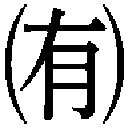
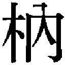

| シンデレラを捕まえて (ベリーズ文庫) | |
| 苑水真茅 | |
| (2015) | |
シンデレラを捕まえて
苑水真茅
唇に噛み付かれた。そっと、柔らかく。それはわずかな疼きと衝撃を、私に与えた。
知らなかった。自分の唇が、マシュマロみたいにふわふわしていたなんて。だってそういうことでしょ？ ほら、こんなにふにふにと歯を受け止めてる。
「ん......」
今度はぺろり、ぺろりと舐められた。マシュマロの次は、飴になった感覚に襲われる。噛まれて、舐められて、このまま食べられてしまうんじゃないかと思っていると、ぬるりとした舌が押し入ってきた。歯列を這い、動けないでいる私の舌を絡めとる。
するり、と首筋に手が這った。大きな手のひらはそのまま下りてきて、鎖骨を撫でた。指腹で窪みを幾度も撫で、肩まで辿る。
唇だけに意識を集中できなくて、時折体が震える。
と、キスの合間に少しだけ唇を離した穂波くんが囁いた。
「今日の服、かわいい。美羽さんの白い肌にぴったりだなって、ずっと思ってた」
買ったばかりのオフショルダーのカットソーは、肩口まで明らかにしている。ニット素材のそれは、柔らかな印象を与えるパステルピンク。
「あ、えと、その......」
「この色、きっと美羽さん好きなんだよね？ よくこの色身に付けてるし、俺も好き」
再び、深く唇を重ねられる。そのまま、ベッドに押し倒された。
腰元にざわりとした感覚がきたと思えば、服の中に手が忍び込んでくる。脇腹を撫で上げ、ブラジャーまで辿り着く。やわやわと感触を楽しむように触れられると、小さく声を上げてしまった。しかしそれも、彼の口の中に吸い込まれていく。
ふ、と唇が離れる。長く絡み合っていた舌が解放される。まだして欲しかった、そう言っているかのように、物欲しげに唾液が糸を引いた。
耳元に唇が落ちる。耳朶に歯を立てられて、体がびくんと動いた。
「ひゃぁぁ、ん」
「耳、気持ちいいみたいだね？」
限りなく近いところで鼓膜を揺らされる。吐息を感じ取って、声がまた洩れた。
「かわい。美羽さんの気持ちいいところ、一個見つけたね」
ふふ、と笑い声がして、次に耳朶を少し強めに噛まれた。その刺激は電流みたいにびりびりと体中を走って、私はまた声を上げる。
くち、くちとぬめった舌で耳を舐められる。大きな手はまだ、私の胸元を撫でるように移動していた。鎖骨からブラジャーの上に流れ、やんわりと揉んだかと思えば離れる。二の腕を掴み、また首筋に戻る。
どうも、私の肌の感触を確認しているようだった。手のひらで、指腹で、私の肌を丹念に調べている。
そういえば、私を誘ってきたときに「肌に触れたかった」って言ったっけ。
肌は綺麗だとよく言われるけれど、そんなに執着するほどなのかな？
「っやぁ......！」
急に、ブラジャー越しに胸の先を摘まれた。無意識に反った背中にするりと手が入り込み、あっという間にホックを外される。そして下着ごと、カットソーを脱がされた。
纏うものがなくなってしまい、思わず両腕で胸元を隠した。そんな私の手首を掴んで、穂波くんはゆっくりと広げる。剥き出しになった胸がふるんと揺れた。
「あ、えと、恥ずかしいんだけ、ど」
「見たい。見せて」
両手首が、穂波くんの手によってベッドに押し留められる。隠すものをすっかり失った私の上半身を、穂波くんはじっと見下ろした。
「み、見すぎだって......」
見られ続ける時間に耐えられなくなり、私は目をぎゅっと閉じた。すると、ふっと顔を近づけてきた穂波くんが、ちょこんと尖った胸先を口に含んだ。
ちゅう、と吸い上げられて、腰が浮く。
「や、ぁあん」
ころころと舌で転がされ、甘く噛まれる。音を立ててちゅっと吸われる。びくびくと反応してしまう自分に羞恥を覚えて、顔をぐっと背けた。
「や......」
偶然にも視界に入ったのは、ベッドサイドの小さなテーブルだった。瞳は、その上に光るものを捉えてしまう。私は、忘れようとしていたその存在に気がついてしまった。
それは、数ヵ月前の誕生日に私の恋人だった比呂から貰ったプレゼントだった。私の誕生石であるアクアマリンが嵌った、シルバーリング。
『かわいいだろ？』
そう言って、右手の薬指に嵌めてくれた比呂の笑顔を思い出す。
『左には、いつかな』
そう言って、左手の薬指には口づけを落としてくれた。と、そこまで思い返してしまうと、胸の奥がきゅうっと締め付けられた。目じりに涙が浮かぶ。
「......集中、させてあげるね」
比呂のことを思い出したのは、ほんの少し。わずかな時間だったはずだ。しかし、私の上にいる男性はそれを察してしまったらしい。
穂波くんの言葉に驚いた私が言葉を発する前に、口を塞がれた。舌が生まれる前の言葉を全部掬い取っていく。
乳房は形が変わるくらいに揉みしだかれ、唾液で濡れた乳首は指先で扱かれた。
「ん......ぅぅん......っ」
嬌声すら、穂波くんに飲み込まれていく。
「今は、俺に体を預けていなよ」
深く重なっていた唇と唇が、わずかに離れた。しかしそれは、吐息を交換するほどに近いところだ。ともすれば重なるほどの距離で、穂波くんが囁く。
「そうすれば、美羽さんは泣かなくってすむから」
酷く、心地いい声だった。だからなのか、彼の言葉は呪文のように私の中に響いた。
今だけは、穂波くんとこうしていれば、私は泣かずにいられる。
わずか数十分前に起きた悪夢を、忘れられる......。
私を真っ直ぐに見つめてくる瞳と、視線がかち合う。短いような、長いような時間のあと、私はゆっくりと頷いた。
「う、ん......」
頷くことは、自分の狡さを認めることだと分かっていた。
私は、現実から逃げ出したくて、この人の優しさを、好意を利用しようとしている。束の間の温もりに甘えているのだ。
だけど今の私は、それにすがらなくては心が粉々に砕け散ってしまう気がする。壊れそうなとき、差し出された手を取らないでいる強さは私には無かった。利用される彼に、申し訳ないと思っていても。
そんな私の薄暗い思いを、彼は分かったのだろうか。
「それでいいんだよ」と短くひと言だけ呟いたあと、彼は私の唇に噛み付いた。
＊ ＊ ＊
スペインバル『GIRASOL』。
パエジャが絶品だと有名なこの店のインテリアは、赤煉瓦の壁と一風変わった木製家具で構成されている。アンティーク調のランプを配置した店内はほどよく薄暗くて落ち着いた雰囲気。溢れる木製品のおかげもあってか、どこか温かさを感じる居心地の良い店だ。
席数はあまり多くはなく、小ぢんまりとしているこの『GIRASOL』は私たちの行きつけで、なにかあるたびに無理を言って貸切にしてもらっている。
今夜もまた店を貸し切って、とある会を開催していた。
「では、美羽ちゃんのこれからの活躍を祈って！ かんぱーい！」
総合チーフである椋田さんが音頭を取ると、みんなが大きな声で「かんぱーい！」と続いた。そこかしこでグラスがぶつかる音がする。
「ありがとうございます。こんな盛大な会を開いていただいちゃって......」
ビールジョッキを両手で抱えた私は、ぺこぺこと頭を下げた。
「なに言ってんの。美羽ちゃんがいたから私たちスタッフは安心して働けたんだよ。裏方がいないと色々困っちゃうんだから。ねえ、みんな」
椋田さんがそう言って辺りを見渡すと、みんながうんうん、と頷いてくれた。
「そう言ってくれると、すごく嬉しいです。ありがとうございます」
会の名目は、〝送別会〟。
私、高梨美羽は、今日をもって七年勤めていた会社を退職することになったのだ。
総合ビューティサロン『BonneJournee』。
フランス語で良い一日を、という意味のこの会社は、〝明日を綺麗にする場所〟をコンセプトにしている。
持ちビル内にヘアサロン、エステサロン、ネイルサロン、それにいくつかのセレクトショップを収めており、ここに来れば美容関係はすべて事足りるというのが大きな売りだ。
私は大学を卒業した二十二の年からずっと、この『ボンヌ』で事務雑務をこなしてきた。いうなれば、雑用係だ。ヘア・エステ・ネイルの三部門の間をうろちょろしては、備品の補充や発注、リネン類の処理をする。手が空いているときには受付業務をして、お客さまカルテの整理をする。そんな役割。
雑用係とはいえ、美しさを作る仕事の一端を担っていることに自負のようなものを持っていたし、自分のできることはなんでもやってきたつもりだ。この仕事に充実感を覚えてもいた。
そんな会社をどうして辞めるのか。二十九という年齢からして、寿退社と思われるかもしれない。だけど残念。そうじゃない。
理由は、〝スキルアップ〟だ。
経理事務か、医療事務。そのどちらかの資格を取って新しいことにチャレンジしてみたい。そう言って退職願を出した私を、社長を始めとしたみんなは、応援するよと送り出してくれることになったのだ。
......本当は、違うんだけど。
対角線上の席で談笑している男性を窺い見て、そっと笑った。
私には、一年ほど付き合っている彼氏がいる。
『ボンヌ』のヘアサロン部でスタイリストをしている栗原比呂が、その人だ。ぼんやりして、うっかりミスが多い私を支えてくれる頼りがいのある人。
美容師としての技術が高くて、比呂にカットしてほしいとサロンに通う人も多い。私の自慢の彼氏だ。
でも、『ボンヌ』は社内恋愛をあまり歓迎していない社風だ。以前に社員同士の恋愛でゴタゴタがあり、社内の雰囲気が最悪なものになったという過去のことが原因らしい。
なので、比呂とのお付き合いは誰にも言えない、秘密のものだった。
本当は、みんなに言いたかった。このすっごくかっこいい人は私の彼氏なんですよー、って。私の好きな人なんですよーって。
自慢したい。それもあるけど、大事なところは牽制だった。
比呂は、すごく女の子にモテる。大きな二重の瞳にすっと通った鼻筋。それと少し薄めの唇が、小さな顔に完璧じゃないかっていう配置で収まっている。その綺麗な顔とクルクルと動く瞳は、とっても表情豊かで魅力的だ。
そんな容姿で、さらに仕事もテキパキこなすのだから、比呂を好きになる女の子が現れるのは至極当然のことだと思う。
だからこそ、みんなに知ってもらいたかった。比呂は、私の彼氏なんです、って。
私は、そんなにかわいらしい女じゃない。
背は百五十五センチ。体型は極々普通で、人目を引くようなスタイルでもない。顔立ちは地味め。比呂曰く、パーツは悪くないけど組み合わせ方や配置が微妙、らしい。化粧をすればそれなりに見られるけど、だからといって美女になれるというほどでもない。
そんな私なので、自分にあまり自信が持てない。だから、いつか誰かに比呂を奪われちゃうかもしれないという不安をいつも抱えていた。
付き合っていることを公言してしまえば、この不安も少しくらい減るかもしれないのに。
そんな折のことだった。比呂が、跳び上がるくらい嬉しい言葉を私にくれた。
『社内恋愛って、辛い。美羽は俺のものだって、言えないんだもんな』
『私も。私も一緒だよ！』
そう答えた私を比呂はぎゅっと抱きしめて、続けた。
『なあ、美羽。『ボンヌ』、辞めてくれないか？ そしたら、胸張ってお前と付き合ってるって言える。みんなに自慢できるんだ』
『辞める？ それってもしかして』
『美羽だったら、別の会社でもやっていける。そうだ、医療事務とか、経理事務とかの勉強してさ、スキルアップしてみろよ。絶対、美羽ならやれる』
『......ああ、うん。スキルアップ、ね』
結婚。そんな言葉が脳裏をよぎらなかったと言えば、嘘だ。正直なところ、期待した。
私はもう二十九だし、友人の中には既に子育てに突入している子もいる。そろそろそういう話が出ると嬉しいな、と秘かに思ってもいた。
ほんの少しがっかりして、だけどすぐに、『ボンヌ』から離れたら状況が好転していくかもと考え直した。比呂の彼女として横にいられる、ということだけでもすごいことだもん。
『わかった......。比呂の言う通りにする』
悩んだあと、こくりと頷いた私を比呂は抱きしめてくれた。
『好きだよ。早く、みんなに美羽とのこと、言いたいな』
腕の中から比呂を見上げたら、優しくキスを落としてくれた。
――明日からは、言えるんだ。
嬉しさが込み上げてきて、そっと遠くの席の比呂を窺う。
エステサロン部のスタッフに囲まれた比呂は、楽しそうに笑いながらジョッキを傾けていた。
エステサロン部は、美人さん揃いだ。さすが、美を作る仕事の最前線にいる人たちと言ったところ。
特に、比呂の横に座っている上毛薫子さんの美しさは際立っていて、まるで女優さんみたいに綺麗だ。彼女みたいになりたいと言って通ってくるお客さまもいる。
比呂と同い年の彼女は美人な上に性格もいいらしい。私は事務的な会話しかしたことがないのだけれど、男みたいにさっぱりしているので話すのが楽しいと比呂は言っていた。
今も、薫子さんに肩口を軽く叩かれながら笑っている。
普段の私だったら、やきもきしたことだろう。彼女たちが比呂に触れる度に、笑いかける度に、いちいちダメージを負っていたと思う。
だけど、今日ばかりは少しだけ余裕をもってふたりを見ていることができた。
大丈夫、明日からはこんな思いしなくて済むんだもの。
「美羽さん、ビール持って来ていい？」
「ふえ!?」
不意に声を掛けられてびくりとする。声がした方向を見れば、『GIRASOL』のスタッフである穂波くんが立っていた。空になったジョッキを手に、首を傾げて訊いてくる。
「いつもよりペースが遅いみたいだけど？」
「え？ そ、そうかな」
「そうだよ。だってまだ二杯目だよ？」
「もう、二杯目だよ。私、そんなに飲まないもん」
「嘘ばっかり」
にか、と笑う。力強い瞳がきゅっと細くなって、大きな口の口角が上がる様子は、まさに、にか！ という表現がぴったりだ。
その笑顔はとても魅力的で、素敵だなといつも思う。
確か二十七歳になるという穂波くんは、目の保養になるくらいのイケメンさんだ。少し荒い印象で、端正な顔立ちの比呂とはまた違ったタイプ。特に、真っ黒な、深みのある瞳は目力があって、見ていたら引き込まれそうな不思議な魅力がある。
それに加えて、百八十センチを越す長身に筋肉質な体つき。日に焼けた浅黒い肌が快活な印象を与える。
かっこいいよね、彼。と『ボンヌ』のスタッフの間でもちょくちょく話題に上がる人だ。
「それにしても、今日が美羽さんの送別会だなんて、知らなかった」
穂波くんはしゅん、とうなだれた。
「美羽さんと話すの、すげえ楽しかったのに。なんで辞めちゃうの」
「スキルアップをね、したくて。これから勉強三昧、かなあ」
えへへ、と笑う。実際のところ、まだなにも考えていなかった。それなりの貯蓄はあるし、すこし休んでもいいかなと考えてもいるのだ。
「ふうん......スキルアップ、ねえ」
元気を無くした穂波くんが呟く。ちょっと不機嫌そうなのは、残念がってくれているから？ 私がいなくなることを惜しんでくれる人がいるのはありがたいなと思う。
「ふふ、ありがとう、穂波くん。そうやって名残惜しげにされるのって、ちょっと嬉しい」
「名残惜しいどころじゃないよ。ていうか、辞めたあともここに来てくれるよね？」
「もちろんだよ。ここの生ハムと海老のアヒージョは私の大好物だもん。絶対食べにくる」
「良かった。俺、美羽さんが来るの、いつも楽しみにしてたから」
穂波くんは本当に安心したように、声音を弾ませて言った。
この店に通っている内に、自然とスタッフさんたちと親しくなった。その中でも私が一番気楽に話をすることができたのが、この穂波くんだった。
最初は、大きな体と鋭い目つきに気圧されてしまって満足に目も合わせられなかった。迫力のあるイケメンさんとの接触なんて、これまでの人生でなかったもん。
だけど、笑った瞬間すごく柔らかな雰囲気になって、「また来てくださいね」って優しい声音で言われたときから、私の警戒心は解けた。
感じがいいなあ、この人。そう思って、そしてそれは間違いじゃなくて、私はここに来るたび、穂波くんと他愛無い会話を楽しめるようになったんだ。
「本当にありがとね、穂波くん。営業トークでも鵜呑みにして喜んじゃう」
「営業トークとかじゃないし！ 俺、美羽さんのこと」
「こらこら、穂波ぃ。美羽ちゃんにばっかりかまってないで、私のワインもってこーい！」
がば、と穂波くんの背後に抱きついたのは、すっかり酔った様子の椋田さんだった。今年四十歳になる椋田さんは、普段はバリバリ仕事をこなすかっこいい女性なのだけれど、お酒が入ると途端にかわいくなる。今も、仕事中じゃ考えられないようなへにゃへにゃした笑顔で、穂波くんの逞しい首を絞める真似をしていた。
「いっつもいっつも美羽ちゃんばっかりに声かけちゃってー。お前も若い子が好きかぁ」
「苦しいっすよー、姐さん。ほらほら、ワインでしょ。持って来るから待ってて」
「どうせ美羽ちゃんのこと狙ってるんでしょぉ？」
「ほらほら、椋田さん。穂波くんが苦しそうですよ？ ほら、サーモンのテリーヌ、食べませんか？ お好きでしたよね」
立ち上がり、椋田さんの分を取り分ける。
「美羽ちゃんありがとぉ」
むふふ、と椋田さんが笑った、そのときだった。
「実は私も、今度退職するんです」
ざわめきをかき消すような、凛とした声が店内に響いた。
「え？」
するりと穂波くんの首から手を離した椋田さんが振り返る。
私も穂波くんの向こう側、声が聞こえた方向に視線を送った。
声の主は、比呂の横に座っていた薫子さんだった。
「え？」
みんなの視線を集めた薫子さんは、ふいに比呂の腕を掴んで立ち上がった。
「なんと！ 私はこのたび、この栗原比呂と結婚することになりました！」
......え？
冗談？ 聞き間違い？
混乱する私を置いて、薫子さんは幸せそうに笑いながら続けた。
「現在妊娠三ヵ月です。授かり婚なの。ね、比呂？」
比呂に視線を向ける。呆然とした表情だった比呂が慌てて「今言うことじゃないだろ」と言う。そんな比呂に、薫子さんはぷう、とかわいらしく頬を膨らませてみせた。
「だって、早く言いたかったんだもん。それに、祝福はひとりでも多いほうが嬉しいでしょ？ だから私ね、美羽ちゃんがいる間に言いたかったの」
「ね、美羽ちゃん」と薫子さんが私に顔を向けた。
「お祝い、言って」
その眼は全然、笑っていなかった。
意味が、分からない。どういうこと？ だって比呂は私の彼氏で、明日からはみんなに言えるって、そう言ってくれたのに。
のろのろと周囲を見渡すと、なぜかみんな、気まずそうに顔を逸らした。いつもは真っ直ぐに見つめ返してくれる椋田さんまでもが、すっと私から視線をずらした。誰の呟きだろう、「浮気相手......」「制裁怖い」って声が聞こえた。
浮気相手？ それって、私のこと？ 私が、比呂の浮気相手......？
「あ、ええと......」
薫子さんの横にいる比呂を見る。比呂もまた、私から顔を背けた。薄暗い店内でもはっきりわかるくらい、顔を顰めていた。それは、比呂がバツの悪いときに必ず浮かべる表情だ。その顔で、私は全てを理解した。
......それは、今の状況を肯定してるってことだね。これは、趣味の悪い冗談ではないんだね。
『辞めてくれ』
そう言ったのは、私と別れたかったから？
明日から私たちは恋人同士になるんじゃなくて、他人になる予定だった？
「ね、美羽ちゃん。おめでとうって、言って」
薫子さんの声は、もう笑いを含んでいなかった。
どうしたら、いいんだろう。私はここで、泣いて喚いてもいいの？ 私も比呂と付き合ってるんですけど、って。
でも、言ってどうするの？ 薫子さんのお腹には比呂の赤ちゃんがいて、結婚するという。
そんな状態までいっているのに、ここで私がごねて泣いて、どうなるの？
「あ......ええと」
場の空気が重たい。食器のぶつかる音ひとつ、しなくなってしまった。みんな息を殺して、ことの成り行きを見守っている。
ふ、と気づく。
どうしてみんな、この状況に戸惑ってないの？ おろおろしているのは、私だけなんておかしくない？
まるでみんな、私と比呂の関係も、比呂と薫子さんの関係も知っているみたい。
ううん、〝浮気相手〟ってはっきり言った人がいる。そのときに誰も反応しなかった。ということは、みんな知っている、ということなのね......？
思い至った内容に呆然としていると、「ほら、美羽ちゃん」と薫子さんの苛立った声がした。
「ほら、言えるよね。比呂との結婚、おめでとうございますって」
「ええ、と」
薫子さんは、私から望む言葉を引き出すまでは、引く気はないようだった。「もうやめろよ」と小声で諌める比呂に、「黙っててよ」と厳しく言い返していた。
誰も私を見ていない。ただじっと、私が薫子さんに負けて祝福の言葉を口にするのを待っている。
「......じゃあ、薫子さんが先におめでとうって言ってくれます？」
そんな空気を破ったのは、あっけらかんとした穂波くんの声だった。
「は？」
薫子さんが苛立った声を洩らす。まつげエクステが縁取る大きな瞳が、不機嫌そうに穂波くんを捉えた。
「どういうこと？」
「いや、実はっすね」
手にしていた空のジョッキをテーブルに置いて、穂波くんは私の肩をぐいと抱いた。
「俺たちも、結婚するんですよ。ね、美羽さん」
は？
驚いて、抱き寄せてきた人を見上げる。私を見下ろして、穂波くんはにっこりと笑った。
「先にお祝いの言葉、もらっちゃおう？」
「はぁ!? 嘘でしょ？」
真っ先に声を上げたのは、椋田さんだった。
「だって美羽ちゃんは栗原く、あ、いやその」
やっぱり、椋田さんも知っていたんだ。口ごもる彼女を見ながら思う。
椋田さんは、私に仕事を教えてくれた大事な先輩だった。怒られたり呆れられたりしたけれど、根気よく仕事を教えてくれて、かわいがってくれた。私は、椋田さんが好きだったし、尊敬してもいた。
だけど椋田さんにとって、私はそんなに大事な人間じゃなかったのかな。比呂に他に本命の相手がいることを知らない私を、知らないまま辞めていく私を、傍観するだけだったなんて。
私は椋田さんにとって、どうなってもいい人間だったのかな。
たまらなくて、俯いた。
「嘘なんかじゃないですよ。俺、美羽さんのこと、ずっと前から口説いてたんです。最近ようやく俺のこと見てもらえるようになって」
私の横で穂波くんが饒舌に語る。
「美羽さんって、俺の運命の相手だって思ってるんです。絶対手放したくないんです。だから、逃げられる前に籍入れちゃいたいなあって、マジで」
「ほ、ほんとに言ってるわけ？」
椋田さんの声が上ずっている。
「当たり前じゃないですか。さっき姐さんだって言ってたじゃないですか。狙ってるんでしょ、って。めちゃくちゃ狙ってましたよ、で、落としましたよ」
すげえでしょ、と言って、穂波くんは私の肩を抱く手に一層力を籠めた。
「え、あ、本当なの、美羽ちゃん？」
「あ、えと」
本当な訳がない。穂波くんとは、この店の中だけの関係でしかない。
彼の本意はなに？ どうして急にこんなこと言い出したの？
顔を見上げると、穂波くんがふっと顔を近づけてきた。耳元でぼそりと囁かれる。
「みんな、美羽さんがあいつに遊ばれてたこと知ってる。美羽さんは、なにも知らないでいた、かわいそうな子のままで終わりたいの？」
「......っ」
穂波くんに言われて、ああ、と愕然とする。崩れ落ちてしまいそうだった。
この雰囲気は私の勘違いじゃなかった。みんな、知っていたんだ。私がなにも知らないまま捨てられようとしているのを、みんなは知っていた。
なのにこんな会をわざわざ開いてくれたのは、私が無知な、かわいそうな子だと思ったからなんだね。それは同情？ それとも馬鹿にするため？
視界の隅に、比呂がいる。比呂の腕に薫子さんが抱きつくようにして、寄り添っていた。比呂は頑なに、私のほうを見ようとしなかった。
「ひどい、よ......」
涙が溢れた。
その瞬間だった。
ぐい、と掴まれた肩に力が籠められ、顎に手がかけられる。無理やり上を向かされた私の唇を、穂波くんのそれが塞いだ。
「ん......うぅん......っ!?」
温かな唇が、泣き出す寸前の震える唇を覆う。わずかな隙間から舌が侵入してきて、口内をかき回した。
「うわ！ ちょっと、こんなところでなにしてんの！」
椋田さんの焦ったような声と、他の人たちの驚いた声が聞こえる。
急にキスされた私の頭の中は真っ白だった。どうしてこんなことするの!?
私の体をすっぽり覆ってしまいそうな大きな体を押し返そうとした、そのとき。
頬を流れる涙を手のひらで拭われた。流れを止めるように、何度も。
え......？ もしかして、この人、私が泣き出すのをみんなから隠してくれた？
唇に押し付けられる熱と、頬に触れる温かさを、私は拒絶できなかった。この人が今私から離れたら、みんなにみっともない泣き顔を見られてしまう。
比呂にも、薫子さんにも、誰にも、こんなとこで泣き崩れる自分を見せたくなかった。
「ん......」
穂波くんの熱い舌が、私の舌を掬う。肩から流れ落ちた手が腰に回り、ぐいと寄せられる。私はそれを、受け入れた。大きな彼の体は、みんなから私を隠してくれる。
涙、止まって。彼が隠してくれている間に、止まって。
「なにやってんだよ、みっともねえ！」
不意に、比呂の怒鳴り声がした。びくりと震えた私を、穂波くんが一際強く支えてくれる。
「こんな場所でそんなことやってんじゃねえよ！ 馬鹿か！」
ガタン、と乱暴に立ち上がる音がした。そこで穂波くんはようやく、私の口を解放した。
「あー、と、すみません。なんか今、美羽さんがすごくかわいかったんですよ」
あっけらかんとした声で返す。
「俺、美羽さんのことマジ好きなんですよ。あっさり理性飛ばされちゃうんですよね。だもんで、つい」
私は、穂波くんの体が壁になって比呂の様子が見えなかった。彼の付けていたえんじ色のエプロンだけが目の前にある。ず、と鼻を啜って、頬に手を添える。穂波くんのおかげで、そこはわずかに湿っているだけだった。
「つい、じゃねえよ、店員がなにふざけてんだ」
「ふざけてないっすよー。それに俺、美羽さんの婚約者だし、今だけは部外者扱いしないでくださいよ」
穂波くんの声は明るくて、笑みさえ含んでいた。みんなが私と比呂のことを知っていながらとぼけたように、穂波くんもすっとぼけていた。
「婚約者って、嘘だろ！」
「どうして嘘つかなきゃいけないんですか。今のキス見たでしょ？ もう一回しましょうか？」
「いらねえよ！」
比呂が大きな声を出す。席に着いたみんなはヒソヒソと話しながら様子を窺っている。その場はとっくに異常な雰囲気になっているというのに、穂波くんは「えー、そうですか？」とのんびりと返した。比呂が大きな舌打ちをしたのが聞こえたが、穂波くんはそれも聞こえないフリをして、にこやかに続けた。
「栗原さんだって、横に綺麗な彼女がいるじゃないですか。しかも結婚するんでしょ？ 俺と同じじゃないですかー。大目に見てくださいよ」
ぐ、と比呂が息を呑んだのが分かった。しかしそろそろ、怒りは限界にきたようだ。もともと、気の長い人じゃないのだ。
「馬鹿じゃねえの!? 付き合ってらんねえ！」
ガンッと激しい音がした。比呂が椅子かなにかを蹴ったのだろう。
「帰ろうぜ、薫子」
「え、あ？ ちょ、痛いよ、比呂」
ガタリと音がしたのを聞く。薫子さんの腕を引いて立たせたようだ。
薫子さんは多分、この状況についていけていない。さっきから声ひとつ聞こえなかったから。
当然だろうな。私を責めるために言いだしたのに、まったく違った方向に話が流れてしまっている。みんなすっかり、薫子さんと比呂の結婚話から意識が逸れているのだから。
私だって、どうしてこうなったのかわからない。ただ薫子さんより意識がはっきりしているのは、「みんなの前でみっともない姿を晒したくない」という思いがあるからだ。
「行くぞ、薫子」
「あ、う、うん」
ふたりが帰り支度をする気配がする。
きっと、比呂とはもうこれきりだろう。明日から、いや今この時点で、私は比呂と終わってしまった。終わるもなにも、私と比呂は初めからなにも始まっていなかったのかもしれないけれど。
でも、もうこれで比呂とは、お終い。
「あ......」
思わず、穂波くんの体を押しのけ、比呂の姿を目で追った。
薫子さんの腕を掴んだ比呂が、出入り口のドアに向かっているところだった。
と、くるりと比呂が振り返る。私と目が合うと、比呂はぐにゃりと顔を歪ませた。
「そんな女だと思わなかったわ」
「比......っ」
今まで、そんな嫌悪に満ちた表情を、言葉を向けられたことが無かった。さあ、と血の気が引いていく。
まだなにか言おうとしたのか、口を開きかけた比呂だったが、舌打ちひとつだけ残して、荒々しく店を出て行った。
乱暴に開け放たれた扉がギシ、ギシ、と揺れる。私はそれをただ見つめることしかできなかった。
......これで、終わっちゃった。なにもかも。
俯くと、ぽん、と背中を軽く叩かれた。その手のひらは私の背中を労るようにそっと撫でる。
見上げると、穂波くんが私を見つめていた。
「美羽さん、ごめんね」
ぽつんと声が落ちてくる。
そのごめんは、なにに対してだろう。私との嘘の関係を公表したこと？ 私にキスしたこと？ 比呂を怒らせたこと？ こんな終わり方のきっかけをつくったこと？
首を、ゆっくり横に振った。どれであっても、いい。
「ありがとう」
小さな声で伝えた。彼のおかげで、この場からかわいそうな高梨美羽は消えた。それだけは本当にありがたかった。
穂波くんは「そう言ってくれると、少しだけ罪悪感消える」とさっきとまったく違う頼りない声で言い、ぎこちなく笑った。
「び、っくりしたぁ......」
一拍置いて、気の抜けた声がした。多分、エステサロン部の木部さんの声だ。静まり返った店内に、彼女の特徴的な甲高い声はとてもよく響いた。
「なにこの展開。ありえなくないー？ 薫子の言ってたことと全然違......」
「あー！ え、えーっと！ な、なにも栗原くんたち、帰らなくても、ねえ」
木部さんの声を遮るように、椋田さんがあはは、と空っぽな笑い声を上げる。
居心地の悪い空気が店内に満ちた。
「と、とりあえずほら、みんな食べよ、飲も！ ね！」
「あー、う、ん」
ちらちらと私に視線が向けられる。
「穂波！」
カウンターのほうから、耳に心地よく響くバリトンの声がした。見れば、背の高い三十代中盤ぐらいの男性が立っていた。肩に付く程度の黒髪をうしろでひとまとめにし、黒縁の眼鏡をかけている。浅黒い肌に穏やかな笑みを張り付けた大人の男といった雰囲気のこの人は、『GIRASOL』のオーナーであるセシルさんだ。秘密主義なのか自分のことを一切話さない、謎の多い人。『セシル』という名前だけは分かっているのだけれど、それが苗字なのかどうかも、そもそも日本人なのかどうかも分からない。
さっきまで気配ひとつ感じさせなかったセシルさんは、くすくすと笑いながら近づいてきて、穂波くんの頭を軽く小突いた。
「仕事しろ、エロスタッフ」
「あー、ごめん、セシルさん」
穂波くんからみんなの方へ視線を移して、セシルさんは頭を下げた。
「すみません、みなさん。こいつ、美羽ちゃんを落とせてすごく浮かれちゃってるんですよ。場を乱したお詫びといってはなんですが、料理出させてもらいます」
その言葉と同時に他のスタッフがどんどんお皿を運んでくる。
海老のアヒージョにトルティーヤ、生ハムとモッツァレラのピンチョスにピンチョ・モルノ。あの、お詫びの割には豪華すぎるんですが。
「こんなにしてもらったら、申し訳ないわ」
椋田さんが慌てて言うと、セシルさんが鷹揚に笑った。
「美羽ちゃんと穂波へのお祝いも兼ねてますから」
セシルさんの眼鏡の奥の瞳と、私の瞳が交わる。セシルさんは私を安心させるように、にっこり笑って頷いた。言わなくても分かっている、と言うふうに。
どうなってるの？ なんでセシルさんまでもが穂波くんの咄嗟の嘘に乗っかってくれてるの？
驚いて立ち尽くしていると、穂波くんが私の顔をひょいと覗き込んだ。
「美羽さんの好きな牡蠣のオイル煮もあるよ。ほら、食べなよ」
「あ、えと。でも」
「心配しなくていいよ。俺のバイト代からこのお金引いてもらう。俺のせいで雰囲気悪くしちゃったもんね」
「だ、だめだよ、私が払う」
「美羽さんが払ったらおかしいって。俺が暴走したお詫びだもん」
にこ、と穂波くんが笑う。
「ぼ、暴走って言っても、そんな」
「それより座りなよ。ほら」
穂波くんに促されるように椅子に、座らされる。
「ビール飲んでさ、とりあえずひと息つこう。あ、こっちにジョッキひとつちょうだい」
横を通るスタッフからジョッキをひとつ受け取って、穂波くんは私に手渡した。
「喉、渇いたでしょ。飲んで」
「あ......。う、ん」
こく、とひと口飲み込む。確かに喉はカラカラに渇いていたらしい。潤っていくのが分かった。そのままジョッキの半分ほど飲みほすと、「美羽さんさすがー」と穂波くんが笑った。
ジョッキを置いて、肩で息をつく。対角線上にある、ふたつの空席に視線を流した。
あの空気からはどうにか逃れられたけど、なにも解決してはいない。どんな嘘を重ねても、事実私は比呂に二股をかけられていて、そしてそれをついさっき知り、〝捨てられた〟のだ。
場をやりすごしただけで、私の中では納得できていない。消化どころか、飲み込めてすらいない。
私はこんなところでなにをしてるんだろう。
「美羽さん？ どうかした？」
穂波くんの声にはっとして、横に立つ彼を見上げる。
心配そうに眉根を寄せているその顔には「大丈夫？」という言葉がはっきり表れている。
この人も、一体なんなんだろう。
どうして私にあんなことをしたの？ どうして庇ってくれたの？
頭は混乱するばかりだった。
しかし、『ボンヌ』のみんなは穂波くんとセシルさんの言葉をすっかり鵜呑みにしてしまったようだ。さっきまでの微妙な空気はどこへ消え去ってしまったのか、楽しそうにジョッキやグラスを酌み交わし始めていた。
「いつ結婚の予定なの、美羽ちゃん。式は挙げるの？」
「穂波くんってさあ、ここの社員さん？」
「こんなイケメンをこっそり捕まえてたなんて、美羽ちゃんずるーい」
わずか十分前には知らないふりをしていた人たちが、興味ありげに訊いてくる。笑顔ひとつ作れないでいる私を、〝照れている〟と判断している。
なにこれ、なんなの。
私って、そんなに〝軽く扱っていい〟人間な訳？
乾杯を求められながら、私はどんどん冷えていく感情のやり場を探していた。
雑用係ではあったし、直接的な利益は生み出してなかったけれど、それでも私は自分の仕事を頑張ってきた。みんなのサポートができるよう、できることはやってきた。なのに、こんなに軽い存在でしかなかったの......？
「ねえねえ、美羽ちゃんってば。穂波くんとの話、教えてよー」
木部さんが私の持っていたジョッキにワイングラスをカチンとぶつけて訊いてきた。
すっと流れるような目じりが綺麗な木部さんの目の周りは、お酒のせいかほんのり赤らんでいた。
そんな彼女を見ながら、私はジョッキの中身を一気に飲み干した。
ジョッキを置き、ぷは、と息をつくと、「おっと美羽ちゃん、これから語ってくれるのかなー？」と木部さんがぱちぱちと手を叩いて笑った。
「......、ですか？」
「ん？ なになに？」
「聞いてどうするんですか？ 今度はその噂でもするんですか？」
木部さんの笑顔が固まった。
「するつもりなんでしょう？」
見渡して訊く。みんな、唖然とした顔で私を見ていた。誰も返事をしなかったけれど、答えなんて聞かなくても分かる。
バッグと上着を掴んで、立ち上がった。
「今日はこんな会を開いていただいて、ありがとうございました。気分が悪くなったので、すみませんが失礼させてもらいます」
深々と頭を下げてから、席を離れた。
「美羽ちゃん！」
背中に椋田さんの声がかかったけれど、私はそれに振り返ることなく、店をあとにした。
外は、さらさらと雨が降っていた。
もうすぐ梅雨入りという季節。夕方から夜更けにかけて小雨が降るという今日の予報は、当たっていたようだ。私はその予報を信じて傘を持ってきていたけれど、その傘を店の中の傘立てに突っ込んだままだった。
あんな飛び出し方をしておいて、傘を取りに中に入るのも嫌だ。
「もう、いっか」
少しくらい濡れてもかまわない。大した雨じゃない。それに、気温が高いらしくそんなに寒くもない。
しっとり濡れたアスファルトに足を踏み出した。
髪に、肩に、柔らかな霧のような雨が降りかかる。傘を差している人たちの間を縫うようにして、早足で歩いた。
気づけば世界は水に満たされていた。目に映るものすべてが水の膜に覆われている。色取りどりの傘たちがくるくると水の中で舞う。何度瞬きしても、水が世界を満たすのは変わらない。
私は水の底を歩いているんだ。だからほら、ふわふわとした足取りで、世界を進める。水の中でも、歩いて行ける。
「ふーわふわ、ふわ......うー......っ」
......口遊んだ他愛無いメロディが、すぐに嗚咽に変わった。声を洩らさないように口を押さえる。
さっきから自分が泣いていることくらい、分かっていた。
こらえてもこらえても、涙は勝手に溢れて視界を滲ませた。涙は次々に溢れ、頬を伝い、雫に姿を変えて顎先からぽたぽたと落ちた。
私は私の中にしかない水の世界に逃げ込んでいるだけだって、分かっている。
さっきのビールで酔った？ それもあるかもしれない。だけどほんとの理由は、現実逃避。多分そんな言葉のやつだ、これは。
でも、現実を受け止めきれなかったら逃避するしかないじゃない。
信じてたものなにもかもが、私を必要としていなかったんだから。私は今日、大切なものをすべて無くしてしまった。
「うー......」
右手で口を押さえ、左手はぎゅっとバッグを握りしめて、私は歩いた。
立ち止まったら、そこから動けない気がした。座り込んで、泣いて、一歩も歩けなくなってしまう気がした。
ふらりと路地に入り込み、人通りの少ない道を選びながら歩く。誰の目も無かったら、どれだけ泣き顔を晒してもかまわない。
思うように動かない足をどうにか動かしていると、ふいに背後から肩を掴まれた。
「美羽さん！」
次いで、名を呼ばれる。力任せに振り向かせられると、そこには息を切らした穂波くんがいた。
「良かった、いた......」
ぜいぜいと肩で息をして、穂波くんは私にへにゃりと笑いかけた。
「あっという間にいなくなるんだもん。焦った。ほら、傘」
置いてきたはずの私の傘を開いて、差し出してくる。私はそれをのろのろと受け取った。
「な、に......。どして、ここにいるの......？」
「絶対泣いてるって分かってんのに、追いかけないわけないでしょ」
ほら、と穂波くんは汗ばんだ両手で私の頬を挟んだ。ぐい、と擦られる。
「やっぱ泣いてた」
「穂波く......」
私を見下ろす彼はしっとり濡れていた。着ているジャケットも少し色が変わっている。
私を見つめる黒い瞳は、少し悲しそうに微笑んでいた。
「ていうかさ、あの場から連れ出してやろうと思って、帰り支度してたんだ。そしたら美羽さんはもう店出たって聞いて、すげえ慌てた。見つけられて良かった。ひとりで泣かせるの、やだ」
ぐい、とまたも頬を擦られる。
「ごめんな。栗原さんのこと好きだったのに、あんなことしちゃって。でも、見てられなかった」
新しい涙が湧き上がる。ふるふると、首を横に振った。
あのとき穂波くんがいなかったら、私は惨めな姿を晒すしかなかった。やりかたには問題があったけれど、結果的に私は穂波くんに助けられた。
「好き......だったよ。仕事、辞めてくれって言われたときも......比呂と堂々と付き合えるならって、思って......」
ひとり言のように呟くと、穂波くんが「うん」と頷いた。
比呂のことが大好きだった。付き合ってきたこの一年、幸せだった。
「だけど、もう、どうしようも、ないね......」
比呂は薫子さんを選んだ。私の前から、いなくなってしまった。
去っていく背中を思い出すと胸が苦しくなって、泣き声を上げてしまいそうになる。きゅ、と唇に力を入れた。
「美羽さん......」
頬から穂波くんの手が離れたかと思ったら、その手は私の体に触れ、抱きしめてきた。
雨に濡れて冷えていた体が、すっぽりと温もりに包まれる。手にしていた傘がころころと転がっていった。
「穂波くん......離して」
今は誰かの温かさを感じたくなくて、そっと体を押した。
「追ってきてくれてありがとう。みんな、嘘を信じてくれたと思う。でも、もういいから。放っておいて」
「いやだ。俺、美羽さんの婚約者だもん」
「もう、その嘘をつく必要はないよ」
するりと穂波くんの腕から抜ける。一歩分ほどの距離を取って、頭を下げた。
「さっきはありがとう。穂波くんの嘘に助けられた。じゃあ、ね」
彼の前から立ち去ろうと踵を返すと、腕を取られた。
「まだ嘘をつかせて、お願い」
ぐいと腕を力任せに引かれ、体がよろりと傾く。穂波くんは私の腰に手を回し、バランスを崩した体を抱え上げた。
そして、そのまま唇を食べられた。
少し肉厚な唇が重なり、熱い舌が押し入ってくる。私の舌を吸い、噛む。
「ん......ぅん......っ」
頭の中が真っ白になる。必死に寄せられた体を押し返すけれど、筋肉質な胸元はびくりともしなかった。
「や、やめて......！」
唇がわずかに離れた瞬間声を振り絞れば、穂波くんが熱っぽく囁いた。
「お願い、まだ婚約者でいさせて。そうしたら、美羽さんを慰められる」
いつもは遠くからしか見たことが無かった黒い双眸が、ものすごく近くにある。
揺れる瞳は真っ直ぐに私だけを見つめ、その奥には、熱情がちらついていた。今まで見たことのなかった、穂波くんの中の男の部分。背中がぞくりとした。
「こんな慰め方じゃなくても、いいでしょ......」
「こんな慰め方がしたい」
再び、唇が重ねられた。啄むような口づけは、頬にも顎先にも額にも落ちた。
「穂波くん......やめ、よ......？」
「やだ。やっと止まった涙、溢れさせたくない」
耳の先に触れた唇が、耳朶に下りた。つ、と舌が這い、私は思わず声を洩らした。
「だめ。やめて......」
馬鹿だ、私は。やめてとか言ってるくせに、どれだけ甘い声を出しちゃってるの。やわやわと押し返したって、男の人にとってはなんてことないって分かってるくせに。
だけど、心地いいと思ってしまう。与えられる抱擁が、言葉が私を包み込む。
むきだしになった肩口に、穂波くんの手が触れた。しっとり濡れた肌を撫でるように、大きな手のひらが往復する。するりと流れて二の腕に触れ、感触を楽しむようにふにふにと揉む。
「ここ、すげえ柔らかい。この感触、すき」
耳に舌を這わせていた穂波くんが切なげに漏らした。吐息がかかり、体がびくりとする。
「美羽さんの肌、綺麗。ふわふわ柔らかそうで、ずっと触りたいって思ってた」
肩に戻った手が鎖骨に辿り着いた。人差し指が骨の部分を辿り、窪みを撫でる。その動きのひとつひとつに、びくびくと反応してしまう。
「もっと、触らせて」
切なげな囁き。二の腕を掴んだ手に力が籠められた。
「美羽さんの色んな感触、教えて」
頭がくらくらする。足が震える。彼に腰を支えられていなかったら、私はへたり込んでしまっていただろう。
穂波くんはどうして私にこんなふうに迫って来るのだろう。少し気に入っていた女の子を口説けそうだ、その程度なのかもしれない。しかし、今、そんなことはあまり重要じゃなかった。
欲しがられている。それが、今の私を揺さぶっていた。口づけも、肌を這う指先も、腰に回された腕も、押し付けられた体も、吐息ひとつまでもが今、私のために動いている。
なにもかもを失った私のために、彼はここにいる。
「美羽さん」
穂波くんの目が私の瞳を捕らえる。張り詰めた表情の中にある欲望を感じて、下腹部の辺りが疼いた。
「......いい、よ」
気づけば私は頷いていた。
穂波くんの唇がそっと弧を描き、ゆっくりと近づいてくる。私はそれを、わずかに開いた唇で迎えた。さんざん私を蹂躙してきた舌先が、初めてのそぶりで入ってくるのを、甘噛みで受け入れる。穂波くんの大きな体がわずかに震えた。
舌を絡ませながら、自分に言い聞かせる。
私は今、酔ってるから。振られたばかりで、自暴自棄になってるから。だからこんなふうに、簡単に籠絡された。それだけだ。
この人とはこの夜限りかもしれない、だけど、それでいい。『GIRASOL』に、二度と行かなければいい。『ボンヌ』を辞めた今、あそこに足を向ける理由はない。
たった一度だもん。一度くらい、この人の熱に頼って、甘えたって、いいよ。誰かに慰められて夜を越したって、いいよ。ひとりで泣くより、多分ずっといい。
私は砂糖でできているのかもしれない。
ふわふわした、綿菓子とかそういう物で構成されているに違いない。
穂波くんは私の体の至るところに唇を落とした。脇、背中、足先、ひざ裏、手の甲。時折べろりと舐めあげられ、柔らかさを確認するように噛み付かれた。食べられているみたい、と体中に与えられる甘い疼痛に身を委ねながら思った。穂波くんは私の中の一番美味しいところを探して、食べ続けているんだ。
手は肌を這い、強く揉んだり、優しく撫でたりを繰り返した。私の体は穂波くんに食べられ、もみくちゃにされていた。
それがたまらなく、気持ち良かった。食べられるって、気持ちいい。
「美羽さんの肌、いい。吸い付いてくるみたい。想像してたよりずっといい」
何度も穂波くんは言う。繰り返し言うものだから、私はだんだん、私の肌がシミひとつない、すべすべの陶器みたいに綺麗なものになった気がしてくる。
「ねえ、美羽さん」
絶えず降ってくる口づけの合間に、穂波くんが言った。
「ネックレス、してるね」
私の首元には、ネックレスがあった。木製のトップは花の形を模していて、花芯はシルバーでできている。それを指で摘み上げて、彼は私の瞳を窺った。
「あ、これは私が自分で買った、お気に入りで......」
咄嗟に思ったのは、シルバーのリングと同じ意味合いの物だと思われたのではないかということだった。
言い訳がましく言葉を重ねてしまう。
「大学のときに......セレクトショップでひと目惚れしたの。だから、その」
「ふうん、そっか」
「うん。かわいい、でしょ？」
「......うん」
穂波くんは、信じてくれただろうか。そんなことを気にしてしまう。だって、他の男の人からの贈り物を身に着けたままこんなことできる女だとは、思われたくない。
「うん、かわいい」
くす、とぎこちなく笑って、穂波くんは再び私の体に顔を落としていった。
「ん......っ」
穂波くんの指先が、ふわふわではないところに触れた。固くなった胸の先を摘む。少し乱暴にぐり、と指先をすり合わせるように動かされると背中がしなった。
「美羽さん、これくらいのが気持ちいいんだ」
おへその辺りに舌を這わせていた穂波くんが言った。同時に指先に力が籠もる。
「やっ、はぁ......ん......っ」
「ここが好きなのは、さっき見つけた」
足の付け根の部分に舌が這う。ざらりとした舌の感触が体を痺れさせる。ちゅ、と音を立てて吸われると、自分の口から洩れる声が大きくなったのが分かった。
「かわい、美羽さん。もっとかわいいとこ、俺に見せて」
穂波くんは、私の気持ちいいところを全部探り出そうとしているようだった。少しの刺激でぱちんと弾けてしまう、私を夢中にさせてしまう粒を見つけては、穂波くんは丁寧に触れてきた。
「も......もう、だめ......ぇ......」
おかしくなってしまいそうだった。自分の知らない部分がいくつも暴かれては、弾ける。その度にみっともない声を上げて、体をびくびくと震わせた。
綿菓子だった私は穂波くんの手で別のモノに変えられていってるんじゃないかと思う。
「美羽さん、かわい」
私の顔の横に両手をつき、腕の分だけ離れた場所から穂波くんが見下ろしてくる。捕食者の目から熱情は消えることなく私を絡め取る。色んな液に濡れた口元がたまらなくいやらしかった。
こんなに扇情的な顔をする人だった......？
とろけた頭で思う。お腹の奥に新たな疼きを感じた。
「ほなみ、くん」
声を上げ続けたせいなのか、名前を呼んだ声は酷く頼りなかった。
「ん？」
最初は怖いくらいだった力強い瞳が、私を見つめる。熱を帯びた黒い瞳の中を窺うように、じっと見つめ返した。
「あ、ごめ......、そろそろ、俺が限界」
その顔、ヤバい。彼はそう呟いて、私の足を抱えた。
「ここまで我慢できたのも、奇跡」
切なそうにそう言うと同時に、熱い物が私を穿った。
「ひゃぁ、ああ......んっ！」
声が溢れる。電流が巡って、体を支配する。逞しい体にすがりついた。
このとき、私の心の中に比呂も『ボンヌ』も存在していなかった。
私だけを見て、私だけを求めてくれる人が与えてくれる快楽にただ溺れた。
それからどれだけ、彼と体を重ねていたのだろう。
それも満足に分からなくなるほど、私たちは熱を分かち合い抱き合い続けた。そして最後には気を失うように眠りに落ちたのだった。
目覚めたのは、私が先だった。
喉の渇きを覚えて目を開けたら、目の前に穂波くんの寝顔があった。すうすうと心地よさそうな寝息を立てている。
「うわあ！ ......あー、と」
一瞬のけぞるほどに驚いたけれど、見慣れない周囲を見渡してようやく思い出す。どうして自分が裸で穂波くんとベッドにいるのか。
そうだそうだ、そうだった、と口の中で呟く。
あの雨から逃げ出すように、私たちは手近にあったホテルに入ったんだったっけ。
彼を起こさないようにそろそろと身を離し、ベッドから下りた。
体の節々が痛む。腰には鈍い痛みがあって、足がふらついた。
のろのろと備え付けの冷蔵庫に向かい、開ける。お茶のペットボトルがあったので、それを取った。音をたてないようにそっと開けて口をつける。冷たいお茶は渇いた喉を潤し、半分寝ぼけたままだった頭を冷やしてくれた。
はっきりしてきた頭は、数時間前までの出来事を目まぐるしくプレイバックしてくれる。あんな姿やこんな痴態を、それはもう、今すぐ記憶を消去したいくらい鮮やかに。
ペットボトルを両手で抱え、すっぱだかという恥ずかしい恰好のまま、私はその場にへたり込んだ。
「どうしよ......」
思わず、呟いていた。すっかり血の気が引いていた。
私、なんてことしちゃったんだろう！
辛かった、悲しかった、心のやり場がなかった。だけど！
与えられるまま、望まれるまま、こんなことして良かったの!?
いや、良くない。全然、良くない。
ぜんっぜん、良くない！
「あ、あわ、わああ」
成す術もなく床に這いつくばり、小さな小さな唸り声をあげた。穂波くんを起こしてはいけないというのは、こんな馬鹿な私でも分かっていた。
......帰ろう。
思いついた最善の策は、それしかなかった。
穂波くんが起きる前に、帰ってしまおう。
ここにいてはいけない。目覚めた穂波くんと、何事もなくブランチを共にする勇気なんて私には無い。どんな言葉を交わせばいいっていうの。
慎重に散らばった衣服を拾い上げ、急いで身に着けた。
一度だけ、穂波くんが寝返りを打ったときはひやひやしたけれど、幸いにも彼が目覚めることはなかった。
私は最低限の身づくろいをして、文字通り逃げるようにして、部屋をあとにした。
梅雨の長雨がようやく落ち着いた、夏の日差しを思わせる暑い昼下がり。私は食料品の買い出しのために外出していた。
スーパーマーケットで支払いをしながら、私はふっと息を吐いた。いくら貯金があるといっても、徒に浪費するわけにもいかない。
それに、アパートに閉じ籠ってばかりじゃ精神的にも良くない。新しい環境に身を置いて、心機一転を図るべきだと思う。
だって、ひとりでいたら同じことばかりを繰り返し思い出してしまう。
「はあ......私って、最低女......」
ネギにタマゴ、食パンの入ったビニール袋を片手に、私は情けないひとり言を洩らした。
送別会の夜から、二十日ほどが過ぎた。
悪夢のような夜はすっかり遠くなり、平穏な無職生活が続いている。
比呂からはなんの連絡もなく、『ボンヌ』のスタッフからも、退職手続きの件で経理から一度電話があっただけだ。すべてあの夜で終わったということだ。
私の『ボンヌ』での数年間はなんだったのだろうと思うと、寂しくもある。薄っぺらな関係しか築けなかったというのは、悲しい。
けれど、だらだらと関係を引きずらなくて済んだことを良しとしよう、と最近では思えるようになった。
比呂のことは......、これは、なんと言えばいいのだろう。
あの夜、あんなにショックを受け、世界が終わったような錯覚すら覚えたというのに、比呂を失った傷は私を長くは苦しめなかった。
一年も生活の中心にいた人が突如消えたという喪失感はあったけれど、数日もすれば消えた。
私はもしかしたら薄情な女なのかもしれない。
しかし、思い返せば、私と付き合っている間の比呂にはおかしいところが沢山あった。休日にあまり外出したがらず、私の部屋で過ごすことが多かったし、私がエステサロン部と親しくすることを極端に嫌がった。どこに行っているのか分からない空白の時間が常にあった。
そして。
比呂はいつも、体を重ねたあと慌ただしく帰って行った。
そんなとき、私はいつだって、冷えていく体にシーツを纏わりつけて、『まだ行かないで』という言葉を呑み込んで見送る。体の奥に燻る感覚だけが、比呂が私に置いていく名残だったけれど、そんなものは虚しさを増幅させていくだけで......。
けれど、私は比呂に言葉を吐き出せることはないままだった。無理にすがって嫌われるのが怖くて、言う勇気が出なかったのだ。
私は比呂が好きで好きで、傍にいられるだけで嬉しかったから、比呂の言葉をすべて信じてさえいれば幸せになれると思っていた。
でも、それはいけないことだったんだ。私は傷つくのが怖くて、比呂に近づこうとしていなかった。
だから、傷つくには私は比呂を知らなさすぎたのだ。
それに、もうひとつ......。
「美羽ちゃん！」
カサカサと小さな音を立てる買い物袋を手に歩いていると、ふいに名前を呼ばれた。聞き覚えのある声だけど、と辺りを見渡してみれば、数メートル先にひとりの男性が立っていた。
印象的な黒い髪に、黒縁眼鏡。すらりとした体を清潔そうなカッターシャツとジーンズに包んだ、爽やかな男性。
太陽の下で会うのは初めてかもしれない。いつもは調節された光の中でしか出会わない人。『GIRASOL』のオーナーであるセシルさんが、穏やかな笑みを浮かべて、私に向かって手を振っていた。
「良かった、みつけた」
「え？」
「探してたんだ。この辺りに住んでるって『ボンヌ』の子に聞いちゃった」
近寄ってきたセシルさんは、私を見下ろしてにっこりと笑った。
「元気そうだね」
「あ、はい。まあ、元気は元気です、けど」
首を傾げる。セシルさんに探されるような理由はない。
「なにか......ぁぁああ！ あ、あの、送別会のことでしょうか!? だ、代金！」
慌ててバッグに手を突っ込んだ。セシルさんの用事といえば、あの夜の食事の代金くらいしか思いつかない。
「違う違う。あれは俺が勝手にやったことだから、気にしないで」
手を振って否定して、セシルさんは「時間ある？ どこかで少し話さない？」と言った。
「美羽ちゃんも、話すこととか訊きたいこと、あるでしょ？」
「あ、ええと」
そこでようやくハッとする。訊きたいことは、ある。セシルさんの腕を掴んで「行きましょう」と言った。
近くにある茶房に入った私たちは、日当たりの良い窓際の席に向かい合うようにして座った。
きな粉と黒蜜がたっぷりかかったわらび餅と抹茶が私の前に、セシルさんの前には艶々の小豆が載った豆かんとコーヒーが並んだ。
「お、さすが美羽ちゃんオススメの店。美味しそうだね」
「甘さ控えめなんで、いくらでも食べられますよ」
竹製のデザートフォークを手にした私は、目の前で優雅にコーヒーカップを傾けている男性を窺った。
「それで、あの。私への用事って、なんでしょうか」
「それはあと回しにするとして、美羽ちゃんの質問を先に聞かせてよ」
「え、えー、と」
指先で細いフォークをくるくる回しながら言葉を探す。
そういうふうに聞かれたら、どう話を切り出していいものかわからない。そんな私を、セシルさんは愉快そうに眺めていた。
「あ、そうだ。あの、セシルさんと......穂波くんは私がその、二股をかけられているって知ってたんですか？」
「うん」
セシルさんはあっさりと頷いた。
「送別会の一ヵ月くらい前、だったかな。エステ部の子たち何人か、もちろん上毛さんも一緒だったんだけど、彼女たちが店に来てくれたときにね。あまりに大きな声で話してるものだから」
浮気してた、許せない、と薫子さんはひどく怒っており、周囲がそれを宥めるという感じだったようだ。
「そこから先はまあ、君を辞めさせようとかそんな話をしていてね。随分お酒が入っていたから、酔って言っているだけかなと思ってたんだけど......。本当に美羽ちゃんの送別会があるって聞いたときは驚いたよ」
「そうなんですか......」
送別会の一ヵ月前と言えば、比呂に『ボンヌ』を辞めてくれと言われたころだ。あの言葉の陰には、薫子さんがいたのかもしれない。
「何事もなく終わるようなら口出しするつもりはなかったよ。それは穂波も一緒だった。だけどちょっと酷い雰囲気になったからね、穂波はつい動いちゃったんだと思う」
そこで、ふう、とセシルさんはため息をついた。
「にしても、あんな助け方はないよね」
「あー......」
思わず顔が真っ赤になってしまう。わらび餅にフォークをぐさぐさと刺してしまった。
「俺も驚いたよ。普通はあんなことするような奴じゃないのにね、穂波。よっぽど美羽ちゃんを気に入っているんだろうね」
「え、えーと、その......」
「美羽ちゃん、怒ってない？」
「え？」
フォークを動かす手を止めて訊く。セシルさんは「俺たちのことだよ」と続けた。
「人前であんなこと......したのは穂波だけど。ほら、俺もあいつの嘘に真実味持たせようと加担しちゃったでしょう。いくら美羽ちゃんが泣きだしそうだったとは言え、やりすぎたかなって反省してるんだ、俺は。君の意思も確認せずに、ごめんね」
と、セシルさんは申し訳なさそうに言って、頭を下げた。
「そ、そんな。私、あのときすごく助けられました。ふたりがいたから、みっともなく泣かずに済んだんです。本当に、ありがとうございました」
慌てて言って、深々と頭を下げた。そんな私に、セシルさんは、「良かった」と笑ってくれた。
「それを聞いて安心したよ。じゃあ、穂波のことも、怒ってない？」
「穂波、くん......」
改めて訊かれ、つい色んなことを思い出してしまう。頬が益々赤くなるのが分かった。
このところ、私の頭の中を占めているのは、穂波くんだった。
本を読んでいても、家事をしていても、頭の中はふっとあの夜に戻ってしまう。穂波くんの言葉とか、表情とか、そういったものがまざまざと蘇ってくるのだ。
どうして穂波くんは、私にあんなことをしたんだろう。
どうして穂波くんは、私に優しくしてくれたんだろう。
思い出せば思い出すほど、考えれば考えるほど、彼の存在が私の中で大きくなっていく。
口ごもった私を見て、セシルさんが眼鏡の奥の瞳を楽しそうに細めた。
「怒ってない、みたいだね」
「あ、あの。セシルさんは穂波くんからなにか訊いてたり、するんでしょうか？」
「あの夜のことに関してなら、特には。穂波も言いたがらないし」
セシルさんはコーヒーをひと口飲んで続ける。
「それに、あいつも本職が忙しくなったみたいで最近会ってないんだ。連絡も減ったなあ」
「本職？」
思わぬ言葉に反応してしまう。てっきり『GIRASOL』の社員さんだと思っていたのだ。
「そう。穂波はね、暇なときとかにふらりとやって来ては、バイトをしてくれてたんだ。本職は別にある」
「そうだったんですか」
そういえば、私は穂波くんについてなにも知らない。
「穂波とそういう話してない？」
「はい」
話をするような余裕がなかったです、とは言えない。
「気になる？」
くすりとセシルさんが笑った。
「あ、ええと」
「まあ、本人の口から聞くといいよ」
「本人、と言われましても......」
連絡先なんて、知らないのだ。知っていても、コンタクトを取る勇気があるかどうかはまた別の話だけれど。
あんなふうに逃げ出した私を、穂波くんはどう思ってるだろう。怒ってる？ 呆れてる？ それとも、どうでもいいと思ってる？ どれもありそうで、でもそうであってほしく無くて怖い。
「連絡先、教えようか？」
「あ、いえ、その」
どうせ、コンタクトを取ることはできない。自分のヘタレ具合は自分が一番よく知っている。
でも、教えてもらっておいたほうがいいかな。聞いておかないと、穂波くんとはこのまま終わってしまう。だけど、どんな感じで連絡すればいいんだろう。
そんな私の葛藤を知ってか知らずか、セシルさんは笑って言った。
「まあ、訊きたくなったら俺に連絡してくれたらいいよ。はいこれ、名刺」
「わ。ありがとうございます」
都築正識......。へえ、セシルさんって漢字だと〝正識〟って書くんだ。
「さて、本題なんだけど」
セシルさんの言葉に、名刺に落としていた視線を上に上げた。
「はい、なんでしょう」
「美羽ちゃんはもう次の仕事は見つかってる？」
「あ、いえ、まだです。そろそろ探そうかなとは思っているんですけど」
「そう、良かった。実はね、知り合いの会社が事務兼雑用をこなせる子を探しててさ。美羽ちゃんにぴったりな仕事だなあと思って」
「え、本当ですか」
思わず身を乗り出した。
「小さなデザイン会社なんだけど、俺の店の内装を請け負ってもらった縁で今も親しくさせてもらってるんだ。で、そこの社長から『いい子いないー？』って訊かれて、ぱっと思いついたのが美羽ちゃんだったんだよね」
「デザイン会社、ですか......。私、デザイン関係の知識なんて全然無いんですけど、いいんでしょうか」
「うん。社長からの条件は事務の経験がある子、ってことだけだったから。美羽ちゃん、『ボンヌ』でそういう仕事してたでしょう？」
そう言われて私は頷いた。
「はい、しておりました」
「じゃあ、どうかな？ せめて面接だけでも行ってみない？」
「では、お言葉に甘えて、行かせていただきます」
次の仕事のことを考えなくちゃと思ってた矢先に、なんてありがたいお話だろう。
顔の広いセシルさんの紹介だからおかしな会社ではないだろうし、前の職歴を生かせるかもしれないというのはすごく嬉しい。
よろしくお願いします、と頭を下げた。
「良かったー。俺、『いい子がいますよー』って先に言っちゃってさ。美羽ちゃんに断られたらどうしようかと思ってたんだ」
セシルさんが大げさに胸を撫で下ろす仕草をした。それから、新たな名刺を一枚私にくれた。
「これ、社長の名刺。会社のホームページがあるからチェックしておくといいよ。面接だけど、美羽ちゃんはいつが都合いい？」
「早いほうがいいですよね。明日でも大丈夫です、私」
「あ、ほんと？ じゃあちょっと待ってて。連絡してくるよ」
セシルさんは携帯を片手に店の外へ出て行った。わらび餅を咀嚼しながら、窓越しに電話をかけている姿を見る。
話はうまくまとまったらしい。私と目が合ったセシルさんが親指と人差し指をくっつけて、小さな丸を作ってみせた。
良かった。このまま、新しい仕事、決まっちゃうかも。
私はさっきセシルさんからもらった名刺に視線を落とした。
『ユベデザイン 代表 遊部康介』
幾何学模様があしらわれた一風変わったデザインの名刺には、住所やホームページのアドレスが書かれている。
ここから駅ふたつ分のところかぁ。通勤は『ボンヌ』のときより楽だなぁ。『ボンヌ』は四つ先だったからな。
帰ったら早速ホームページをチェックしなくちゃ。
「美羽ちゃん。明日の十時にユベデザインの事務所で面接になったんだけど、いいかな？」
戻ってきたセシルさんに訊かれて、頷いた。
「ありがとうございます」
「ううん。俺こそ助かったよ、ありがとう」
それからは、セシルさんのお話を聞かせてもらった。スペインまで修行に行っていた話とか、『GIRASOL』をオープンさせるまでの話とか、どれもすごく面白い内容だった。
『GIRASOL』では穂波くんの人気も高かったけれど、不動の人気を誇っていたのがオーナーであるセシルさんだった。かっこよくてスタイルもよくて大人の雰囲気ダダ洩れ。そして面倒見もいいとくれば、まあ当然なことではある。
しかし彼の私生活や過去はあまり知られていなくて、ちょっとした謎の人でもあった。
そんなセシルさんの知られざる一面は、なるほどそういう経験がこんなイケメンを生み出すのかと感嘆するばかりだった。
気づけばかなり長い間セシルさんと話をしていて、夕方近くになってようやく私たちは別れたのだった。
＊ ＊ ＊
翌日面接に行った私はその場で採用され、驚くことに次の日にはユベデザインに出社していた。
聞けば、前任の女性が切迫流産で緊急入院してしまい、そのまま退社してしまったそうだ。それで、少しでも早く後任が欲しかったとのことだった。前任者のことを思えば大変な事態だけれど（お腹の赤ちゃんは順調であるらしい）、おかげで私の再就職がすんなり決まったことにただただ、感謝だ。
セシルさんにはすぐに報告の電話をした。本当はお店まで行って直接お礼を言いたかったのだけれど、翌日から仕事開始となったので、時間が取れなかったのだ。
セシルさんは就職祝いに今度食事をご馳走すると言ってくれたけど、ご馳走しなければいけないのはどちらかというと私のほうだ。どんなお店に連れて行けば喜んでくれるんだろう？
『それより、穂波の連絡先は訊かなくっていいの？』
電話を切る前、セシルさんは笑みを含んだ声で訊いてきた。少しだけ、そのことを考えていた私は言葉が詰まったけれど、『お、教えてください』とどうにか言葉を絞り出せた。
穂波くんの連絡先はしっかり携帯のメモリに入れたけれど、未だにかけられないでいる。時間が経てば経つほど、勇気は無くなり、不安だけが大きくなる。拒否されるかもなんて考えたら、電話をかけることなんてできなかった。
それでも、暇さえあれば穂波くんのアドレスを呼び出して画面を眺めているものだから、今では番号を暗記してしまっていた。情けない女だ、私は。
勤務し始めて、あっという間に二週間が過ぎた。仕事に慣れなきゃと思って必死になっていると、時間が早送りされているような気がしてくる。
「おはようございます」
ユベデザインは、小さなビルの一階にある。
大きな声で挨拶をしながら、私は会社のドアを開けた。
「おはよう、美羽ちゃん」
出迎えてくれたのは、遊部康介社長。六十をいくつか越した男性だ。恰幅が良くていつもニコニコしていて、私の中でのイメージは七福神の恵比寿さまだ。
社長は名の知られた建築デザイナーでもある。昔は痩せていてかっこよくて（本人談）、雑誌の取材をしょっちゅう受けていたのだそうだ。
「コーヒー淹れますね」
「ありがとねえ」
社長は事務所内にいくつも点在する観葉植物に水やりをしている。社長の朝の日課である。
「はい、どうぞ」
「美羽ちゃんのコーヒーは美味しいよね。コツでもあるの？」
「埋もれてたミルを見つけたので、豆から挽いてるんです」
事務所の奥にあるキッチンの、片隅に仕舞われていたのを見つけたのだ。
この会社の人たちはこれでもかと言うくらいにコーヒーを飲むので、せっかくなら美味しいものを、と豆から挽くようにした。
「ほう、ミルなんてうちにあったんだねえ。美味しいよ、うん」
「ふふ、ありがとうございます」
みんなに朝のコーヒーを淹れるのが私の朝の日課になっている。他の人も社長のように美味しいと思ってくれているといいなあ。
「おはよーございまーす」
ドアが開いて、欠伸交じりの声がする。この声は紗瑛さんだ。
「おはようございます、紗瑛さん」
「おはよー、美羽ちゃん」
金色のショートヘア。両耳にはピアスをいっぱい付けて、オフホワイトのスーツに身を包んだ女性。意志の強そうなきりっとした吊り気味の目が印象的だ。彼女は大きな欠伸をしたあと、「コーヒーいい？」と言う。そんな彼女に「はい」と笑顔で答えた。
ユベデザインのチーフである常盤紗瑛さんは、私より十歳上の三十九歳。だけど、全然そんな年齢に見えない。くすみのない肌はぷるぷるだし、タイトスカートから見える足は細くしなやかだ。
キッチンで紗瑛さん用の特大マグカップになみなみとコーヒーを淹れていると、また誰かが出社してきた気配がした。
ひょいと事務所に顔を出してみると、ひょろりと背の高い男性がデスクに向かっているところだった。麻のジャケットに中折帽がしっくり似合っているダンディな人は、経理担当の玉名一郎さん。この会社の創業当時から、ここで経理業務についているそうだ。
玉名さんのマグカップも出して、コーヒーの支度をした。
「おはようございます、玉名さん」
「おはよう、高梨さん。ああ、いつもありがとう」
「紗瑛さんもデスクに置いておきますね」
「ありがとねー」
そして、就業時間の五分前。そろそろかなぁとキッチンに戻って支度をしていると、バッタンとドアが激しく開く音がした。
うん、時間ぴったり。
トレイにマグカップを載せて事務所に戻ると、出入口のところでいつものように膝をついている人がいた。
「おはようございます、安達さん」
「お、おは......うぇっ、きつ！」
ぜいぜいと肩で息をしているのは、デザイナーの安達遠矢さんだ。男性にしては小柄なほうで、体つきも華奢。顔立ちは少し童顔で、大きな黒縁の眼鏡がしっくりと似合っていてかわいい。私よりふたつ年上だというのに年下に見える。
そんな安達さんはいつも時間ぎりぎりに駆け込んでくる。電車のダイヤが悪いというのが本人の弁だけれど、『一本早めればいいだけでしょうが！』と紗瑛さんに叱られている（でも早める気はないらしい）。なので、いつも息を切らせて駆け込んでくるのだ。
この四名（プラス私）がユベデザインの全メンバーである。
入社二週間目の私にできる仕事は、電話応対と簡単な書類整理だ。玉名さんの横のデスクを与えてもらい、毎日玉名さんに仕事を教えてもらっている。
「......はい、かしこまりました。ではそのように常盤に伝えます」
ノートに用件を書き込んでいく。紗瑛さんは客先に出向いており、不在だ。
経理である玉名さんを除いて、みんな客先や現場に出向くことが多い。日中はデスクにいない時間のほうが長いかもしれない。電話応対の数はその分多かった。
「はい、では失礼いたします」
通話を終えたあと、ノートの内容を黄色のメモ用紙に書き写していく。
「ん？ 高梨さん、それってメモの色を変えてる？」
玉名さんが私の手元を見ながら訊いた。
「あ、はい」
私は電話の脇に分厚い付箋メモ帳を置いている。分厚いメモ帳は五色の層になっていて、私はその色を人別に使い分けているのだ。社長が青、紗瑛さんが黄色、安達さんがピンクで玉名さんは白。残った黄緑を自分用。色で分けたほうがイメージとして記憶に残りやすいし、間違えにくいのだ。ノートにも書くのは、自分の控え用。二度手間のようだけれど、これが一番仕事を覚えやすい。
「ふうん、これはなかなかいいね」
玉名さんに褒められて、私はえへへ、と笑った。
これは『ボンヌ』で覚えたやり方だ。三部門の仕事を混同しないように、メモ類などは色分けしていたのだ。
教えてくれたのは椋田さんだった。このアドバイスのおかげで、入社したての私のミスは段違いに減ったのだ。
あんなことがあったけれど、やっぱり私を成長させてくれたのは椋田さんだったなあと、あらためて思う。尊敬していたことに後悔はない。
「じゃあ次は顧客データを整理してもらおうかな。向こうの書架にある緑のファイル、あれを全部入力していってくれる？ 前任の田村さんが途中までやってくれてたから、デスクトップにファイルがあると思う」
「はい、わかりました」
と、玉名さんが「そろそろおみえになるかな」と時計を見上げて言った。
倣うように時計を見上げれば、十四時を指そうとしていた。そうだ、来客の予定が入ってたんだった。菜食カフェをオープンさせる予定の、藤代さんというご夫婦だという話を聞いている。
お茶の準備をしなくちゃ、とキッチンに向かう。今日はむし暑いので冷茶にしよう、と硝子の茶器を出していると、「こんにちは」と声がした。
「いらっしゃいませ、お待ちしておりました」
社長の出迎える声がする。お茶の支度をして、事務所の隅に設けられた応接スペースに向かった。
パーテーションで区切られているだけの応接スペースだけれど、置かれている家具はとても素敵だ。
飴色になった木製の応接セットの長テーブルは、大きな一枚板を使って作られていた。緩やかな曲線と艶になんともいえない味がある。同じ木材で作られている椅子も、背もたれに同じような曲線がほどこされていた。社長はこの椅子にゴブラン織りのクッションを置いていて、それがまた椅子にぴったり似合っているのだ。この事務所の中で、私の一番のお気に入りスペースである。
その大好きな椅子にどっしりと座り込んだ社長の向かい側には、私とあまり年の変わらない男女が座っていた。
お茶を置き、自分のデスクに戻る。
狭い事務所内での、パーテーション越しの会話は筒抜けで、私はその話をなんとなしに聞きながらデータの入力作業を行っていた。
元はケーキ屋だったというビルの一室をリフォームして、カフェを開店させたい。その改装をユベデザインにお願いしたいというのが、今回の依頼内容のようだ。
ご主人のほうはすでに具体的な構想ができているらしい。ガサガサと大きな紙を広げるような音がしたかと思えば、それはイメージ図だったらしく、熱心に社長に説明を始めた。
「オニグルミを使ったキッチンカウンターを以前見かけまして、それがずっと憧れだったんです！ 柔らかな色合いに温かみがあって、こんなキッチンをいつか自分も、と思っててですね」
「ほう、ほう」
「それでですね、この長テーブルのような自然のカーブっていうんですかね。こういうのがいいなと思ってるんですよ。棚は、収納スペースを広くとりたいけどあまり存在感を出したくなくて。ほら、頭上にドーンと存在感があるのも重たくて嫌でしょう？」
森の中にいるようなナチュラルな空間づくりがしたい。グリーンを多く配置して、お客さまにのんびりとした時間を過ごしていただくんだ。ご主人がそう言うと、奥さまもそれに応える。
「疲れたときに、あの店に行って心を落ち着けようって思ってもらいたいんですよね。ですから無機質な材質じゃなくて、温かな木を使いたいなって。木って手触りがすごく優しくて、囲まれているだけで穏やかな気持ちになりますもんね」
おふたりがあまりに楽しそうなので、聞いているこちらまでもがわくわくしてくる。
隣にいる玉名さんにそっと声をかけた。
「こういうの、いいですね。誰かの夢を叶えられる、っていう感じがします」
「だよね。僕も、この仕事の良さだと思ってるよ」
それからも藤代夫妻はお店のコンセプトだとか、理想の形だとかを熱心に説明していた。
藤代夫妻の希望は、自然の素材をふんだんに使った温かな店にしたいとのことだった。特に、ご主人のほうは家具に思い入れがあるらしい。テーブルひとつ、椅子ひとつにそれぞれデザイン画があるようだった。
「どうでしょう。私たちの理想を形にしていただけますか？」
藤代夫妻の声が重なった。その声音にはわずかに不安の色がある。
「ええ、もちろんです。うちには、腕の良い家具職人もいますからね」
ふたりの不安を払拭するように、社長が明るい声で言った。
「私と彼なら、必ずご期待に沿えますよ」
「本当ですか！」
「ええ」
私は横の玉名さんを見た。
「家具職人さんなんて、いたんですか？」
まだ知らないメンバーがいたなんて、と驚いてしまう。玉名さんは「社員ってわけじゃないけどね」と笑った。
「遊部の古い知り合いで、木材を扱うときはよく彼に頼んでいるんだ。腕は確かだよ」
「へえ」
そっか。社長や紗瑛さんたちはデザイナーだもんね。実際に作業に当たる人が別でも、当たり前か。
それから社長は具体的な打ち合わせに入り、数日中に現場に確認に行くところまで話をまとめていた。
「ではまた。今日はありがとうございました」
「こちらこそ、これからよろしくお願い致します」
藤代夫妻を見送ったのは、十八時に近づくころだった。ビルの隙間から覗く空が赤紫色に染まり始めている。
「さて、これから忙しくなるなあ」
私と並んで藤代夫妻を見送っていた社長が大きな伸びをして言った。
「明日はとりあえず行田町まで行ってくるか」
行田町は、隣町だ。取引先の会社とかあったっけ？ とわずかな知識を引っくり返すが思いつかない。
「あいつに仕事を頼まにゃならんからなあ」
「ああ。先ほど仰っていた家具職人さんですか？」
「うん、そう。ああ、そうだ。美羽ちゃんも一緒に行く？」
「え？ 私ですか？」
「会っておいたほうがいいよ。これからしょっちゅう顔を合わせることになるからね」
玉名さんの話だと、社長の知り合いで、よく仕事を一緒にするということだった。となれば、きちんと挨拶をしておくべきだよね。やりとりをすることもあるだろうし。
「じゃあ、ついて行ってもいいですか？」
「うん。じゃあ明日、出社後に俺の車で行こう。あ、美羽ちゃん、見てごらん。明日もいい天気になりそうだよ」
社長が指差した空の先には、一番星がほんわりと光を放っていた。
「あ、本当ですね」
「梅雨も明けたし、本格的に暑くなるなあ」
暑い季節がもう、そこまでやって来ていた。
＊ ＊ ＊
家具職人さんは、大抵は田舎や郊外に工房をかまえていることが多いらしい。木材の管理のために広い敷地を必要とするからというのが、大きな理由だそうだ。
今向かっている家具職人さんも、行田町の山裾に工房があるという。事務所から車で一時間ほどの場所にある、自然豊かな町の片隅だ。
セダンを運転しながら社長が説明してくれるその話を、家具職人という仕事にまったく知識のない私はふんふんと聞いていた。家具作りというお仕事について大まかなイメージさえ持てないのだから、少しでも覚えなくては。
「今から会いに行く奴は、先代のころからの知り合いなんだよ。先代は宮田重行っていう結構有名な職人なんだけど、これが本当に腕のいい職人でねえ。事務所の応接セットはその宮田の爺さんに作ってもらったものなんだよ」
「あの応接セットですか！ 私、あれすごく素敵だなって思ってたんです」
「いいでしょ、あれ。会社興すときに、記念に作ってくれって頼んだんだ。まあ、その爺さんも五年ほど前に亡くなっちゃってねえ」
社長は残念そうに眉尻を下げた。けれど、すぐに表情を明るくする。
「でもね、後継ぎがしっかりしてるんだ、これがまた。爺さんよりいい職人になるんじゃないかなあ」
「へえ、お会いするのが楽しみです」
車はどんどん市街地を離れ、山に近くなっていった。景色は木々と田んぼ、少しの民家といったものに変わっていく。このまま山に登っていくんじゃない？というところで、ようやく止まった。
垣根に囲まれた敷地の中に、少し大きめの鉄骨組みの建屋と、小ぢんまりとした古民家があった。建屋の前には木材が積み重なっているのが見える。あちらが工房ということだろう。
道の脇に車を停め、社長のあとをついて行く。
民家の縁側の窓は開け放たれているけれど、人の気配はない。
「お。これいいなあ。ゼブラウッドだ」
社長が台の上に置かれていた大きな一枚板の前で足を止めた。黒や茶、ベージュの層が折り重なったような木目が綺麗だ。
「こういうのをカウンターに使っても面白いよなあ」
ふうん、と腕を組んで考える顔つきからは、いつもの柔和な笑みが消えている。厳しいまなざしで見つめる様子は優しい恵比寿さまではなくて、厳めしい毘沙門天のようだ。
「あれ？ 遊部さん、もう来てたんだ」
ふいに、背中に声がかかった。それに反応して社長が振り返る。
「おう、穂波。すまんね、ちょっと早めについた」
社長が、私のうしろに向かって声をかけた。社長が口にした名前に、私は思考を止めてしまう。
今、社長はなんて呼んだ？
「かまわないよ。それよりさ、それ、ちょっといいだろ」
「ああ。形もいいし、質もなかなか」
背後から声が近づいてくる。間違いない。私はその声の主を、知っている。
「ていうか、今日はひとりじゃないんだね」
「ああ。新しく入った事務の子なんだけど、紹介しておこうと思って連れてきた。高梨美羽ちゃんだ」
「は......？」
社長に促されてのろのろと振り返ると、そこにはやっぱり、あの夜以来毎日私の意識を連れ去ってしまう男性が立っていた。
想像でも幻でもない、本物がそこにいる。
「美羽、さん......」
幻聴ではない、現実の声が私の名を呼ぶ。
ベージュのツナギ姿の穂波くんは、大きな目をこれでもかというほど見開いて驚いていた。当然だ。私だって、こんなことになるなんて想像していなかった。
だって、まさかこんなことあるはずがない！
「......お、久しぶり、です」
もぐもぐと挨拶をして頭を下げる。顔は勝手に赤くなり、声が震えていた。
心の準備もなにもできてないよ、こんなの困る！
「あれ？ ふたりとも知り合いか」
なにも知らない様子の社長がそう言ったあと、「ああそうか。セシル繋がりか」と勝手に納得した。
「セシルさん......？」
穂波くんが私と社長の顔を交互に見る。
「あ、あの。私、セシルさんの紹介でユベデザインに入ったの」
「いつ、から？」
「二週間くらい前だよ。ね、美羽ちゃん」
私の代わりに社長が答えてくれる。
「知らなかった」
穂波くんの声が呆然としている。
「セシルさん、そんなことひと言も言ってなかったのに」
「あいつも忙しいんだろうなあ」
「あー......、なんだこれ」
がりがりと頭をかく。その声音はわずかに苛立っているようで、私は身を竦ませた。
あんな逃げ出し方をした私を、彼が良く思っているはずがない。どころか、彼の中ではあの日のことは一夜だけのことであって、こうしてまた会うことを快く思っていないのかも......。
そのとき、彼が洩らした小さな小さな呟きが、私の耳にするりと届く。
「困るよ、これ」
社長の耳にも届かないぐらいの呟き。多分、穂波くんも私が聞こえていたなんて気づいていない。だけど、私は聞いてしまった。
そっか。困るよね、こういうの。あんなことをした相手と仕事で付き合わなくてはいけないって、迷惑なことだよね。
心に大きな重しが載った。
迷惑がられても仕方ない。だけど、辛いって思ってしまう。
「さて、仕事の話に入ろうか。工房の机借りるよ」
社長が建屋の中に入って行った。中から、「美羽ちゃんは打ち合わせの間、見学してなさいよ」とのんびりした声がかかる。
「......あ、はい！」
返事をして、私は穂波くんをそろりと窺い見た。ばちりと目が合ったので、頭を下げる。
「ご、ごめんなさい。あの、知らなかったの。穂波くんが社長の言ってる家具職人さんだなんて。だから、その」
「あとで、少し話そ？」
ぼそりとそう言って、穂波くんは社長を追うようにして中へと入って行った。
......やっぱり、不愉快なんだ。
ため息をついた。
セシルさんも、教えてくれていたら良かったのになあ、と恨む気持ちが頭をもたげる。でも、連絡先を聞いても結局なにもできなかった私が言える言葉じゃない。
ユベデザインはいい会社だ。優しくて良い人たちばかりの恵まれた環境。そんな会社を紹介してくれたことを感謝しなくちゃ。
穂波くんとのことは、おいおい考えよう。一事務員と職人さんに、そんなに接点はないかもしれないし。
「......とりあえず、今は仕事に集中しなくちゃ」
遊びに来てるんじゃない。社長に言われた通り、勉強を兼ねた見学をさせてもらおうと、ふたりのあとを追って工房に入った。
「......わあ」
むせ返るような木の匂い。鉄骨むきだしの簡素な造りのそこは正に『作業場』という感じだった。見慣れない工具や機械がいくつも置かれており、木くずや木片がそこかしこにまとまっていた。
真っ先に目を引いたのが、壁に作り付けられた棚に並ぶものだった。思わず駆け寄ってしまう。
その棚には、大小様々な鉋やノミ、鋸、そして名前の分からない道具たちが綺麗に並んでいた。鉋だけでも二十個以上あるのではないだろうか。こんなにたくさんの数を使い分けるのか。
「ほえー」
別の棚には沢山の砥石が置かれていた。多分、これも種類があるんだろう。ぱっと見ただけでも、表面のざらつき具合が違っていた。
あの大量の刃物は、全部穂波くんが手入れしているんだろうか。きっと、こまめに手入れしているんだろうな。あの道具たちはどれも大切に扱われているのが、私の目でも分かったもの。錆びているものなんて、ひとつもなかった。
ああ、私って、本当に穂波くんのことをなんにも知らなかったんだなあ。
彼の仕事において重要なのだろう道具たちの一つひとつを眺めながら思う。穂波くんは、こんな道具を使ってこんな丁寧な手入れをする人なんだ。
振り返って、工房の隅にいるふたりを見た。ふたりはちょうど、わたしの対角線上にいた。
そのスペースは応接間を兼ねているのだろうか。大きなデスクといくつかの丸椅子、アルミ製の書架が置かれ、壁際には大きなホワイトボードが掛けられている。
仕切るものもなにもない開放的な空間だから、その様子は容易に窺えた。デスクに向かい合わせに立ったふたりは広げた書類に視線を落としていた。話の内容から察するに、藤代夫妻から預かった書類であるらしい。
「依頼主のイメージは掴めた。このデザインだと強度に難があるから補強が必要だけど、全体的な雰囲気は損ねないで済むんじゃないかな」
「家具に関しては心配しちゃいないさ。お前ならできるだろ。問題はカウンターキッチンでな。これがデザイン画と現場の見取り図」
「ふう、ん......。この柱が邪魔になるわけだ」
『GIRASOL』では、屈託のない笑顔をいつも浮かべていた。怖そうな見た目を帳消しにしてしまうほどその笑顔はかわいらしくて、私にとっては年下の素直な男の子だった。
二週間前のあの夜は、私を捕食してしまいそうな、獣じみた色気を纏った男の顔をしていた。お腹の奥を刺激してくる扇情的な表情は、私の瞳を惹きつけて離さなかった。
そして今の顔は、また違う、新たなものだ。
紙面に落とす視線も、顔つきも、私の知らなかったもの。
こんな顔して仕事をするんだ。そんな声音で話すんだ。
この工具たちを、彼はどんなふうに操るんだろう。どんなふうに木に触れるのだろう。どんなふうに作業するのだろう。
勉強だなんて言いながら、考えるのは穂波くんのことばかり。見つめているのはたったひとり。こんな自分を馬鹿だと思う。仕事に対する意識が低すぎる。情けないことだ。
それでも、どうしても穂波くんから目が離せなくて、意識は引き寄せられてしまう。
「ちょっと待ってて。このデザイン画のコピーとらせてもらう」
「おう。こっちも持って行け」
穂波くんが紙の束を掴んで古民家の方へ走り去っていった。
そこでようやく、私も息をつくことができた。
意識を穂波くんから切り離すことが、こんなに難しいだなんて。私ったら、気を抜いたら仕事で来ていることを忘れてしまう。
頭をぶるぶると振って、気持ちの切り替えを計った。
どうにか仕事モードに切り替えられた私は、それからいくつか設置されている機械を見て回ることにした。
どんな用途で使われる物か分からない物ばかりだけれど、どれも興味深い。社長が言っていた爺さんというのは、穂波くんのおじいさまに当たるんだろうか。鉋にせよ、作業机にせよ、年季の入ったものが多かった。
「あ......」
作りかけらしい椅子が、機械の前に置かれていた。
シンプルな背もたれ付きの椅子は、座面の部分が少し窪んでいて座り心地が良さそうだった。
表面にはまだなにも加工していないようだ。そっと撫でてみれば、柔らかな手触り。
「いいな、これ」
すごく素敵な椅子になるんだろうなと思う。思わず顔が綻んだ。
「あ。あっちにも」
小さな椅子は子供用のようだ。体を支えるように取り付けられたアームレストは丸みを帯びている。背もたれの部分がハート形にくり抜かれており、それは丁度大人の手のサイズに合う。椅子が持ち運びしやすいよう、持ち手になっているのだろう。
使いやすさとか安全性とか、そういうことも考えているんだなあ。そんなことを思いながら眺める。
「――美羽ちゃん、終わったよー」
点在する作品や工具を見て回っている間に、話は進んでいたらしい。社長の声にはっとすると、いつの間に戻っていたのか穂波くんもいた。
「面白いもの、あった？」
穂波くんに訊かれて、壁の棚を指差した。
「ええと、あの。工具、すごいのね。あんなにたくさん」
「ああ、それ？ うん、じいちゃん譲りの自慢の品！」
にか、と穂波くんが笑った。目元をくしゃっとさせて、口角をぐっと持ち上げる、人懐こいその笑顔は、いつも見せてくれていたものだ。
その笑顔を向けられたことが、無性に嬉しい。彼にとっては、仕事上のやりとりなのかもしれないけれど。
「さて、会社に戻るかな。と、その前に穂波、あのゼブラウッドの写真撮らせてもらうな」
社長がデジカメを持って外へと出て行った。それと同時に、穂波くんが私に駆け寄ってくる。
「美羽さん！」
「は、はい！」
目の前に穂波くんが立つ。背が高い彼を私は見上げる。
見慣れないツナギ姿。捲った袖口からは、日に焼けた逞しい腕が伸びていた。がっしりした首。その上にある顔は、今は笑顔ではなく、眉間にシワを刻んでいた。大きな口も、きゅっと結ばれている。
大きな瞳は真っ直ぐに私を見つめていた。
「あ、あの？」
「今晩、時間とれる？」
「え？」
「メシでも食いに行こ？ 俺、ずっと美羽さんに会いたいって思ってたんだ。だから、こうして会えたのを無駄にしたくない」
だめ？ と窺うように、穂波くんが小首を傾げた。眉尻をぐっと下げて、私の返答を待っている。
驚いた。だって私は、穂波くんが私と関わり合うのを嫌がっていると思っていた。さっき会ったときに、『困る』って洩らしたじゃない。
だから、話というのも先日のことをなかったことにしてくれと、そう言われるのだとばかり思っていた。
「私がユベデザインにいて、迷惑なんじゃないの？」
おずおずと訊けば、穂波くんは勢い良く首を横に振った。
「なに言ってんの！ セシルさんにハグしたいくらい喜んでるって！」
「だって、ここに来てすぐのとき、困ったって言ってたじゃない」
そう言うと、「聞いてたの!?」と穂波くんが驚いたように目を見開く。頷くと、「だって困るでしょ！ 心の準備できてねえもん」と言った。
「美羽さんが来るって分かってたら、もっとちゃんとしてた」と彼は唇を尖らせてぷいと横を向いた。
子供っぽい仕草と言葉に、思わず笑う。胸の奥がポカポカと温かくなり始めていた。
「ちゃんとって、どんなふうにしてたの？」
「とりあえずツナギじゃねえよ。髪ももうちょっとマシにしてた。今日寝起きのまんまなんだ」
「そうなの？ 全然気づかなかった」そう言うと、穂波くんは「ああ、もう」と肩で大きく息をついた。
「気づいて！ そこは気づいて！ いつも美羽さんに会うときは頑張ってるんだから、俺」
「ん？ それって冗談？」
首を傾げた。穂波くんとは『GIRASOL』で会ってはいたけれど、別に約束をとっていたわけではない。行けばたまたま穂波くんがいた、というだけのことだ。
「あ、いや、うん。いいや」
穂波くんは急に照れたように笑って、「それでさ、いいかな？」と訊いてきた。
「ご飯、だよね。うん、いいよ」
頷くと穂波くんが「やった」と言った。
「俺、そっちまで行くよ。ユベデザインの近くに美味しい店あるから、そこ行こう？」
「いいの？」
「もちろん。つーか、このあたりには店ねえし」
確かに。ここに来るまでの道のりを思えば、納得するしかない。
「美羽さんは、何時くらいに仕事が終わる？」
「十八時かな」
「分かった。そのころまでにユベデザインに行くね。あー、と」
穂波くんはポケットの中から携帯を取り出して、「番号、教えて？」と訊いた。
「あ、うん」
簡単に番号を交換する。実は番号知ってるんだけどなあ、と思いながらも、初めて聞くふりをしてしまう。
「美羽ちゃん、帰ろうかー」
ひょいと社長が顔を覗かせた。
「あ、はい！ ええと、じゃあ、また」
「うん。また、夜に」
穂波くんが笑う。彼に見送られて、工房をあとにした。
事務所に戻ってくると、珍しく全員が揃っていた。紗瑛さんも安達さんもデスクにいる。
「ただいまー、これお土産だよー」
社長が帰り道に買った白玉ぜんざいの入った箱を掲げると、パソコンとにらめっこをしていた紗瑛さんが「うえーい！」と声を上げた。
「休憩しよう、休憩！ 美羽ちゃん」
「はい、コーヒー淹れましょうか」
「うえーい！」
「あ、じゃあ俺も手伝うよ」
安達さんが立ち上がって一緒にキッチンに向かってくれた。
「宮田くんの工房に行ってきたんだって？」
今日の豆はイタリアンロースト。ミルでガリガリと豆を挽いてくれていた安達さんが訊いてきた。
「作品見た？ まだ若いのに、しっかりした仕事するんだよねぇ、彼」
「いくつか見ました！ すごく素敵だなと思いました」
「高梨さんは『GIRASOL』の都築さんの知り合いだったよね。『GIRASOL』で使っている家具は、全部宮田くんの作品なんだよ。知ってた？」
「えっ、そうなんですか!?」
知らなかった！ トレイに白玉ぜんざいを並べる手を止めた。
「カウンターと、そのうしろの棚も宮田くん作だよ。あのときは何日も現場に通い詰めてね。都築さんと店に泊まり込むこともあったんだ」
「ほえー」
店内を思い返す。そっかあ。あの家具たちは、穂波くんの作ったものだったのか。
「宮田くんのおじいさんが有名な木工家でね。昔は何人も弟子を抱えていたような人だったんだ。その人に小さなころから仕込まれていたっていう話だよ。おじいさん亡きあとはスウェーデンに二年ほど修行にも行ってるし、その実力たるや、だよね」
「スウェーデンですか！」
「うん。北欧家具の本場だからね。彼のデザインを見たら分かるけど、結構その影響を受けてるんだよ。『GIRASOL』で使われてる間接照明分かるかな。檜を使った丸みのあるやつなんだけど、あれなんかは顕著だと思うね」
さすが建築デザイナーさんと言うべきか、安達さんは熱心に細かな説明をしてくれた。木材は、その種類によって色んなクセがあるらしい。穂波くんはそれぞれの木材の長所を伸ばす使い方ができると安達さんは褒めた。
「俺はまだ彼と組んだことが無いんだけどね、いつか一緒に仕事してみたいなあって思ってるんだ」
「絶対面白いことになると思うよ」と、安達さんは楽しそうに言った。
すごいなあ、穂波くん。安達さんの眼鏡の奥の瞳が笑っているのを見て、なんだか嬉しくなる。そういうふうに期待されるって、すごくいい。
感心している私を横目に、安達さんは豆を挽き終えた。コーヒードリッパーに粉を落とし込んで、「これでいい？」と訊く。
「あ、はい。ありがとうございます」
少しお湯を注いで蒸らす。それから二、三回に分けてお湯を注ぐ。淹れたてのコーヒーを全員分用意して、事務所に戻った。
十八時になって、安達さんと玉名さんの三人で会社を出た。社長は書類作成、紗瑛さんは懇意にしている工務店さんと応接スペースで打ち合わせ中で、まだ帰れそうな気配はなかった。
「じゃあ、私はあっちの方向ですので、ここで失礼」
帽子を取って会釈をする玉名さんを見送る。
「高梨さんは駅利用だっけ。俺と同じ沿線、じゃないよね？」
「駅は同じですけど、安達さんとは逆方向ですね」
「ああ、そうなんだ」
会社を出る前に確認したら、穂波くんから連絡が来ていた。駅前で待ってくれているらしい。
それから駅に向かって、ふたりで肩を並べて歩き出した。駅まで徒歩で五分程の距離だ。
「安達さん、毎朝この距離を全力疾走なんですよね」
「はは、うん。どうしてもねえ、ダイヤのために十分早めるってことができないんだよ。目が覚めるまでに時間が掛かっちゃって」
ずり下がる眼鏡を指で押し上げて安達さんが笑う。
「朝が弱いんですか？」
「そう。目覚ましを三つも用意してるのに、意味がない。いや、三つあるおかげで遅刻は免れてるのかなあ」
「......そうかもしれませんね」
話をしている間に、駅舎が見えてきた。帰宅時間の最中のせいか、混んでいて人がいっぱいだ。
「美羽さん！」
しかし、彼はあっさりと私を見つけ出した。真っ直ぐに私に駆け寄ってきてくれる。
「わ、穂波くん」
「仕事、お疲れさま」
クロップドデニムにざっくりとしたシャツ、麻のジャケットを着た彼は、昼間のツナギ姿とは雰囲気が違っていた。
私の前に立って、にっこりと笑う。その嬉しそうな笑顔についドキドキしてしまう。
「お、お疲れさま」
「あれえ、宮田くん」
私の横にいた安達さんがきょとんとした声を上げた。
「どうしたの、こんなとこで」
「こんちは。俺、遊部さんとこに美羽さんいるって知らなかったんですよ。で、今日初めてそれが分かって、嬉しくって誘っちゃいました」
にひ、と屈託なく笑う穂波くんに、「なんだぁ、知り合いだったの」と安達さんが言った。
「はい！ だもんで、手を出さないでください！」
「な!?」
はきはきと答えた穂波くんに驚いたのは、私だ。なにを言ってるの、この人は！
安達さんも驚いたらしい。ぽかんと口を開けた。
「え、ええと......。どういう意味合いで言ってるのかな、宮田くん？」
「ダメですよ、安達さん。美羽さんは俺のですから、絶対に手出ししないでくださいね」
にか、と笑う穂波くんの前で固まったふたり。もちろん、私と安達さんだ。
「今から口説くんで、安達さんはサクサクッと帰ってくださいね。お疲れさまでしたぁ」
「ちょ、ちょっと！ 穂波くん、なに言ってるの！」
「だって今から美羽さんの時間もらう約束だもん。減らしたくない」
「な！」
思わず顔が赤くなる。さっきから本当になにを言ってるの、この子は！
そんな様子を見ていた安達さんは、「えー、宮田くんってそんなタイプだったの、えー」と眼鏡を何度も押し上げる。
「す、すみません、安達さん」
どうしてだかペコペコ頭を下げているのは私だ。穂波くんはあいかわらずニコニコしている。自分の発言を一体どう思っているのだ。
そんな私たちに「じゃあ、とりあえず帰るね」と言った安達さんは、首を傾げながら改札の向こうに消えて行った。
「じゃあ、行こっか、美羽さん」
「へ？ あ、うん」
安達さんの背中を目で追っていた私だったが、先へ進む穂波くんのあとを追った。
穂波くんが向かったお店は、通りから少し外れた場所にある和食のお店だった。既に予約を入れていたらしく、名前を告げると個室に通される。
さほど広くないけれど、花をモチーフにした和小物がいくつも置いてある上品な部屋だ。
撫子の花が彫り込まれた座椅子に座り、穂波くんと向かい合う。ここに来たことがあるという穂波くんに、注文を任せた。
「ごめんね、強引に誘って」
ふたりきりになると、安達さんと別れてから無口になっていた穂波くんがぽつんと言った。
「どうしたの、急に」
「いや、美羽さん、迷惑だったかなってちょっと反省してる」
穂波くんは私に遠慮がちな視線を向けた。
「俺のこと、嫌ってない？」
「え？」
「付け込むような真似したから、あの夜。俺に呆れていなくなったんでしょ。今日、会った瞬間はすげえ嬉しくて、誘わなきゃってそれしか考えてなかったんだけど、さ。やっぱ嫌だったのかなって思って」
しゅんとうなだれた彼の体が酷く小さく見える。叱られるのを待つ子供みたいだと思った。
「そんなこと、ないよ！」
考えるより先に、そう言っていた。
「私のほうこそ、あんなふうに帰っちゃってごめん。だけど、恥ずかしかったし、どんな顔しておはようって言っていいのかも分かんなかったの。私のほうこそ、穂波くんに嫌な思いさせて嫌われちゃったかなって思ってた」
「ほんと？」
「うん。今日会えて、良かったって思ったよ。誘ってもらえて、嬉しい」
私がそう言うと、ぱあと穂波くんの顔つきが明るくなる。「良かった！」と彼がいつもの笑顔を見せたところで、ビールと前菜が運ばれてきた。
「すっげえ嬉しい」
ジョッキをカチンと合わせると、穂波くんが本当に楽しそうに笑った。
「なにより先に美羽さんの連絡先訊くべきだったのに、それをしなかった自分を本気で恨んだ」
あれから、穂波くんは私と連絡を取ろうと頭を振り絞って考えてくれたらしい。しかし、婚約者と言ってしまった手前『ボンヌ』の人間には訊けない。そうこうしている間に仕事が忙しくなり、『GIRASOL』に行く暇もなくなってしまったのだそうだ。
「雨の時期は木材の管理も大変だし、なかなか時間が取れなくて。で、時間が経てば経つほど、美羽さんは俺が嫌だから逃げたのかなあ......、とか考えだすようになってさ。自己嫌悪ばっかりだった」
やっと仕事が落ち着いてきて、そろそろセシルさんのところに相談に行こうとしていた矢先に、今日の偶然の再会となったらしい。
「な、なんか、ごめんね。ありがと......」
私は恥ずかしさとか照れで居たたまれなくなっていた。だって、穂波くんの話の内容はすべて〝私〟を探すために彼が必死になってくれた、ということだもの。
「え、えーと。そうだ、私、穂波くんの仕事のこと全然知らなくって。だから今日すごく興味深かったの。会社の応接セット、おじいさまのお仕事なんでしょ？」
思わず話題を逸らした。あんな話を平然と聞き続けられるほど、私の神経は太くない。
穂波くんは、私のそんな意図には気がつかずに頷いた。
「ああ、うん！ もう二十年くらい前のやつなんだけど、味が出てすげえいい状態になってるよね。じいちゃんの自信作！」
「おじいさま譲りだっていう工具もすごい数だったね。手入れ、大変なんじゃないの？」
「それ！ 道具の手入れってすごく重要なんだ。高校に入るころまで、毎日鉋の研ぎしかさせてもらえなかったんだよ、俺」
あの数の刃物類を管理するのは、思った通り大変なのだ。鉋などはものすごく細かいレベルでの数値を調整するものだから、日々の調整は不可欠であるらしい。
であるので、刃物類の研ぎというのは最重要項目で、これがきちんとできている、いないで、職人としての腕も見極められてしまうものなのだそうだ。
穂波くんの両手を見せてもらうと、よくよく見れば手のひらや指先にいくつも傷跡があり、ところどころタコができていた。「研ぎを真面目にやってたらこんなもんだよ」と彼は屈託なく笑った。
「でも、やらなきゃいけない。どれだけデザインが秀逸でも、いい材料を手にしても、腕が良くても、道具が悪かったらなにもできない。コンマ何ミリの世界で勝負できる道具は、自分で作るしかないからね」
「穂波くんは、自分の道具に自信を持ってるのね？」
「持てるように、じいちゃんに仕込まれたよ。真剣に向き合えば、道具は裏切らないんだ」
にか、と穂波くんは笑う。
「スウェーデンでも同じだった。世界共通、仕事の種類は関係ないんだよ。道具を大事にできないやつは成長しない。道具の大切さを知らないってことは、それまでなんだってことだね」
「ふうん......」
私に語って聞かせてくれる穂波くんの顔は、家具職人さんの顔だった。
ああ、この人は色んな顔を私に見せてくれる。私の知らない世界を教えてくれる。
それはなんでこんなにも、魅力的なんだろう。
穂波くんは、話しながら美味しそうに食べた。吹き寄せや旨煮をあまりにも美味しそうに食べるのでそれを言葉にしたら、二年の留学生活で和食への愛を確認してしまったのだという。「和食が一番うまいよ」としみじみと語っていた。
気づけばどんどん食べ、お酒を飲み、しかし話は尽きず。私は目の前の彼ばかりを見つめていた。
ラストオーダーです、という店員さんの言葉で、自分たちが長居をしていたことに気がついた。腕時計を見れば、この店に入って三時間が優に過ぎようとしている。ありえない。「そんなに時間経ってないよね」と、穂波くんと顔を見合わせて笑った。
長い時間滞在してしまったことに驚きつつ、少しおぼつかない足取りで店を出る。
「美羽さん、大丈夫？」
「うん、へいきー」
少し飲みすぎた感は否めないけれど、自分を見失うほどではない。タクシーで帰れば余裕かな、と思う。
幸いにも、明日は休みだ。部屋に戻ってそのままベッドに倒れ込んでしまえばいい。
夜風が火照った頬に心地良い。ふいー、と息を吐いて、人通りの少なくなった道を歩く。大通りに出さえすればすぐにタクシーを見つけられるだろう。
と、手首を掴まれた。
「美羽さん」
「はひ」
少しろれつが回っていないなと思う。まあ、いい。あとは帰るだけだもん。
穂波くんはお酒のせいで少し上気した顔で続けた。
「美羽さん、今ひとり？」
「ひとりっていうか、穂波くんが一緒だねえ」
「そういう意味じゃなくて、彼氏とかそういう存在の確認してる」
「いないよう。いるはずがないじゃない」
あはは、と笑った。私は彼氏をすぐに見つけられるような、そんな器用な女じゃない。
すると、穂波くんは私の手首をぐいと引いた。ただでさえふらついていた足元がもつれ、私は穂波くんの大きな胸元に倒れ込む。
「な、なにぃ？」
「ひとりなら、障害とかないよね。......誘って、いい？」
最後の言葉は、耳元の、鼓膜に限りなく近いところで囁かれた。
「ふ、ふあ？」
「このチャンス、俺は逃したくない」
穂波くんの顔を見た。ものすごく近くにあるその顔は、あの夜と同じ、私を誘惑してやまない表情を浮かべていた。
さあ、と酔いが引く。体の奥に熱が生まれた。
「ダ、ダメ、でしょう......」
「なにがどうダメ？ 美羽さんは俺のこと嫌？」
「嫌じゃ、ないけど」
こめかみに穂波くんの吐息がかかる。掴まれた手首はじっとりと汗ばんでいた。
「だけど、だって、それは、よくないよ。だって、穂波くん、私のことよく知らないんだよ......？」
のたのたと言葉を紡ぐ。
知る、知らないが今この時点でどれだけ大事なのかと言われたら、多分大事じゃない。穂波くんは私を欲しいと言ってくれている。私は、それを嬉しいと思ってしまっている。大事なのはそこだけなのかもしれない。
だけど、ここで穂波くんとあっさりと体を重ねてしまってもいいのか、とも思う。
「あの夜だって、穂波くんがどうして私にあんなに優しくしてくれたのか分かんない。そこまでさせるなにかって、なに？」
穂波くんが私にかまってくれる理由って、なに？ 代償もなく優しくしてもらえることを当たり前だと思えるほど、私は自分の魅力を知らない。こんなに求められるほどのものが、どこにあるの？
穂波くんを見上げれば、彼は私の首筋に手を寄せた。白いカッターシャツの襟にすっと入った指先が肌に触れ、びくりと体が震えた。
「......これ」
穂波くんの指先が摘み上げたのは、私の首元にあったネックレスだった。
「これ、行田町のセレクトショップで買ったでしょ」
「え？」
「駅前通りの『orangina』って店。だよね？」
おずおずと頷いた。それは、大学生時代の私のお気に入りのお店だった。
「どうして、わかるの？」
「これさ、俺が高校のときに初めて作って、卸したアクセサリーなんだ。これ作ったの、俺」
「う、嘘......」
「嘘なんて言わないよ。これの作者は間違いなく、俺」
穂波くんは、私の首元を飾る木製の花を摘み上げた。
「俺の両親は、じいちゃんみたいな生き方はもう時代的に難しいっていう悲観的な人たちなんだ。まあ、安く手に入る量産家具が溢れてる時代だからね、今は。確かに、大もうけできるような職種じゃない。じいちゃんの弟子だって年々減っていって、俺が高校生のときにはふたりくらいしかいなかった」
穂波くんは続けた。
「家具職人としてやっていきたかったけど、不安はやっぱり付きまとった。自分の腕に自信も持てなかったし。だから、願掛けしたんだ。真剣に作ったものがもし売れたら、木を扱うことを生業にしていこう、って。だけどそのころはまだ、家具作りはじいちゃんに許されていなくてさ。それなら小物を作ろう。目新しい、独自性のある物だ、って思ったわけ」
そんな穂波くんが作り上げたのが、小さなペンダントトップだった。花の形に加工した木に、シルバーの花芯を組み合わせた小さなもの。それを行田町のセレクトショップで委託販売をしてもらうことになったのだという。
「毎日のように通って、行けない日は電話で確認してた。期限は一ヵ月って決めてて、毎日ドキドキして過ごしたな。期限まであと五日、って日のことだった。ショップの店長が電話くれたんだ。売れたよ、って」
『高校生か大学生くらいの、かわいい女の子が買って行ってくれたよ』
そう聞いたとき、穂波くんは自身の行くべき道を決めたそうだ。
「どんな子が買ってくれたのか、ずっと気になってた。だって俺の人生の道しるべになってくれた子だもん。忘れたことなかったよ。だから、『GIRASOL』で美羽さんの首元に光るものを見つけたとき、ぞくぞくした。嘘だろ、俺の作ったものだなんて、あるはずないよな、って」
しゃらりとシルバーのチェーンが小さな音を立てる。
「だけど、これは俺が作ったものだ。見間違えたりしない。これを買って、まだ付けてくれてる。それだけで、美羽さんは俺の特別だよ」
ふ、っと穂波くんの顔が下りた。私の首元の小さな花に、唇を落としたのが分かった。吐息が肌にかかる。彼の髪が私の顎先をくすぐる。
「美羽さんのこと、知ってる部分だってあるよ」
穂波くんが鎖骨に触れそうな位置で呟いた。
「美羽さんを知ってからの半年、ずっと見てたもん。多分、美羽さん自身が気づいていないことだって、俺は知ってる。だけど、確かに知らない部分もいっぱいある。だから、知りたい。俺に、教えてよ」
「美羽さんのこと、もっと教えて......」そう言葉を紡いだ唇はそのまま、私の唇を塞いだ。
あの夜と同じように、角度を変えながら柔らかく食んでくる唇。啄むようなキスを繰り返したのち、優しく侵入してくる舌。
両腕を掴まれる。その手はそのまま二の腕を滑り、背中、腰に回って私を絡め取る。
「美羽、さん」
わずかに離れた舌先。唾液が細く糸を引いた。穂波くんが名前を呼ぶだけで、私の頭はくらりくらりと揺れた。それは決して、アルコールのせいではない。
「......いい？」
彼に、熱を帯びた瞳で見つめられ、苦しげに乞われて、頷かないでいられる女がいるのだろうか。
「う、ん......っ」
返事を口にする前に、再び塞がれた。舌を絡ませ、吐息を交換する。
どうして穂波くんはこんなにも私を刺激するのだろう。
広い背中に手を回し、ぎゅっと抱きしめた。
――穂波くんの瞳に、私はどんなふうに映っているのだろう。
深く黒い瞳が自分をじっと見つめているのを感じ取りながら思う。どこがいいとか、好きだとかがわかっちゃう印でも浮き出ているのかな。だって、穂波くんの指も、唇も、望んだところに触れてくれる。
私のことを知っている部分だってある、と彼は言ったけれど、その通りだ。私の知らない部分すら、彼は見つけ出してしまう。
「美羽さんの肌、やっぱりすげえ気持ちい......」
その視線が、切なげな声が、私の体の奥の熱情を煽る。彼の瞳が動けば、体が震える。
引き締まった背中に手を這わせ、汗ばんだ胸板にすがる。
声をこらえようと思わず噛んでしまっていたらしい。穂波くんが小さく「んっ」と声を洩らしたことで気がついて、口を離す。頭を、くしゃりと撫でられた。
「いいよ、噛んでて。もっと気持ちよくさせるから」
「ん......、......っ」
骨ばった指先が動くと、水音がした。その音が耳に届く前に、声が溢れる。ぴんと張った穂波くんの背中に回した指先に力が入った。
溢れるものを、湧き上がるものをこらえることができない。幾度も寄せる波のような感覚にただ、溺れてしまう。
どうしよう。こんなの初めて、なんて陳腐な言葉を吐いてしまいそうになる。だけど、こんなにも我を失ったことってない。
「もっと俺のほう見て。そのとろんってした目も、やらしい口もすげえ好き」
「ん......っ、は、ぁんっ」
最初の夜と同じ、密度の濃い夜。
幾度とも知れないセックスを繰り返し、私はまた、力尽きるようにして眠りに落ちたのだった。
＊ ＊ ＊
「――ん......」
寝返りを打てば、背後から抱きしめられる感覚があった。
重たいまぶたをどうにかこじ開けて胸元を見る。浅黒い、筋肉質な腕があった。
「ああ、そっか......」
小さく呟いて、そっとうしろを振り返る。あどけない寝顔が近くにあった。
よく寝てる。声に出さず呟く。
寝顔から、体に回る腕に視線を移し、そっと触れてみた。筋肉のついた前腕から手首、手の甲から指先、短く切り揃えられた爪先まで。
無意識に微笑んでいる自分に気がついた。
今、私は穂波くんを愛おしいと思っている。それは、体を重ねたから？ 情が湧いてしまった？
違う、と思う。触れるだけで、熱を感じられるだけで胸の中が温かくなるのは、そんなものからだけじゃない。
全身で、私のことを知ろうとしてくれる。私を見ようとしてくれる。
そして、私にも色んな面を見せてくれる。もっと知りたいと思ってしまうほど。
この感情はきっと「好き」っていう純粋なものだと思う。
私は、穂波くんのことを......。
自分の抱えた想いを確認すれば、今すぐにでも振り返って抱きつきたい衝動に駆られる。
けれど、心地よさげに眠っている穂波くんを起こしてしまいそうで、こらえた。
水でも飲んで落ち着こう、と名残惜しさを覚えながらそろそろと腕の中から抜け出す。
ラブホテルというのは、どこも同じような作りなのらしい。
前の夜に泊まったホテルとよく似た内装の部屋は、冷蔵庫の場所も同じだった。その冷蔵庫の中から、よく冷えたミネラルウォーターのペットボトルを取り出した。
冷たい水を飲み、ひと息つく。ふと時間が気になって、床に転がったバッグから携帯を取り出した。画面をみれば、新着メールの知らせがある。なにげなく開くと、それは比呂からのメールだった。
送別会の日から一度も連絡のなかった比呂が、今さらなんの用があるというんだろう。
訝しく思いながら開いてみる。
【美羽に会いたい】
最初の一文を読んだ瞬間、心臓がギリ、と痛んだ。
メールには、薫子さんの妊娠が狂言だったこと、それが理由で別れたこと、そしてヨリを戻したいということが書かれていた。
「なにを、そんな馬鹿なこと......」
身勝手もいいところだ。こんなメールで私の心が動くと思っているの？
しかし、メールの最後の一文を見つめてしまう。
【助けてくれよ、辛いんだ】
それは、自信家でプライドの高い比呂からのメールとは思えない、弱音だった。
比呂は今、傷ついている。二股をかけ、捨てようとした私にすがりつきたくなるほど、弱っている。それくらいのこと、分かる。
だけどごめん、比呂。そんなあなたを支えてあげたいと、もう私は思えない。
送別会の日に、もう全部終わってしまったのだ。薫子さんの横で、私のことを見ようともしてくれなかったあの横顔を思い出すと、寂しくなるばかりで温かな感情は湧いてこない。
少しだけためらったあと、メールを消去した。ふ、と息を吐く。
付き合い始めのころの比呂は、とても優しかった。仕事中もこまめに気にかけてくれて、私が元気のないときは誰よりも先に気がついてくれたっけ。困っていたらそれとなくフォローを入れてくれたし、ちょっとしたことでも私の仕事ぶりを褒めてくれた。少しでも時間が取れたら会いに来てくれたし、私の喜ぶ言葉をたくさんくれた。
毎日が楽しくて、キラキラしてて、幸せをいつも噛みしめて過ごしていた。
だけど、その先は悲しみや涙しか残らなかったね......。
気づけば、穂波くんの腕の中で感じていた幸福感が消え失せてしまっていた。温もりまでなくなって、裸の体を寒いと思う。
沈んだ気持ちを振り払おうと頭を振る。携帯をバッグに押し込もうと身を屈めたとき、しゃらりと首元で揺れる音がした。
はっとしてそれに触れる。花の中心にあるシルバーがやけにひんやり感じられた。
『これを買って、まだ付けてくれてる。それだけで、美羽さんは俺の特別だよ』
このネックレスがあったから、穂波くんは私を見つけてくれた。特別だって言ってくれた。
じゃあ、これがなかったら？ 穂波くんは私を気にすることはなかったかもしれない。たまたまバルにやって来た客。その程度の認識で、そのまま終わってしまったかもしれない。
彼の中での私の価値は、このペンダントトップ分だけなんじゃ、ないの？
そう思い至って、ぞくりとした。
仕事を大切にしている穂波くんの、大切な思い出の品。私が今与えられているのは、「好き」ではなく過去の願かけに対する思い入れなだけではないの？
考えれば考えるほど、そうとしか思えなくなってくる。
彼が欲しいのが思い出を身に着けている女だったら、〝高梨美羽〟じゃなくてもいい。思い出のネックレスを飾るだけのマネキンを、長く大切にしてくれるはずない。
穂波くんも、いつかは私から離れていくかもしれない。
それは、比呂からのメールで別れの辛さを思い出した私には、まだ仮定であったとしても耐えられない話だった。ついさっき確認したばかりの自分の想いが、胸を締め付ける。
冷えてゆくばかりの体。のろのろと服を拾い上げて身に着けた。
ベッドに戻る気にはなれなかった。自分の導き出した答えが、心を押しつぶそうとしていた。
『帰ります。お互い、少し頭を冷やしたほうがいいように思います。私のことはしばらく放っておいてください。ごめんなさい』
考え考え、どうにかそれだけをメモ用紙に書き、テーブルに置いた。まだ起きそうにない寝顔を少しだけ見つめてから、そっと部屋をあとにした。
アスファルトが焼けつく街中のビル群にも、蝉の音が響く。連日の猛暑に嫌気がさす。朝だというのに、歩いているだけでこめかみから汗が流れる。
季節は、本格的な夏を迎えていた。
毎朝のコーヒーも、水出しのアイスコーヒーに変わった。
社長から、時刻ぎりぎりに出社してくる安達さんまで、みんなのコーヒーの支度をしてから私の仕事が始まる。入社して一ヵ月が過ぎようとしており、随分この会社に慣れてきたと思う。
「たっだいまー」
「おかえりなさい、紗瑛さん」
「外、すごく暑いよー。汗だく。アイスコーヒーある？」
客先から帰ってきた紗瑛さんが、手近な椅子にどさりと座った。適当な書類をうちわ代わりにして仰ぐ。
「ありますよ。ちょっと待っててくださいね」
「ありがとー。あ、そうだ。佐々木工務店さんから連絡無かった？」
「ヘアサロンの壁紙の見積もりが、ファックスで届いてます。写真印刷加工代と防水ラミネート加工代について一度話したいって仰ってました。詳しいことはメモに書いてます」
「はーい」
カラカラと氷の音を立てるグラスをトレイに載せて紗瑛さんに運ぶ。自分のデスクに戻っていた紗瑛さんは、既に佐々木工務店さんに連絡を取っている最中だった。ファックス用紙を手に話し込んでいる。邪魔にならないようにそっとグラスを置くと、「ありがと」と小さく笑いかけてくれた。
さて、私も自分の仕事の続きをしなくちゃ。キッチンに戻ろうとしていると、ドアが開く気配がした。
「こんにちは」
伸びの良い低い声が室内に響く。
びくりとして振り返れば、そこには穂波くんが立っていた。
あの夜以来、会うことは無かった。何度か携帯に電話がかかってきたけれど、私はそれに出なかった。
『お互い、少し頭を冷やしたほうがいい』
あのメッセージは、穂波くんにちゃんと伝わっただろうか。穂波くんは、もう気づいてしまったかな。私本人には、穂波くんの気持ちを固執させるものはないって。
ばちんと視線が合う。が、穂波くんはすいっと視線を外して、書類を作成していた玉名さんに声をかけた。
「社長、いらっしゃいます？」
「おお、宮田くん。久しぶりー。高梨さん、呼んできてあげて」
はい、と答える間もなく、社長室からひょっこりと顔がのぞく。
「穂波！ 持ってきてくれたんだろ？」
「うん。藤代さんのやつ」
穂波くんはひと抱えありそうなくらい大きな紙包みを持っていた。嬉しそうに近づいた社長が「開けて開けて」と急かす。
電話を終えた紗瑛さんと玉名さんも穂波くんの手元を覗き込む。私だけが、数歩離れた場所からそれを見つめていた。
茶色の外装紙の中から現れたのは、一脚の椅子だった。
背もたれからアームの部分、脚までがひと繋がりになったような華奢なデザインで、濃い色の木目に品があった。座面には黒のレザーが張られていて、木材とよく合っている。
藤代さんが描かれたデザイン画が形になったんだ。私もデザイン画を見せてもらっていたので、すぐに分かった。
藤代さんの構想に限りなく近くて、それでいてどこか洗練された素敵な物だと思う。
「どうかな？」
「いいじゃないか。うん、彼のイメージ通りだと思う」
「藤代さんは濃茶のレザーと書いてたけど、こっちのほうがしっくりくるんだ。まあ、変えろって言われたら考えるけど」
「このままでいいと思うわよ。カウンターに使うゼブラウッドにもぴったりだもの」
紗瑛さんが言うと、玉名さんもそれに賛同して褒めた。穂波くんは「ありがと」と少しだけ照れたように笑って、ちらりと私を見た。しかしまたすぐに逸らされる。
「とりあえず写真を撮って藤代さんに送付だな。穂波、時間あるんだろ？ 昼飯でも食いながら打ち合わせしよう」
「あー、うん」
「美羽ちゃん、この椅子を撮影して、メールで送付お願いできる？」
社長の問いに頷く。
「大丈夫です」
「ん。じゃあよろしくね。行くか、穂波」
さっさと出て行こうとする社長を穂波くんが追いかける。
「じゃあ、よろしくお願いします。美羽さん」
私の方を見ることなくぼそりと言うと、穂波くんはあとを追って出て行ってしまった。
まあ、そうだよね。当たり前だよ。
穂波くんの態度は、当然のことだと思う。きっと、彼の頭はすっかり落ち着いて、私に興味を失ったんだろう。
ただでさえ、続けて二度も逃げ帰った女だもの。呆れ返っているはずだ。
心がずんと重くなる。分かっていても、やっぱり辛くなる。
あのネックレスを身に着けるのをやめていたら、買わなかったら、こんな思いをしなくて済んだのかな。
その代わり、あんなに満たされる夜を過ごすことも、なかったのだろうけれど......。
「美羽ちゃーん、デジカメ持って来たわよ。社長室の窓際が一番綺麗に撮れる場所だから、そこで撮影しちゃおう」
紗瑛さんがカメラを持ってきてくれた。私にカメラを預けて、椅子を抱える。
「穂波くんの仕事って丁寧よね。これは絶対、藤代さんも気に入ってくれるわよ」
「そうですね」
この椅子が自分の店に並ぶと思えば、ワクワクするに決まってる。
ああ、穂波くんってすごいなあ。
曲線の綺麗な椅子をカメラのファインダーに収めながら思った。
藤代さんはとても喜んでくれた。
メールを確認後わざわざ夫婦で事務所まで椅子を見に来て、まだ帰っていなかった穂波くんと楽しそうに会話をしていた。
「あとはキッチンだなー。こんなデザインで行こうと思うんだけど、今度現場に一緒に行ってくれるか」
「いいよ。明日でもいいけど、俺」
藤代夫妻が帰ったあと、穂波くんと社長は応接スペースで打ち合わせの続きを始めた。
穂波くんの声を聴きながら仕事をする。真剣そうな声音も、時折混じる笑い声も、私の耳には心地いい。気づけば、パーテーションの向こうの気配を、全身で感じようと神経を張っていた。
キーボードの上に置いた両手は全然動いていない。さっきからひとつも進まないカーソルを見て苦笑する。
馬鹿だなあ、私。こんなに好きになっちゃってるんだ。
離れられるのが怖くて自分から逃げ出したっていうのに、ほんと、馬鹿。
「ただいまー」
のんびりとした声にはっとしてドアに顔を向ける。タオルを首にかけた安達さんが汗を拭き拭き、中に入ってくるところだった。
「あっつー。こんな日に外観チェックって、ないわー。ないない」
「お疲れさまでした！」
「ただいまー、高梨さん。お土産だよー」
安達さんが掲げて見せたのは、とあるスイーツ店のペーパーボックスだった。
「も、もしかして」
「クレマカタラーナ」
「わー、やったぁ」
パリパリのカラメルと、トロトロのカスタードが最高に美味しい、私の今一番のお気に入りのお菓子だ。
「まだ冷たいから、早くお食べ」
「ありがとうございます！」
ボックスをありがたくいただいた。幸せの重みにニコニコしてしまう。
「安達くん、美羽ちゃんだけには優しいわよねえ。この間は『翡翠堂』の梅ゼリーをあげてたでしょ」
紗瑛さんが悪戯っぽく言うと、安達さんは「そうですね」と頷いた。
「高梨さんってこういうときすごくニコニコ笑うから、餌づけしてる気分になるんですよねえ」
「ええー、ひどい。でもお菓子は嬉しいのでもらいます！ 紗瑛さんも召し上がりますよね？」
「うん。美羽ちゃんのためだけのお菓子を、あたしにも分けてちょーだーい」
紗瑛さんが言うと、「ちゃんと紗瑛さんの分もありますって」と安達さんが苦笑した。
「じゃあ、待っててくださいね」
ボックスを抱えてキッチンに向かう。中には美味しそうな焼き色のついたカップが六個並んでいた。あれ？ 一個多い？
「宮田くんが来てるんだね。彼にも出してあげてー」
ふらりと入ってきた安達さんが冷蔵庫を開けた。冷茶をコップに注ぎ、半分ほどをひと息に飲んだ。喉が渇いていたらしい。
「本当は高梨さんに二個、と思ってたんだけどね。まあ、ちょうど良かったかな」
「えー、そうだったんですか。ありがとうございます」
お皿にカップとスプーンを並べる。安達さんは残りのお茶を飲みながら続けた。
「宮田くんと付き合ってるって感じでもないんだね」
「え？」
「この間会ったときはこう、いい雰囲気だったけど。あれから進展ないのかなって思って」
驚いて安達さんに顔を向けた。
「え、ええと？」
「進展ないのなら、俺も遠慮する必要ないのかなあ？」
コップから私に視線を流した安達さんの顔からは、いつもの柔和な表情がかき消えていた。眼鏡の奥の瞳が私を真っ直ぐに見つめている。
「安達、さん？」
「や、高梨さんっていいなと思ってるんだ。だから、先約がないようなら俺のことを考えてもらおうかなあ、ってね」
狭いキッチンの中、触れ合うほどの距離で、固まった。
だってまさか、安達さんからそんなこと言われるなんて想像もしてなかった。これって冗談とか、そういう類のものじゃないよね。
一ヵ月ほどの付き合いだけど、安達さんの口からそんな冗談が出るはずがないことくらいは分かってきている。
「焦るつもりはないんだ。立候補だけ、しとくね」
お皿とスプーンを手に、安達さんはキッチンを出て行った。
......やっぱり、嘘とかそういうものじゃ、ないのか。
呆然としていた私だったが、キッチンでいつまでも突っ立っているわけにもいかないので、トレイを抱えてのろのろと事務所へ戻った。
みんなのデスクにお菓子を置き、応接スペースへと向かう。
「失礼します。安達さんのお土産のお菓子です」
「聞こえた聞こえた。お洒落そうな名前だったねえ」
大の甘いモノ好きな社長が嬉しそうに、お皿を置くスペースを作ってくれた。
「美羽ちゃんの好きなお菓子なのかな？」
「あ、はい。そうなんです」
「安達くんも、なかなかやるねえ」
「ご相伴に与りますか」と社長がスプーンを片手にして言った。
「ほら、穂波も食べなさい」
「あ。あの、どうぞ」
穂波くんの前にもお皿を置く。彼は不機嫌そうに私に視線を投げた。
「あ、の？」
「なんでもない」
お皿を脇に押しやって、穂波くんは書類を取り上げた。険しい横顔が見えた。
「穂波、食わないの？」
「うん。昼、食いすぎたし」
もったいない、と社長が穂波くんの分のお皿を自分のほうへ引き寄せた。
「美羽さん、もういいよ。ありがと」
こちらのほうをちらりとも見ないまま、穂波くんは言った。
「あ、はい」
なんだか、ものすごく怒ってる。よね？ 昼前はそっけないという様子だったけど、今は声をかけるのも憚られるほどピリピリしている雰囲気だ。私、気づかない間に穂波くんを苛つかせるようなことしちゃったんだろうか。
そっとため息をつきながら、空になったトレイを抱えて応接スペースを出る。私の斜め前のデスクに座っていた安達さんがくすりと笑った気がした。
......なんか、食欲失せた。
自分のデスクに戻り、ため息をもう一回つく。
タイミングを見計らったように、引き出しの中に入れていた携帯が震えた。
「あ......」
気分が益々沈む。メールの送り主に想像がついたからだ。
携帯を引き出しから取り出し、確認する。新着メールは四件。その全部が、比呂からだった。
内容はもう、見なくても大体の予想がついている。
【怒ってる？ ごめん、本当に大事なのは美羽だって気づいたから、信じてほしい】
【会いたい。会ってちゃんと話そう。きっと前みたいに仲良くやれるはずだから】
ああ、ほらね。やっぱり。
目をぎゅっと閉じて重たい息を吐いた。
あの日の朝のメールを皮切りに、比呂からのメールが絶え間なく届くようになった。朝晩関係なく、休みの日と思われる日は何十通も送られてくる。それはすべて、復縁を迫るメールだ。
【もう、比呂のことを好きだと思えません。ごめんなさい、元に戻ることはできません】
そう返信しても、比呂からのメールが止むことはない。むしろ、執拗になっている。
中には、穂波くんとのことに触れるメールもあった。
【あんな奴とは別れろよ。美羽のことを幸せにできるはずがない】
【別れられないのなら、俺から言ってやろうか】
そんなことしなくても、なにもないんだけどね。
しかし、勘違いしてもらっていたほうがいいのかもしれないと、それに関しては黙っている。
そう考えている間にも、もう一通比呂からのメールが届いた。
......これって、よくない状況かもしれないな。
自尊心の高い比呂がここまで必死になっているなんて、おかしい。『ボンヌ』でなにかあったのだろうか。彼の心を折ってしまうような、なにかが。
と、またもやメールが届いた。しかしその送り主は比呂の名前ではない。もう二度と、連絡などないだろうと思っていた人だった。
どうして？ と訝しく思いながらメールを開く。
【――直接会ってお話しすることはできませんか？】
詳しい用件を語らないので意図が探れない。しかし、こちらとしても話を聞いたほうがいいかもしれない。
ためらいはあったけれど、承諾した旨のメールを作成し、送信してからカラメルにスプーンを刺した。
今日は、紗瑛さんと一緒に会社を出た。
穂波くんは社長と設計図を覗き込んで作業をしており、帰りの挨拶をしてもおざなりな返答が帰ってくるだけだった。私に関心がない、というよりもやはり怒っているように見えた。
怒らせるようなことをしたのは私だけれど、やっぱり落ち込んでしまう。私って、自分勝手だ。
「こんなに明るいうちに帰るのって久しぶりだわー」
ついつい暗くなってしまいそうになる私の横で、紗瑛さんが晴れ晴れしく笑った。彼女はいつも、退社時刻が二十一時過ぎなのだ。
「毎日遅くまでご苦労さまです。私でお手伝いできることがあればいつでも言ってくださいね」
「今でも充分助かってるわよ。でも、お願いすることも出てくるかもしれない。そのときはよろしくね」
「はい！」
紗瑛さんには事実婚の旦那さまがいる。旦那さまは一級建築士だそうだ。
「いずれはふたりで理想の家を建てましょ、って言ってたんだけどね。このままだと二軒建てなくちゃ折り合いがつかないわ。お互い譲れないところとこだわりが多すぎるのよ」
紗瑛さんはおどけたようにぺろりと舌を出した。
理想の家では喧嘩になってしまうらしいけど、普段は仕事の相談もできる良いパートナーだという。「あいつがいるから続けられてる部分もあるのよねえ」と、紗瑛さんはしみじみと呟いた。
「いいですね。すごく素敵な関係だなって思います」
「あら、ありがとう。美羽ちゃんは、彼氏はいないわよね。安達が狙ってるくらいですもの」
なんでもないところで躓いた。
よろけた私を、紗瑛さんがくすくすと笑いながら支えてくれる。
「な、なんでそれを」
「わかるわよ、そりゃ。安達との付き合いも長いしねえ。あいつ、結構なヘタレだから彼氏持ちに特攻かける勇気はないの」
「ダメよねー」と紗瑛さんは笑い飛ばしたあと、ふっと表情を和らげた。
「でもまあ、いい奴よ。良かったら考えてあげてね」
「え、ええと、その」
「ねえ、これから暇？ どっか飲みに行かない？」
「あー、それがその、先約がありまして......」
キラキラしていた紗瑛さんの顔が益々キラキラした。
「誰!? オトコ!?」
「あ、いや、女性です」
「なぁんだぁ」
つまんなーい、と紗瑛さんはぷう、と頬を膨らませた。
「ご期待に沿えなくてすみません。あ、でも今度飲みには行きましょう！」
「絶対よー？」
ふふ、と笑う紗瑛さんと、駅前で別れた。
私はそのまま、通い慣れた場所まで足を運んだのだった。
そっと店内に入ると、出迎えてくれた男性が私を見て「あれ」と声を洩らした。
「美羽ちゃん、どうしたの。ひとり？」
「こんにちは、セシルさん」
私が来た店、それは『GIRASOL』だった。
「あの、ここで人と会う約束をしてまして」
「人と？ ええと穂波、じゃないよね。連絡無かったし」
「美羽ちゃん、こっち！」
店の奥で声がした。見れば、立ち上がって手を振っている人がいる。
「え？ 彼女？」
セシルさんが驚いたように言って、彼女と私を見比べた。
私の待ち合わせの相手は、『ボンヌ』の総合チーフである椋田さんだった。
「すみません。待たせてしまいましたか、椋田さん」
「全然。来てくれてありがとう、美羽ちゃん」
「いえ」
昼間、私にメールをくれたのは、二度と連絡を取り合うことは無いだろうと思っていた椋田さんだった。彼女はどういうわけだかすぐに会いたがった。あまりに熱心な文面だったので、その勢いに押されるように、その日のうちに会うことを了承したのだった。
『ボンヌ』にほど近い『GIRASOL』で待ち合わせの指定をされたときには多少の抵抗があったけれど、それでも私はやって来てしまった。
店の中でも隅の、人目に付かないテーブルに向かい合わせで座った。
座り心地の良い椅子に腰を下ろし、そっと木肌を撫でる。
これ、穂波くんの作った椅子なんだよね。この間の藤代さんが依頼した椅子とは違って、少し角があるデザイン。こちらのほうが好きかなあ、なんて思う。
壁に取り付けられた間接照明にも視線を投げる。木が帯状になってくるくると円を描いているような形で、帯の隙間から柔らかな灯りが漏れている。あれ、すごくかわいいんだよねえ。いつか自分の家にも飾ってみたい。
椋田さんが口を開いた。
「元気そうね、美羽ちゃん」
「あ、はい。椋田さんも」
ぎこちない空気が間に流れる。なにから話していいものか。
わずかな沈黙ののち、口火を切ったのは椋田さんだった。彼女はいきなり、深く頭を下げた。
「ごめんなさい」
「え？ あ、む、椋田さん？」
「何年も頑張ってくれたあなたの送別会を、あんな最低なものにしてしまって、本当にごめんなさい」
椋田さんは頭を垂れたまま続けた。
「なにも知らないのなら、知らないままのほうが幸せなのかもしれないと思ったの。知らないで、そのまま自然消滅でお別れするほうが傷も浅いかなって。でも、本当はきちんと教えてあげるべきだったのね。美羽ちゃんのことを考えているつもりで、私はなにも考えていなかった。知らないふりをしただけだった」
ごめんなさい、と続ける椋田さんに慌てて言った。
「あ、あの、頭上げてください。もう終わったことですから」
「でも、一度ちゃんと謝っておきたかったの。あなたの気持ちが落ち着くまでと思って時間を置かせてもらったけれど......、本当は翌日にでも連絡すべきだったのかもしれないとも思ってる」
「も、もういいですから」
どうにか椋田さんに頭を上げてもらう。
「お待たせしました」
そのとき、セシルさんがグラスをふたつ、トレイに乗せてやって来た。
「TioPepeです」
それは、椋田さんお気に入りのシェリー酒だった。彼女はいつも、これを食前酒として楽しんでいた。
「ありがと......」
椋田さんが気弱な笑みを見せてグラスを受け取った。セシルさんが私の前にもグラスを置いてくれる。
「美羽ちゃんも、どうぞ。では、料理をお出ししますね」
椋田さんがあらかじめ注文をしてくれていたらしい。トルティーヤやホタテのコキール、生ハムが次々とテーブルに並ぶ。
「食べましょうか」
「あ、はい」
食べながら、椋田さんに近況を話した。
「建築デザインの会社なんですけど、充実した毎日を送っています。だいぶ慣れてきました」
「そう、良かった。美羽ちゃんの仕事ぶりなら、どこの会社でもやっていけると思うわ」
「ありがとうございます」
私が元気でやっていることに安心してくれたのか、次第に椋田さんの顔に笑みが浮かぶようになってきた。
しばらくは和やかな雰囲気だったけれど、彼女が比呂の名前を口にしたことで変わった。
「栗原くんがね」
仔豚のローストを食べていた手が止まる。
「彼ね、今ちょっと追い込まれてるの」
「あの、比呂になにがあったんですか？ 私、直接話してないのでどういう状況なのか分からないんです」
椋田さんの誘いを了承した理由のひとつに、比呂の様子を知りたいということがあった。比呂が良くない状態になっているのはもう間違いないことで、だけどどうしてそうなっているのか、分からない。日に日に悪化していく比呂の精神状態を考えれば、知っておくべきだと思ったのだ。
「......最初から話しましょうか。美羽ちゃんが辞めた二週間後くらいだったかしら。薫子ちゃんの妊娠が嘘だってことが判明したの」
ああ、比呂からのメールにもそう書いてあったっけ。
知らないふりをして、驚いた顔を作ってみせた。
「嘘、ですか？」
「ええ。二股かけられたことが、薫子ちゃんもショックだったのね。それで、いずれはバレることだと分かっていたくせに、嘘をついてしまったみたい。そしたらそれを知った栗原くんが、騙されたって酷く怒って、喧嘩になっちゃったの。婚約は取り消し、別れる別れないというところまで話は発展しちゃってね」
二部門で実力のあるふたりの諍いは、社内の雰囲気を悪化させた。エステサロン部とヘアサロン部の部間がぎくしゃくし始めてしまったらしい。
「薫子ちゃんのメンタルも弱っちゃってね。浮腫んだ上すっぴんボロボロの顔で出社してくるわ、施術中に泣き出すわ、もう仕事にならない状態になっちゃって。それでとうとう社長が動いてね」
話し合いの末、薫子さんは自主退職していったそうだ。
「それに対してキレちゃったのがエステサロン部なのよ。栗原くんも辞めさせるべきだって社長に直訴しに行ってね。揉めに揉めて、結果的に栗原くんはヘアサロン部のリーダー職を降ろされて、減給処分になったわ」
リーダー職には、比呂の後輩である谷さんがついたらしい。谷さんは二年後輩であるけれど、技術の高い人気スタイリストのひとりで、比呂がライバル視していた人でもある。
その谷さんに追い抜かれてしまったというのは、比呂にとって大きなダメージになったはずだ。
「彼、すっかり落ち込んでしまってね。最近は表情にも精彩を欠いていて、施術中もちょっと不安定な様子なのね。谷くんも気にしてるんだけど、ほら、谷くんが下手に接触しても逆効果にしかならないって言うか」
「わかります」
谷さんに心配されるというのは、比呂のプライドを折ってしまうだけだ。
グラスに口をつけて、喉を潤す。
ようやく、比呂がどうして私にあんなにも執拗に復縁を迫ってきたのかが分かった。頼れるものをすべて無くした状態なんだ、比呂は。
だから、一度は手放した私であってもすがりつきたい。そういうことなのだ。
小さくため息をついた。
「ねえ、美羽ちゃん」
「はい？」
「栗原くんとヨリを戻すことは、できないの？」
「......え？」
椋田さんは真剣な顔つきで、重ねて訊いてきた。
「栗原くんのこと、好きだったでしょう？ 栗原くん、今すごく苦しんでるの。それを、美羽ちゃんが傍で支えてあげることはできない？」
「な、なにを......」
「穂波くんとのこと、あれ、嘘でしょう？ 美羽ちゃんは二股をかけられるような器用な性格じゃないもの。あれは、そうね。あなたのことが好きな穂波くんがあなたを庇うためについた嘘、ってところ」
返事に戸惑う私に、椋田さんは「図星ね」と確信めいた口ぶりで言った。
薄紫色のジェルネイルが載った指先が伸びてきて、私の手に触れる。私の手をきゅっと握って、椋田さんは続けた。
「お願いよ。栗原くんを助けてあげて。嫌いで別れた相手じゃないでしょ？」
「む、椋田さん......」
「堕ちていく栗原くんなんか、見たくないでしょ？」
ゆっくりと、頷いた。それは、その通りだ。私は比呂を憎んでいるわけじゃない。比呂が追い詰められている姿なんて、見たくない。
椋田さんの顔がぱっと輝いた。
「じゃあ、美羽ちゃん」
「比呂のそんな姿、見たくないです......。でも私は、比呂と元に戻る気は、ありません」
「どうして!?」
「私、好きな人がいます」
そっと、椋田さんの手の下から自分の手を引き抜いた。
「比呂の傍には、いられません」
「誰？ 穂波くん？」
ぱっと思い浮かぶ顔。にか、と笑う快活そうな表情は思い返すだけで、胸の奥を温かくしてくれる。
穂波くんが私のことをもう好きでないとしても、私は好きだ。嫌いになることも、他の誰かの元に行くこともできない。
「はい」
頷くと、椋田さんは「よくないわ、それ」と顔を歪めた。
「だって、あの子が美羽ちゃんのなにを知ってるって言うの？ ここで顔を合わせていた程度でしょ。あの子からしてみたら、ちょっと好みのかわいい子、位の認識よ？」
「それは......」
椋田さんの言葉に声が詰まる。
私が穂波くんのことをほとんど知らなかったのと同じで、穂波くんだって、私のことをほとんど知らない。
彼と私を引き合わせたのは、たったひとつのネックレスだけだ。
「付き合いの長い栗原くんのほうがよっぽど、美羽ちゃんのこと分かってくれていると思うわ。そうでしょう？」
「でも、椋田さん。私は......」
「私ね、彼の送別会のときのやり口が無茶苦茶だなってずっと思ってたの。事情も知らずにあんなことをいきなりやってしまうなんて」
「......事情を知っていたあなたたちが、美羽ちゃんになにをしました？」
ふいに低い男性の声が入る。驚いて見上げれば、横にセシルさんが立っていた。
「あの場所で彼女を助けようとしていたのは、穂波ひとりでした。あなたたちは傍観するという形の暴力を、彼女に振るっただけではないですか？」
「そ、そんなつもりはなかったわ」
椋田さんの顔が強張る。
「事情を良く知らない穂波のやり口が不味かったと言うのなら、事情を知っているあなたはさぞかしスマートな助けができたのでしょうね？ でも、それをしなかったのですから、穂波を責める権利はありませんよ」
「っ！ な、なんで店員が話に入ってくるの？ どこかに行っててくれる？」
「穂波と美羽ちゃんの友人として口を挟んでます」
しれっとそう言って、セシルさんは私の頭にぽんと手を置いた。
「大事な友人の大事な子なんです。彼女を幸せにできない男の元に、そうやすやすと行かせません。......知っていますよ？ ヘアサロン部の子たちに泣きつかれて、栗原くんを復帰させてみると胸を張ったあなたを。あなたは自分の責任をまっとうしたいがために、美羽ちゃんを利用しようとしている。彼女の気持ちは、いつだって二の次だ」
「な、なんでそんなこと......」
「この周辺の店には知り合いが多いんですよ。店を変えたって、そのくらいの情報は入ります」
どうやらそれは真実だったらしい。顔を真っ赤にした椋田さんは私の手を再び強く握った。
「ねえ、美羽ちゃん。あなたの本心はどうなの？ それでいいの？」
「椋田さん......」
「好きっていう気持ちが残っていたら、あなただって幸せになれる話でしょう？ ね？」
「すみま、せん......」
深く頭を下げた。そのまま続ける。
「すみません。無理です。私はもう、比呂の傍で頑張りたいって思えないんです」
す、と手が離れた。
「......そう」
「すみません。気にかけていただいたのに......」
「もう、いいわ。帰るわね」
ガタンと音がして、立ち上がる気配がした。
「......これでも本当に、あなたのことも心配してたのよ。今なら栗原くんと絶対幸せになれるって、本気で思ってたの。それだけは、信じてね」
「......はい」
カツカツとヒールの音が遠ざかる。椋田さんは会計を済ませて、こちらを振り返ることなく出て行ってしまった。
「......ありがとうございました、セシルさん」
脇にそっと立ってくれている人に呟いた。
「またもや出しゃばりました。ごめんなさい」
セシルさんが頭を下げるのが分かった。
「そんなことないです。ここがセシルさんのお店で良かった」
言いながら、ため息をついた。
「ねえ、セシルさん。比呂が荒れてる......とかいう話は、耳に入ってたんですか？」
「そうだね、『ボンヌ』のスタッフさんは本当によく、ここを利用してくれるから」
ひょいと肩を竦めて、セシルさんは私に言った。
「まあ、彼のところに戻る気がないのなら、今日のことは忘れなさい」
「は、い......」
そのとき、バッグの中にある携帯が小さく震えた。メールの着信を知らせるものだろう、数回羽音のような音を立てたのち、止まった。
また、比呂からかな......。
私は、椋田さんに比呂からのメールにどう対応すればいいのか相談できたらいいなと考えていた。
けれど、結局椋田さんに相談できるような状態ではなかった。
どうしたらいいんだろう。状況を知ることができたとはいえ、事態はなにひとつ好転していない。
「美羽ちゃん、どうかした？」
ひょいとセシルさんに顔を覗き込まれて、曖昧に笑った。
「いえ。別に」
セシルさんには本当にお世話になりっぱなしだ。これ以上問題を持ち込めない。
「ええと、私ももう帰ります。ご馳走さまでした」
バッグを持って、席を立った。ドアへ向かう。
「うーん、やっぱり様子がおかしいな。ねえ、美羽ちゃん。栗原くんになにかされてたり、しないよね？」
「え、あ、大丈夫です」
「大丈夫......ってことはなにかされてるってことだね」
セシルさんが私の肩に手をかけた。顔を覗き込まれる。
「本当に？ 俺に相談はできない？」
「あ、いえ。メールが少し来る程度なので、問題ないですよ」
「俺が無理だっていうのなら、他の誰かに相談してる？ 穂波とか」
「穂波くんに!? まさか！」
相談なんて、できるはずないよ。驚いた私だったが、もっと驚いたのがセシルさんのようだった。
「まさか、ってなんで。あいつは美羽ちゃんのためならなんでもやるよ」
「いや、それは、ええと、その」
なんて言えばいいんだろう。穂波くんとはもう距離があるんです、とか？
「あ！ セシルさん、あの、このことは絶対穂波くんには言わないでください！」
今さら問題を持ち込まれたって、迷惑になるだけだ。
セシルさんに慌てて言った、そのときだった。
「俺になにを言わないでって？」
背中で冷え切った声がした。
ばっと振り返ると、そこには眉根に深いシワを刻んだ穂波くんが立っていた。
いつからいたの!? 全然気がつかなかった。予想だにしていなかった状況に、思わず固まってしまう。
「なんでこんなトコに？ 常盤さんと随分前に帰った、よね？」
「あ、う、うん......」
頷くと、穂波くんは店内をつい、と見渡した。
「誰かと一緒？」
「あー、いや、その」
「ひとりだよ。仕事を紹介したお礼を言いにわざわざ来てくれたんだ」
言いよどむ私のうしろで、セシルさんがフォローを入れてくれた。
「ふうん」
鼻を鳴らして、穂波くんが私を見下ろした。怒っているような、苛立っているような視線に身を竦ませる。
「で？ 俺になにを言わないでって話してたの、美羽さん」
「な、なんでもない、です」
いつもは明るい声が、暗くて低い。顔を直視できなくて俯く。
嫌な沈黙が続いた。
「......ても、いいだろ」
ぼそりとした彼の呟きは、うまく聞き取れなかった。
「え？」
「なんでもない。もう帰るんでしょ。はい」
す、と横に身をずらした穂波くんは、ドアを開けてくれた。
「じゃあね」
「あ、うん......。じゃあ、セシルさんも、失礼します」
穂波くんの前を通って外に出た。
彼はなにも言わず、私が店の外に出ると同時にドアは閉まった。
＊ ＊ ＊
アパートのドアの前に、比呂の吸っている煙草と同じ銘柄の吸殻がいくつも落ちていた。
また、来てたんだ......。
思わず周囲を見渡して、急いで室内に入った。鍵をかけ、息を吐く。
メールが減ったと思ったら、比呂は私の部屋までやって来るようになった。今日でもう三度目だ。
『GIRASOL』で椋田さんと話をしてから十日。たった十日。比呂は日を追うごとに悪化していっている。
椋田さんは比呂にきちんとフォローを入れてあげているだろうか。総合チーフとして、部下を助けてやってほしいと思う。
私は、どうしたらいいんだろう。メールで何度も拒否の意を伝えたけれど、それはまったく効果がない。比呂のメールの内容は一方的なものになり、私の意思など全然考えていないようにも思える。
室内の灯りをつけ、キッチンへ向かう。コップになみなみとついだ水をぐっと飲み干したところで、チャイムが鳴った。
びくりと震える。もしかして。
「美羽。いるんだろ？」
ドアの向こうから響く声は、比呂のものだった。
これまで、運が良かったのか比呂と接触したことは無かった。が、ついにこんな日が来てしまった。
「ど、どうしよう」
居留守を使う？ でもきっと比呂は、部屋の明かりがついたのを確認してからここに来ている。
「美羽。開けて」
控えめにドアがノックされる。弱々しい声は限りなく小さい。
「頼むよ。美羽」
コンコンと鳴りやまないドア。懇願する声。
開ける？ ダメ、それはきっとよくない。
キッチンで固まったまま動けない。身動きひとつできなかった。
どれくらい時間が経ったころだろう。ガンッ！ とドアを激しく蹴り上げる音がした。びくりとした私の手から、ガラスのコップが滑り落ちる。床に叩きつけられたコップは大きな音を立てて割れた。破片が飛び散る。
「いい加減にしろよ！ 次に開けなかったらどうなるか覚えてろよ。また来るからな！」
怒声と共に、再びドアが震える。両耳を押さえてぎゅっと目を閉じた。
しばらく、そのまま動けないでいた。
比呂は帰って行ったらしい。そのあとは無音が続いた。
ばくばくと鼓動を激しくする心臓辺りを押さえ、深く息を吐いた。
「どう、しよう......」
怖い。どうしたらいいの？ 足の力が抜けて、私はへたりと座り込んだ。
「......っ！」
そこにはガラスの破片があったらしい。激痛が走って小さな悲鳴を上げる。足元を見れば、右のふくらはぎをざっくりと切ってしまっていた。フローリングに血がしたたり落ちる。
「あ、や、やだ」
その痛みに、ようやく我に返った。怪我の処置のために、恐怖をとりあえず押し込めた。
救急箱を引っ張り出してくる。しかし出血は容易に止まりそうになかった。どうにか包帯で止血して、救急センターに向かった。
結局、五針縫った。思いの外、傷が深かったのだ。
翌日、しくしくと痛む右足を引きずるようにして出社した。
「今日は静かな一日ですねえ、玉名さん」
「そうですねえ、安達くん。今日は外出の予定は？」
「ふっふ、ないんですよ！ エアコン万歳です！」
窓から差し込んでくる日差しが乱暴なまでに暑い昼下がり。事務所には、私と玉名さん、安達さんの三人だけだった。社長は藤代さんの現場へ、紗瑛さんも別の現場へ出かけていて不在だ。
玉名さんと軽口を交わした安達さんが私の横を通り過ぎる。と、立ち止まって「高梨さん、なんて顔してるの」と笑った。
「すっごく険しい顔してる。ああ、分かった。痛むんでしょ」
彼の視線は、デスクの下の私の足に向けられた。
「あ、えと、座っていれば特には。それに、痛み止めを飲んでますし、大丈夫です」
「ご心配ありがとうございます」と頭を下げた私のふくらはぎには、包帯がしっかりと巻かれている。ちょっと目立つので、朝からみんなに心配され通しなのだ。
「女の子なんだから、気をつけないとだめですよ。高梨さん」
玉名さんに優しく諭されて、「はい」と頷く。
「馬鹿ですよねえ。割れたグラスの上に座り込んじゃうなんて」
えへへ、と笑って言えば、「でもなんでそんなことしちゃったの」と安達さんが不思議そうに訊いてきた。
「あー。まあ、うっかり、です」
比呂のことは、誰にも言えないでいた。怖い、なんとかしなくてはと思っているくせに、どうしていいのか分からない。
今日のところは、ビジネスホテルか友達の家に泊まりに行こう。数日位なら、友達の部屋を渡り歩けばどうにかなる。
でも、そこから先はどうしたらいいんだろう。
実家は地方なので、帰ることもできない。引越しをするしかないのかな。でも、それも今すぐにできるものでもないし......。
「やっぱり痛むんじゃないの？ 大丈夫？」
思い悩んでいたせいか、表情が曇ってしまったようだ。安達さんが心配そうに言った。
「あ、いえ、大丈夫です。すみません」
「そう？」
と、ドアが大きく開いて、社長が入ってきた。
「ただいまー。やー、この部屋はエアコンが効いていて涼しいな！」
「あ。おかえりなさー、い」
社長のうしろには、穂波くんがいた。思わず動揺してしまうのを慌てて隠した。
「やっぱり穂波がいると話が早いな。助かった」
「配線まで調べさせんなよ。業者呼べ、業者」
「お前で事足りるんだから、いいだろ」
少し汗をかいた様子のふたりは、話しながら応接スペースに入って行った。
冷たいお茶でも出してあげよう。キッチンで冷茶の支度をして、応接スペースに向かった。
「おお、美羽ちゃん。ごめんね」
「いえ。どうぞ」
ふたりの前にグラスを置き、戻ろうとする。
「美羽さん、足、どうしたの？」
ふいに、穂波くんに声をかけられた。
「あ。ちょっと、怪我しちゃって」
「ガラスで切ったんだって。痛々しいよねえ。ごめんね、歩くのもきついだろうにお茶の支度させちゃって」
社長が申し訳なさげに言うと、穂波くんが眉根をきゅっと寄せた。
「大丈夫なの？」
「うん、平気。心配していただけるのは嬉しいですけど、大丈夫ですよ、社長」
ふたりに笑ってみせて、自分のデスクに戻った。
「またため息ついてる。痛むんじゃないの。早退する？ なんなら送って行ってあげようか」
安達さんが声をかけてくれたのを、「ご心配には及びませんよ」と笑って答えた。
ため息をついているとしたら、それは比呂のことを考えているからに他ならない。どうしたらいいのか、どうすればいいのか、頭の中はそればかりだ。
そうこうしている間に、終業時間になってしまった。怪我をしているのだから早く帰れと事務所を追い出される。
気遣いはありがたいのだけれど、今日に限ってはもう少し会社にいさせてほしかったなと思う。
のろのろと駅前まで歩いて、コインロッカーに入れていた荷物を引っ張り出す。数日分の着替えが入ったバッグを抱えて、ため息をついた。
明日と明後日は泊めてくれる友達が見つかったけど、今夜だけはみんな都合が悪かったのだ。
それならビジネスホテル、と思ったのだけれど、どこも満室状態。自分の部屋に帰るしかない、のかなあ。
ネットカフェとかカプセルホテルに行ってみようかなあ。ぼんやりと考えながら歩いていると、肩を掴まれた。
「美羽さん！」
「え。あ、穂波、くん？」
振り返れば、わずかに息の上がった穂波くんがいた。彼は私の手にしていた荷物を取り上げ、厳しい顔で訊く。
「なにがあったの？」
「え？」
「美羽さんが気になって、追いかけて来た。なにかあったんでしょ。事務所でも泣きそうな顔してた。しかもその怪我。でもってこのおっきな荷物」
穂波くんは酷く機嫌が悪そうで、声もピリピリしていた。
「な、なんで怒ってるの？」
「怒ってない！ ねえ、言って。なにを抱えてるの」
穂波くんの綺麗な黒い瞳が、私を捉える。
「あ、あの」
「ねえ、相談することもできないの？ 俺ってそんなに信用ない？」
穂波くんの声が、少し大きくなる。
「そんなこと、ないよ」
「じゃあどうして言ってくれないの？ 年下だから頼りない？」
「そんな......違うよ」
「セシルさんには相談したんだよね？ セシルさんのほうが俺より大人だから信頼しやすい？」
穂波くんの声がだんだん荒くなっていく。
「セシルさんに相談なんて、してないよ」
「『GIRASOL』であんなに親しげに話してたのに？」
「それは、話はしたけど、でもなにも」
「それとも安達さんに話した？ 同じ事務所で毎日顔つき合わせてたら相談しやすいもんね」
「してないって。どうしてそんなことばかり言うの」
「俺に頼ってくれないからに決まってるだろ！」
叫ぶように言われて、びくりとなった。身を竦ませると、「......強く言いすぎた。ごめん」と穂波くんがぼそりと言った。
「ねえ、言ってよ。ひとりでそんな顔してるくらいなら、俺に言って。助けになるから」
「頼むよ」と、穂波くんはさっきまでの勢いを無くした低い声で言った。
「ど、して......。どうして、そんなに私に優しくしてくれるの？」
「それ、訊く？」
私を見下ろす瞳が再び厳しいものになる。
「俺の気持ちすら、信用できないの？」
しかし発した声は弱くて、悲しそうだった。
「そんなこと、ない。ただ、私、あのときメモ残して、黙って帰って、それで......。だからもう愛想尽かされちゃったっていうか、冷められたっていうか」
「冷めたのは美羽さんでしょ？」
「違う！」
思わず大きな声を出してしまう。穂波くんが驚いたように目を見開いた。
「そんなの、違うもん！ 私は、本当に、穂波くんが私のことを......」
私のことを好きでいてくれるのか、不安だったんだ。
最後まで言えずに、言葉はどんどん小さくなっていって、俯いた。
「簡単に信じられないのも、分かるよ」
穂波くんは続けた。
「それに、美羽さんを信じさせられない俺が悪い。今まで美羽さんの優しさに付け込むような真似しかしてないから、それもよくなかった。ごめん」
頭に、大きな手のひらが載った。躊躇いがちに撫でてくれる。
「これだけは、信じて。美羽さんに対して俺が抱いてるのは、簡単に切り捨てられるような感情じゃない。だから、俺にもう一回チャンスくれない？」
穂波くんの穏やかな声が体に染み込む。
「教えて？ なにがあったの？」
「.........」
「美羽さん」
優しく名前を呼ばれる。視界が滲んだ。
もうだめ。張りつめたものが、切れちゃう。
「......ないの」
「なに、美羽さん？」
「行くとこ、ないの。アパートに戻ったら、比呂が来ちゃうかも、しれなくて......」
怖いの。
ようやく、弱音を吐き出せた。誰にも言えなかった不安を口にすると、頬を伝った涙が顎先から落ちていった。ず、と鼻を啜る。
と、頬を拭っていた手を穂波くんに掴まれた。引き寄せられたかと思うと、ひょいと抱え上げられる。
「ほ、穂波くん!?」
逞しい腕は私ひとりの重さなど厭わないのか、彼はバッグも持っているというのに、すたすたと歩きだした。
「あ、あの、降ろして」
帰宅ラッシュの駅前には人が沢山いる。その中で抱っこされているというのはとてつもなく恥ずかしかった。びっくりしすぎて止まった涙の残骸を拭いて、穂波くんに懇願した。
「あの、歩けるから、私」
しかし彼は無言のまま歩き続けた。ようやく足を止めたのは、ユベデザインの近くのコインパーキングだった。一台のワゴン車の前で、私はやっと地面を踏むことができた。
穂波くんは助手席のドアを開け、「乗って」と有無を言わせない強さで言った。
「あ、はい......」
おどおどと言われた通り車に乗る。ふわっと木の匂いが鼻をくすぐった。うしろを見れば、荷台に木材が積まれているのが見えた。穂波くんの仕事用の車......？
後部座席に私のバッグを置いた穂波くんが運転席に乗り込んできた。エンジンをかけ、そのままコインパーキングを出る。
「あの、穂波くん、どこ行くの？」
「俺んち」
「は？」
ぽかんと口を開けてしまう。なんで？
「部屋に帰れないんだったら、しばらく俺の家にいたらいい。ひとり暮らしだし、部屋は余ってる」
「あの......家、って、あの工房の横の？」
「そう。俺が送り迎えするから、ユベデザインに通うのに問題もない」
山裾にある工房に隣接していた古民家を思い出した。ひとり暮らしだったら確かに部屋に余裕はありそう。だけど。
「え、えー？ だ、だめだよ、そんな！」
そんな問題ではない。
「なんで」
「だってそんな、甘える訳にはいかないっていうか！」
「じゃあ、部屋に帰るの？」
ハンドルを握り、前を見たままの穂波くんは言った。
「栗原さんが怖いんでしょう？ 怯えて過ごすの？」
「それ、は......」
言葉が続かなくて、俯いた。それは、嫌だよ。怖いよ。だけど......。
「いや、言い方よくなかった」
がりがりと穂波くんが頭をかいた。
「ごめん、ちょっとイラッとしてた。いや、美羽さんにじゃないよ？ 栗原さんに、ね。いつまで美羽さん困らすんだよ、って思ったらさ」
信号が赤に変わり、車がゆっくりと停車する。ハンドルに凭れて、穂波くんはため息をついた。
「その足の怪我は？ まさか栗原さんが？」
「あ、これは、比呂が部屋の前まで来て、その、ちょっと怖くておろおろしてるときにコップ割っちゃって、その上にへたり込んじゃって」
「自業自得なの」と言えば穂波くんが「ふうん」と言った。
「まだ我慢できる理由、かな。でも腹立つ。美羽さんを怯えさせるなんて、最低だ」
信号が青に変わる。夕暮れどきの道路は少し混んでいた。赤く染まってゆく山へ向かって走る車。
「ねえ、美羽さん。とりあえず、事情を教えてくれる？」
穂波くんに訊かれて、頷いた。傍にいてくれる安心感が、口を滑らかにしてくれた。
「――こっちが洗面所で、奥が風呂、でもってこっちはトイレ。美羽さんはこっちの部屋使って。俺の部屋は向こう側だから、気遣いはいらないからね」
綺麗に整頓された過ごしやすそうな家の中を、穂波くんは手短に説明していった。私に貸してくれる部屋は客間として利用していたらしくテーブルと座椅子が置かれていた。重厚な造りのそれらはきっと彼のおじいさまの手のものだろう。
「適当にメシ作るね」
「あ。私が」
「慣れないキッチンだと勝手が悪いでしょ。それにその足だし、無理はさせたくない。少し休んでていいよ」
優しく言って、穂波くんは襖を閉めた。気配が遠ざかっていく。
私は座椅子に座り、息を吐いた。ぼんやりと天井を眺める。
まさか、穂波くんの家にお邪魔することになるなんて......。
『美羽さんに抱いているのは、簡単に切り捨てられるような感情じゃない』
さっきの穂波くんの言葉が蘇る。
すごく、嬉しかった。あの言葉が私の心を緩めた。
期待してもいい？ 私本人に、あなたを惹きつけるなにかがあるって。
すべてがうまくいって、落ち着いたら、穂波くんに話をしよう。ネックレスが無くても、私を見てくれますか、って。
「美羽さん、風呂、先に使って。バスタブに浸かれないなら、シャワーで」
穂波くんの声がする。私はゆっくり立ち上がって、穂波くんのいるキッチンに向かった。
使い勝手の良さそうなキッチンで、穂波くんは料理をしていた。うしろから見ているだけで、彼が手慣れていることが窺えた。海外で生活した経験もあるし、自炊には慣れているのだろうか。
「穂波くん」
声をかけると、彼は「ん？」と振り返った。
「どうかした？ タオルなら脱衣所に置いてあるから、好きに使っていいよ」
「しばらく、お世話になります」
頭を下げると、穂波くんが手にしていた包丁を置いて、近くまで来た。私の前髪をくしゃりと撫でる。
「はい、こちらこそ」
こうして、私と穂波くんの束の間の同居生活が始まったのだった。
炊き立てのご飯に、長ネギと豆腐の味噌汁。鯵の味醂干しにキュウリの浅漬け。それらをテーブルに並べて、「よし」と呟いた。
勝手口に置いてある男性用の大きなサンダルを引っ掛け、そのまま外に出る。庭を通り抜け、工房を覗き込んだ。
シュ、シュ、と規則正しい音が響く。
朝日の差し込む窓際で、穂波くんが鉋研ぎをしていた。
沢山の鉋の手入れが、穂波くんの朝の日課だ。ここに来てから四日になるけれど、穂波くんは一日も欠かさずに鉋に触れていた。
日の光にかざした刃先を真剣な瞳で眺め、また研ぐ。しばらく繰り返して、砥石にぱしゃりと水をかける。刃を確認して、満足げに頷く。
次の刃に取り掛かろうとしていた穂波くんが、出入り口に立っている私に気がついて笑った。
「おはよう、美羽さん」
「おはよ」
仕事中の穂波くんは、どこか近寄りがたい。仕事にそれだけ身を入れているということなのだろう。侵してはいけない空気を醸し出している。
そんな彼の様子を見るのが、どうやら私は好きみたいだ。刃先を見つめる黒い瞳も、きゅっと引き結ばれた口元も、つい見とれてしまう。
「ご飯、できたの？」
「あ、うん。そうなの」
朝食の担当は、私になった。穂波くんが「なにもしなくていいよ」というのをゴネて、無理やり勝ち取った仕事である。
夕食の担当は、穂波くん。驚いたことに、穂波くんの作るご飯は、すっごく美味しいのだ。私の女としての立場が危ういのではないかというくらいに完璧。特に和食を作らせたら、私は自分の料理をそっと背中に隠すしかないと思うほどだ。
もっと料理に熱心になっていれば良かった。ひとり暮らしという状況に甘えて簡単な料理しか覚えてこなかったことをこっそり恥じた私は、とりあえず和食入門の本を買ったのだった。
しかし穂波くんは、そんな私の簡単料理でも美味しいと言って食べてくれる。
「じゃあ、行こうか。早くしないと、美羽さんが間に合わなくなっちゃう」
「ん。ありがと」
穂波くんは、最初に言った通り、毎日会社への送り迎えをしてくれている。ここからユベデザインまで片道一時間ほどかかるので、「近くの駅まででいいから」と言ったのだが、穂波くんは送ると言って聞かないのだ。
仲良く朝食を取り、出社の支度をして穂波くんの車に乗った。
「今日もいつもの時間に、あのコインパーキングでいい？」
「行田駅から歩いて帰るからいいよ」
駅から穂波くんの工房までは徒歩で二十分かからないほどの距離だ。歩いて帰ることになんら問題はない。
「穂波くん、忙しいでしょ」
穂波くんの椅子を大変気に入ってくれた藤代さんは、全部で八脚、同じ椅子を注文して下さった。この数日、穂波くんはその椅子の製作にかかりきりなのだ。
しかし、カウンターと四人掛け用テーブルの製作にも入らなくてはいけないから、椅子だけに集中することもできないらしい。昨日からは知り合いの職人さんをヘルプに呼んで共同制作している。
「じゃあ、行田駅までは迎えに行く。着く時間が分かったら教えて」
「歩くってば」
「怪我人は黙ってください」
ぴしゃりと切り捨てられて、むう、と押し黙った。そんな私を見て、穂波くんがくすりと笑う。
「迎えに行く時間くらい、あるよ。だから、行かせて？」
「ん、うん......」
穂波くんは、私に甘い。過保護すぎるくらいだ。だけどその甘さや温かさがすごく心地いい。
「美羽さんは、明日から二連休だよね？ 予定はある？」
「特にない。穂波くんの仕事、見学しててもいい？」
「面白くないよ？」
「そんなことない。見ててすごく楽しい」
仕事から帰ってきたあとのわずかな時間しか見学できていないけど、家具作りというのは面白い。ただの木材が様々なパーツに変わり、肌質を変え、そして椅子に近づいていく。子供用の簡単なプラモデルすら作れない私からしてみたら、それは魔法のようだった。
「ふうん。それならまあ、どうぞ」
ふふ、と穂波くんが笑う。
「あ。じゃあ俺もお願いしちゃおうかな。明日の昼ご飯の支度を、美羽さんに頼んでもいい？ 作業中にさくっと食えるものだから、おにぎりとか嬉しい。大塚センセの分もいるんだけど」
大塚先生とは、手伝いに来てくれている職人さんのことだ。
もともとは穂波くんの出身高校の建築科の先生で、今も教鞭をとっておられるのだとか。その合間に職人としての活動をしているらしい。今は学校が夏休みで時間に余裕があるので、穂波くんの手伝いに駆り出されている。
昨夜、少しだけお会いできたので挨拶をした。気さくなおじさん、といった雰囲気の人だった。
「うん！ 作る！」
こくりと頷いた。それ位の手伝い、喜んでやります。
それから、他愛無い話をしながら会社まで送ってもらい、帰って行く穂波くんを見送って出社した。
アパートの大家さんから電話連絡が来たのは、昼休みのことだった。
『高梨さんの部屋の前に、不審な男性が毎日のように立ってるっていう苦情が来てましてね。お知り合いですか？』
「あ、いえ、その......」
比呂だ。背筋がすっと冷える。
やっぱり、あれからも来ていたんだ。
『お知り合いではないんですね？ でしたら、警察に相談しようと思うんですが。高梨さんも怖いでしょう？』
警察......。それは。
「あ！ あの、し、知り合い、です。その、喧嘩をして、それで......。あの、注意しますので、今回はその」
思わずそう言っていた。比呂を、これ以上追い詰めたくはなかった。
大家さんは不満げに鼻を鳴らして、アパートの風紀を乱すような真似はしないでくれと何度も念押しをして電話を切った。
ツー、ツー、と規則的な音を聞きながら、ため息をつく。
穂波くんの家にいるから安心だとはいえ、いつまでもお世話になるわけにもいかない。いずれはアパートに戻らなくてはいけないのだ。
比呂とは一度、直接会って話をするしかないのかもしれない。
でも、それできちんとカタがつくのだろうか。逃げていればいるほど、比呂への恐怖が増していく。これじゃいけないと思ってはいるけれど......。
比呂からのメールを呼び出し、返信画面にする。
【私はもう比呂のところには戻れません。本当にごめんなさい。だから、お願い。以前のような比呂に戻ってください】
送信する。返信は、夕方になっても来なかった。
重い気持ちを抱えて退社した。
人ごみの中電車に揺られ、行田駅に向かう。あとひと駅というところで携帯のバイブが震えた。
駅に到着してホームで確認すれば、それは穂波くんからだった。駅舎の写メと共に、【待ってるよー】という文面。
思わず微笑んでしまっている自分がいた。重かった心がふわりと持ち上がる。
【着いたよ】
そう送信して、改札に向かった。
＊ ＊ ＊
朝からうだるような暑さだった。空にはむくむくと入道雲が広がり、沢山の蝉の声がわんわんと木霊している。ビル群に住まう蝉が小さな喧嘩をしているのだとしたら、こちらの蝉たちはさながら戦争真っ最中だ。
私は工房の隅っこの、日陰のところに丸椅子を置き、そこに座って穂波くんと大塚さんの作業を見学していた。
足元には、井戸水を張った大きな盥が置いてある。その中には穂波くんが朝から氷屋さんで買ってきた板氷がぷかぷかと浮き、スポーツ飲料やお茶のペットボトルと丸のままのスイカが一緒に泳いでいる。ふたりの熱中症対策だ。
工房の中は午前中だというのにもう暑くて、なにもしていない私ですら、こめかみから汗が流れ落ちた。
穂波くんも大塚さんも、首にかけたタオルで汗を拭き拭き作業している。ふたりともシャツの背中がじっとり濡れていた。
穂波くんは木材から切り出したパーツを鉋がけしているところだった。私の目からはもうさらさらに見える表面を何度も撫で、鉋で削っていく。向こうが透けて見えるくらい薄い木の膜がひらひらと舞った。
何度も何度も木肌を撫でる。細かく削って、確認する作業を繰り返す。
鉋をかけ終われば、今度はサンドペーパーに持ち替えて丁寧にこすり上げる。
全体を何度も撫で、穂波くんはようやく納得したらしい。うん、と小さく頷いて別の鉋に持ち替えた。
木肌を確認しながら鉋をシュ、と動かせば木の表面が柔らかく削られていく。
私はその動きをじっと眺めていた。
鉋研ぎと同じ、その静謐な作業の流れは見ていて心地良い。
真っ直ぐに対象を見つめている瞳はどこまでも真摯だ。穂波くんの視線の力強さはきっと、こんなふうにものを見ることを当然としてきた人だからなんだと思う。
「穂波。パーツどり終わったぞ。ベルトサンダーかけとくな」
電動の帯鋸の前でずっと木材の切断をしていた大塚さんが汗を拭きながら言った。脇には、椅子を構成するパーツがいくつも詰まれていた。
「さすがセンセ、早いね！ 今日中に全部の組み加工が終わりそうじゃん」
「お前、老体を酷使すんなよ」
やれやれ、と肩を竦めた大塚さんが、私の方を向いた。
「美羽ちゃん、お茶もらえるー？」
「あ、はい！ 穂波くんは？」
「もらうー。俺スポーツ飲料ね」
「はーい。それと、これ」
冷やしていたおしぼりを一緒に渡す。
「首回りを拭くと気持ちいいよ」
「ありがとー」
ふたりは少しの休憩時間を取って、再び作業に戻った。
さて、そろそろ私もお昼ご飯の支度をしなくちゃ、と工房をあとにした。
おにぎりの具は焼き鮭に昆布の佃煮、梅干し。おかずは厚焼き玉子と豚の生姜焼き、それと茄子とキュウリの浅漬け。
縁側にそれらを並べ終えたころ、正午を告げるサイレンが遠くから聞こえた。
「お昼ですよー！」
工房に向かって声をかける。「おー」と穂波くんの声が聞こえた。
少しして、ふたりが工房から出てくる。
「あっちー。汗だく」
そう言いながら、穂波くんはおもむろに着ていたシャツを脱いだ。そのまま縁側の脇に設置された水道に向かい、頭から水を被る。
「あー、気持ちいー」
穂波くんの家は上水道ではなく井戸水を使っている。だから、こんな季節だというのに蛇口から流れる水は驚くほど冷たい。
暑い工房の中で汗だくになって作業していた穂波くんには、さぞかし心地良いに違いない。
「ごめん、美羽さん。タオル取ってくれない？」
前髪からぽたぽたと水を滴らせながら、穂波くんが顔を上げた。
「......へ？ あ、ああ、うん！」
むき出しになった、引き締まった上半身に瞳を奪われていた。暗がりでしか見たことのなかった胸元や背中は、日の光の下が驚くほど似合う。筋肉を纏った二の腕も、引き締まった背筋も、眩しいくらいだった。
そして、ついと見上げられた瞳が私をはっとさせる。
......見惚れちゃってた。
うう、裸に視線が釘づけになっちゃうなんて、私ってまるで痴女みたいじゃない。強い羞恥を覚えつつ、慌ててタオルを取りに走った。
「――うまかったー。満腹！」
多めに作ったつもりだったのに、用意した食べ物はきれいさっぱりなくなってしまった。
冷茶をきゅっと飲んで、穂波くんは私に笑いかけた。
「ありがとね、美羽さん。午後も頑張れる」
「いえいえ。私も、完食してもらえて嬉しい。大塚さん、お茶のおかわりはいかがですか？」
「じゃあいただこうかなあ」
開放的な縁側は、そよそよと風が流れ込んできて涼しい。三人で並んで、入道雲が広がる空を眺めた。
「穂波がようやく身を固めるのか」
お茶を飲みながら、大塚さんがぼそりと呟いた。それを聞いた穂波くんがぶほ、とお茶を吹き出す。
「なに言ってるの、センセ」
「ここに来て美羽ちゃんを見たときはびっくりした。お前ももう所帯を持つ年齢なんだなあ、ってなあ」
大塚さんはびっくりしてフリーズしてしまった私のほうを向いて、ニコニコと笑った。
「職人の奥さんってのは苦労も多いけど、どうか支えてやってね」
「あ、いや、ええと、その」
「センセ、センセ、それ早い！」
頬を赤らめた穂波くんが慌てて言う。私の顔も、大塚さんの言葉の内容に今さら反応して赤くなっていた。大塚さんはそんな私と穂波くんを見比べて「あ、まだか」と言った。
「あれだな、まだ口説いてる最中ってことか、穂波」
「だから！ ああもう、言葉選べよ、教師のくせに！」
穂波くんが言うと、大塚さんは大きな声で笑い、私に向かって話し始める。
「美羽ちゃん、こいつはいい奴だよ。高校のときからもう、自分の行き先を決めてた。建築科に来たのも、家具職人になりたいって夢のためでね」
建築科では工具の使い方、設計図の描き方を学ぶことができる。それを早くから学んで身に着けるのは大事なことであるらしい。
「電気の勉強もしていてね。まあ、配電関係もできたほうが仕事の幅も広がるからねえ」
「へえ......。ああ、そういえばこの間社長が、穂波くんがいると話が早いって言ってたのは、そのこと？」
穂波くんに訊く。照れているのかそっぽを向いていた穂波くんだけれど、私の視線に気づいて頬をかいた。
「いちいち専門の業者を呼んでたら手間だろ？ 自分でできれば一番いい」
「ふうん」
話を聞いて、感心するばかりだ。
高校のときの私って、なにを考えてたんだっけ。なにに熱中してたんだっけ。ぱっと思い出せないくらい、漠然とした夢しか抱えていなかったような気がする。
同じ時期を、穂波くんは夢に向かって真っすぐに歩いていたんだなあ。
「授業は真面目だったけどねえ。でもそれ以外は本当に問題児。あれは何年のときだったかなあ、女の子をナンパするのに命かけてた時期があってね」
ぶほ、と再び穂波くんがお茶を吹き出した。
「センセ！ なに言ってんの!?」
「いやいや、本当のことだろ？ でね、女の子を見たら見境なしに声をかけててさ、こいつ。おい穂波、やめろって」
慌てて止めようとする穂波くんを軽くいなして（さすが男ばかりの工業高校の教師といったところ）、大塚さんは続けた。
「でもね、不思議と声をかけるだけで、付き合ったりとかには発展しないのさ。顔はいいから、喜んでついてくる女の子もいたのに。で、どういうつもりなんだって聞いたらさ、シンデレラの王子サマをやってたんだ」
「センセ！ マジで勘弁して！」
「......シンデレラの王子？」
おうむ返しに呟く。大塚さんは「そう！ あー、でもちょっと違うのかあ？」と首を傾げた。
「この街で、自分の作ったネックレスを買ってくれた女の子がいる。その子を探し出したいってさ。それで、こんなネックレス知りませんか、って訊いて回ったんだよ。どうしてもその子を見つけ出したいって。ちょっとさ、ガラスの靴の持ち主を探す王子サマみたいだろう？」
大塚さんは、ポカンと口を開けた私に悪戯っぽく笑った。
「結局見つけられなかったらしいんだけどね。まあ、ロマンチックなところがあるよなあ、って話」
のろのろと穂波くんを見ると、すっかり背中を向けてしまっていた。
「穂波くん？」
「そろそろ仕事再開しよっかな！」
大きな声で叫ぶ穂波くんの耳は真っ赤に染まっていた。
「ほら、センセも戻ろ！ 夕方までに目鼻付けたいから！」
私の顔を見ないようにしながら、穂波くんは立ち上がった。そのまま工房へ向かう。
「あいつ、かっこつけたかったのかな。かわいいところがあるってところをアピールしてやりたかったんだけどなあ」
はっは、と大きな声で笑って、大塚さんも立ち上がった。
「昼食、ご馳走さま。穂波と仲良くしてやってね」
「あ、は、い......」
「ああ、おっと。いくらシンデレラの王子サマって言ってもあれだよ？ 未だにその女の子のことを探してる、なんてことはさすがにないだろうから、その点は心配しなくっていいよ」
そう言って、大塚さんは工房へゆったりと歩いて行ってしまった。
私はその背中を見ながら、さっきの穂波くんの背中を思い出していた。
ネックレスを持ったシンデレラ。ネックレスがなかったとしても、見つけてくれたかな。好きになってくれたかな。
そうであってほしいな。
工房から、機械のモーター音が聞こえだした。ふたりが作業を再開したようだ。
私もあと片づけをしよう、と立ち上がった。
「じゃあ、また明日なー」
「はい！ お疲れさまでした」
「お疲れさま、センセ！」
暑さが少し影を潜める夕暮れどき。茜色に染まった空には半月が控えめに姿を現していた。明日もきっと暑い一日がやってくるんだろう。
軽トラックに乗って帰る大塚さんを、穂波くんと並んで見送った。
「センセのおかげで椅子は予定通り納品できそう。あとはテーブルの原寸図を完成させないとなあ」
ううん、と大きく伸びをした穂波くんが空を見上げた。ちょうど、数羽の鳥たちが空を渡っていた。山の向こうへ消えていく。
「原寸図？」
「うん。工房の壁際にさ、原寸大の椅子の設計図が張ってあるでしょ。あれ」
「ああ」
頷いた。細かな数字まで記された椅子の設計図が確かにあった。
「あれも穂波くんが書くんだよね。高校のときに習った技術？」
「まあ、基本はね。さて、晩メシの支度しよっか」
「あ。私ね、もう作ったの。だから、穂波くんはお風呂入ってきなよ」
「お風呂も沸いてるよ」と言ったら、穂波くんがにひひ、と変な笑い声を上げた。
「な、なに？」
「いや、なんかすげえいい、こういうの」
「え？」
「仕事終わったら美羽さんがいて、風呂が用意されてて、美羽さんの作ったメシ食える。最高」
「幸せすぎる」と穂波くんは続けた。
「ば、馬鹿！ ご飯は穂波くんのより簡単なやつだから期待しても無駄だし！」
あっけらかんとそういうこと、言わないでほしい。ばしんと背中を叩くと、「あいた」と穂波くんは楽しそうに笑った。
「でも、うまいよ、美羽さんの作るメシ。では、風呂入ってきます！」
私の先を歩いていた穂波くんが、くるりと振り返る。
「美羽さん、明日も休みだよね」
「ん？ うん」
「じゃあさ、たまには一緒にビール飲も！ 汗いっぱいかいたし、ビール飲みたい！」
「いいけど......明日も作業でしょ？」
「少しくらい平気だよ。いい？」
「穂波くんが大丈夫なら、私はいいよ」
「やった！ じゃあ急いで入ってくる！」
そう言って、穂波くんは家の中に駆け込んでしまった。
「ゆっくりしていいよー」
「わかってるけど急ぐ！」
ドタドタと家の中でも走っている音が聞こえた。子供っぽいんだから、もう。思わず笑みがこぼれる。
色んな顔の穂波くん。どれもが好きだなと思う。
「じゃあ、グラスを冷やしておかなくちゃ」
お皿を並べたり、料理を温めたり、支度しておこう。あとを追うように家の中に入る。ふたり分の食事のあったかな香りが鼻をくすぐった。
「――今日もお疲れー！」
「お疲れさま」
グラスを軽く合わせて、口をつける。しゅわしゅわの冷たい飲み物はするりと喉を通っていった。
「うまいよ、美羽さん。ビールにぴったり」
箸をつけた穂波くんが褒めてくれる。
揚げ出し豆腐に茄子となめこのお味噌汁。オクラの梅和えにピーマンの煮びたし、枝豆の東煮。
和食入門ブック、フル活用させていただきました。出汁の取り方を間違って覚えていたことや、東煮なんて料理を初めて知ったことはヒミツだ。
お酒が入った穂波くんは、いろんな話をしてくれた。高校時代の大塚さんがどれだけ怖い先生だったか、どんな面白い友達がいたか。
女子高、女子大と進んできた私には新鮮すぎる話ばかりで、笑ってそれを聞いていた。実際に見ることは永遠に叶わないけど、過去の彼を知るのは楽しくてならなかった。
食事のあとは、ふたりで食器の片づけをした。
私が洗った茶碗を、隣に立つ穂波くんが一つひとつ布巾で拭いていってくれる。その間も、面白おかしく高校時代の話をしてくれるものだから、私は笑いっぱなしだった。未知の世界の住人だった男子高校生が、無邪気でかわいい生き物だなんて知らなかった。誰しもそうなのか、穂波くんの周辺だけなのかは、分かんないけど。
「高校生の穂波くんに会ってみたかったなあ」
スポンジを手にした私は、思わずそう漏らしていた。
「どんな男の子だったんだろ。きっと、かわいかったんだろうなあ」
くすくすと笑って言うと、布巾を持っていた大きな手が止まった。
「俺も会いたかったよ。そのころの美羽さんに。ずっと探してたんだもん」
並ぶ肩は、拳ふたつ分ほどの差がある。私は横にいる穂波くんの顔を見上げた。ばちん、と視線がかみ合う。
「穂波、くん？」
「時間かかったけど、見つけられて良かった」
くすりと穏やかに笑んだ彼と、束の間見つめ合った。
「ねえ......。シンデレラが私で、良かったの？」
目を逸らさないまま、訊いた。穂波くんもまた、視線を外さないまま「うん」と答えた。
「美羽さんだから、良かった」
「......ネックレスを持ってなくても、そう言ってくれる？」
ずっと、悩んでいたこと。それを口にするのは少し怖かった。
穂波くんは、私が一番好きな笑みを浮かべた。
「持ってなくても、俺は美羽さんを、好きになったよ」
体の奥が震えた。だってそれは、私がなによりも欲しかった言葉だ。
「初めて、聞いた......」
思わず言う。穂波くんから直接的な言葉をもらったのは、これが初めてだった。
「初めて言った。言えなくてごめん」
穂波くんが続ける。
「ネックレスがあったから特別、みたいなこと言っただろ、俺。あれ、変な受け取り方されたかもってずっと反省してたんだ。あれはさ、どうしても特別だって分かってほしくて言ったことで、でも、おまけみたいなものなんだ」
「おまけ？」
スポンジとお皿をシンクに置いて、穂波くんと向かい合った。穂波くんは、躊躇いながら言った。
「『GIRASOL』がオープンしてすぐのとき、美羽さんが来店したんだ」
「......？ うん」
頷いた。確か、『ボンヌ』のみんなで行った気がする。
「店に入った美羽さんは真っ直ぐに、椅子に向かって言ったんだ。『この椅子すごくかわいい。自分の部屋に欲しい！』って」
布巾を置いた穂波くんが、私の頬に片手を添える。
「すげえ、嬉しかった。だってもうまっしぐらだったんだ。目に入ったら体が勝手に動きました、みたいな。俺、それ見てて鳥肌立った。自分が作った物が誰かにひと目惚れされる瞬間を、初めて見たんだ」
それだけは、はっきり覚えている。店に入ってすぐに目に飛び込んできたのはあの椅子だった。淡い光を受けた椅子はすごく素敵で、私はそれを欲しいと叫んだんだ。
「なんだあの子、すげえ。そう思ったらもう美羽さんが気になって仕方なくて。それから、暇さえあれば『GIRASOL』でバイトみたいな真似して、美羽さんが来るの待ってた。美羽さんはいつだって店に置いてある俺の家具を愛おしそうに見てくれた。一度は俺に、『ここのインテリア、すごく素敵ですね』って言ってくれたんだよ。覚えてないだろうけど」
「......う、そ」
「嘘じゃないから。俺、しょっちゅう店にいただろ？ セシルさんに頼んで、『ボンヌ』から予約が入ったらすぐ連絡してもらうようにしてたくらい」
「ちょっとキモい？」と、穂波くんが照れたように笑った。
「美羽さんの首元にあのネックレスがあることに気づいたのは、俺がすっかり美羽さんのこと好きになったあとだったよ。やっぱりこの人は俺の運命の人だって思った」
視界が潤む。溢れた涙を、幅広の指先が拭ってくれた。
「ネックレスがあろうとなかろうと、美羽さんのことが好きだよ。だけど、美羽さんがあれを手にしたのは偶然なんかじゃなくて、必然だったんじゃないかなって俺は思う。俺の作品をいつだって好きだって言ってくれる美羽さんだから、あれを見つけてくれたんだ」
なんて、幸せな言葉をくれる人なんだろう。
ぼろぼろと溢れる涙を丁寧に拭ってくれる人を、心から愛おしく思う。
「ありが、とう」
「俺こそ、ありがとう。あのとき美羽さんが見つけてくれたから、今の俺がいる」
見上げると、穂波くんの顔。少し肉厚な唇がぴくりと動いた。そっと近づいてくるそれを、まぶたを閉じて迎えた。
柔らかく触れる温もり。大きな腕が腰に回った。引き寄せられるままに、身を預けた。啄むような口づけを交わす。彼の唇が甘く食んでくるたびに、幸福感で体が震えた。
次第に、キスが深くなっていく。苦しさを覚えるくらいに舌で口内をかき回され、体温が上昇していく。逞しい体と私の体がぴったりと触れ合う。
カットソーの裾から手のひらが入り込んだ。肌を撫で上げられてびくりと震える。唇の隙間から吐息が漏れた。
と、穂波くんがばっと体を離した。私の両肩を掴み、距離を取る。
「ふ、え？」
驚いてマヌケな声を洩らす私に、「ご、ごめん」と彼は気恥ずかしそうに言って顔を背けた。
「穂波くん？」
「ごめん！ 今すげえ美羽さんがかわいくて、理性飛びそう、っていうか軽く飛んだ。こういうふうに雰囲気で押し通すような真似止めようって思ってたのに！」
穂波くんはグラスに並々と水を注いで、ひと息に飲み干した。大きなため息をつく。
「あー、やばかった。美羽さんの目って、ある意味毒だ。見つめられたらヤバい」
「......ええ、と」
私はなんて言えばいいんだろう。固まってしまっていると、穂波くんが私を見下ろして困ったように笑った。
「えー、と。茶碗、洗ってしまおっか」
「あ、う、ん......」
「あと少しだし、ね」
穂波くんは置いていた布巾を取り上げて、水滴の付いたお皿を拭き始めた。
もしかしてこのまま、と思っていた私は少しだけ恥ずかしくなって、慌ててスポンジを取った。
「ほとんど終わってたんだっけ。ええと、これで最後？」
「あ、うん......」
シンクに残った泡を洗い流し、布巾を片づける。すっきりとしたところで時計を見上げると、二十二時を回ったところだった。
「さて、少し作業して寝るかな」
「工房に行くの？」
「いや、書類作り。木をいじることだけに集中できたらいいんだけどね」
肩を竦めて、穂波くんは私の頭に手を載せた。
「今日は、ご馳走さま。美羽さんも疲れたでしょ。早く寝て」
優しい声。ふわりと、石鹸と穂波くんの匂いがした。手を伸ばせば、胸元に触れられる。見上げれば、私を見下ろす顔がある。頭に触れた大きな手のひらは温かい。
そんなに疲れているわけではないけれど、思わずこっくりと頷く。そんな私に、穂波くんの顔が近づいてくる。思わず目を閉じる。おでこに唇が触れる感触があった。ちゅ、と小さなリップ音をたてて、温もりが離れる。
「おやすみなさい、美羽さん」
「おやすみ、なさい」
穂波くんはすい、と離れて、自室に戻って行った。
唇が触れた場所が、じんじんと痺れる。そこにそっと指先を添えた。
穂波くんと共に生活するようになって、五日。穂波くんは、私に必要以上に触れてこない。寝る前に、おでこに唇を軽く落とすだけだ。
さっきのキスが、ここに来てからの初めてのキスだった。
もっとしてほしい、触れてほしい、そんなことを思ってしまう、けれど。
なにもしてこないのはきっと、穂波くんが私を大切にしようとしてくれているからで。事実、彼はそう言ってくれた。
そのことが嬉しくて、でも少しだけ、寂しい。温もりを共有できたら、どれだけ幸せに包まれるだろうと思ってしまう。
「私って、よくばり」
小さく笑う。穂波くんのことを考えたら、なにもかもを欲しがってしまうんだ。包み込まれるような優しさも、燃えつくされてしまいそうな熱情も、シンとした静謐な姿も。
穂波くんの持つものすべてを独占したいと思ってしまう。
「ほんと、よくばり」
今でも充分幸せだと思っているのに。
ふるりと首を一度だけ振って、私は自室に戻った。
携帯が新着メールと着信があったことを知らせている。二ケタに及ぶメールすべてが比呂からで、着信にもまた比呂の名前があった。唯一あった別の名は大家さんのもので、留守電が残されている。
『高梨さんですか？ あなたのお知り合いだとかいう男性ねえ、怖がられてるんですよ。本当にいい加減にしてもらえませんか。こちらとしても、他の入居者の方たちからの苦情に困ってるんですがねえ』
苛立ちを隠そうとしない大家さんの言葉に身が竦む。ああ、やっぱり比呂にはなにも伝わっていない。
「どうにか、しないと......」
のろのろとメールを辿る。同じような内容ばかり。しかし、最後に届いたメールに、スクロールしていた指先が止まる。
【とにかく、一度会おう。そうじゃなきゃ、始まらない。俺だって、このまま拒否され続けると引き返せない】
これまでになかった、少しだけ理性的な内容。それは私の恐怖心をわずかに和らげた。この比呂となら、話せるかもしれない。
ためらいながらも返信メールを作った私は、しばしの逡巡のあと、送信ボタンを押した。
【わかりました、会います】
＊ ＊ ＊
翌日も、昨日と同じくらい暑い日だった。
穂波くんと大塚さんは汗だくになって作業をし、私はそんなふたりをあいかわらず遠くから見学していた。
大塚さんが来てくれたおかげで、仕事に少しだけ余裕が生まれたらしい。穂波くんが自分の作業について説明してくれることもあった。
「穂波くんの作る家具ってどれも手触りがいいよね。私が部屋で使ってるテーブルと、全然違う」
最初に来たときに置かれていた椅子は、既に完成されていた。その木肌を撫でながら言うと、「仕上げが違うんだよ」と穂波くんが作業の手を止めて言った。
「仕上げ？」
「そう。木の触り心地が違うのは、ウレタン塗装じゃなくって、オイル仕上げをしてるから。オイル仕上げだとこまめなメンテが必要だけど、でも木が呼吸できる分、長く使い続けられる」
ウレタンで表面を塗装すると、傷が入りにくい、汚れに強い等のメリットがある。しかし、木が呼吸できない分ひびや反りなどの木材の変化が見られるというデメリットもある。しかも十年ほどで劣化し、その際のメンテも難しい。
対してオイル仕上げの場合は、傷や汚れに弱い。水滴ひとつでも、そのまま放置しているとシミになってしまうらしい。
しかし、木の素材感や感触は残るし、シミや汚れもいずれは味のひとつと変わってゆく。こまめな手入れは必要だけれど、それさえやっておけば長く使い続けることが可能なのだ。
そんなふうに丁寧に説明してくれたので、私はうんうんと頷いて聴いた。
「あとはね、まあこれはこっち側の事情なんだけど」
穂波くんがくすりと笑った。
「ウレタン塗装の場合は、専用のブースが必要なんだよね。埃やゴミが対象物にくっつかないように、細心の注意が必要なわけ。でも、オイル仕上げはそこまで埃を気にしなくていい。刷毛で塗って磨いてくってやりかただから。俺はもっぱらオイル仕上げです」
「ふうん。そう言われたら、そうね。工房にある家具も、『GIRASOL』のものも、みんな手触りが良かった」
「『GIRASOL』の家具は俺が定期メンテをしてるんだ。長く使ってもらいたいからさ。他のお客さまでも、依頼があればメンテに伺ってるよ」
へえ、と感心する。確かに、『GIRASOL』の家具はどれも綺麗だ。穂波くんがよく『GIRASOL』にいたのは、そういう理由もあったのかもしれない。
「そこが、オーダー家具の良さだよねえ」
大塚さんの言葉に頷く。自分の理想通りの家具を長く使い続けられるというのは素敵なことだと思う。使い続ければ続けるほど、味が出るんだから。
「美羽さんも、鉋掛けしてみる？」
「いいの？ やってみたい！」
実は、興味があったのだ。
穂波くんから鉋をひとつ貸り、木片を削らせてもらった。
穂波くんが動かせば、すう、と木の布を産む鉋だけど、私が使うときしきしと軋んで木くずしか残さない。木肌は凹凸に歪んだ。
「むずかしい......」
「最初っからうまくはいかないさ」
ぷう、と頬を膨らませる私を、穂波くんが笑う。
「よく見てて。こんな感じ」
私の手から鉋を取って、穂波くんがゆっくりと木肌に滑らせる。さらさらと現れた木目の生地にため息がこぼれた。
「すごいなあ。神業だよ」
「ふ。美羽さん、大袈裟。ほら、こっちきて」
穂波くんが、鉋と体の間に私を誘い入れた。大きな体にすっぽりと包まれる。逞しい二本の腕が私の両脇から伸びた。
「え、ええと!?」
なんだかドキドキしてしまう。触れ合ってる背中が妙に熱い。
「ほら、鉋を持ってみて」
「う、うん......」
鉋を握った私の手に、ひと周り程も大きな手が重なる。ぎゅっと握られると頬が火照るのが分かった。
「こうして水平を意識して、そうっと引く」
こめかみに吐息がかかる。すこしだけ、汗の匂いがした。
何度か穂波くんの補助を受けながら鉋を動かすと、穂波くんが作るものと同じようなひらひらした生地が生まれた。
「わあ！ できた！」
「うん、なかなかいいんじゃない？」
ひらひらした生地を手にとり、感嘆の息を吐く。木目が繊細で、綺麗だなあ。
そんな私の頭を、穂波くんは軽く撫でた。
「向こうに重ねてる木材はどれを使ってもいいから。興味があるなら練習に使うといいよ」
「うん！」
それから私は、昼食の準備に手を離す以外は鉋を使っていたのだけれど、それでも穂波くんの手を借りて作ったものと同じレベルのものを生み出すことはできなかった。これを悠々と使いこなす彼らの日々の修練のすごさを思い知った。
「――二日間、美味しいご飯をありがとうね、美羽ちゃん。またね」
「はい、また！」
前日と同じように大塚さんの軽トラを見送った。大きく伸びをして、空を見上げる。赤く染まった空には、金星が瞬いている。私の隣に立った穂波くんも、空を仰ぐ。
「ほんとにありがとね、美羽さん。おかげで助かった」
「私こそ、見学させてくれてありがと。お風呂入っておいでよ、夕飯の支度してるから」
「ん」
昨日と同じように、家に向かって駆けて行こうとした穂波くんが足を止めた。ふっと振り返る。
「ねえ、美羽さん。そろそろ、栗原さんのことについて話してもいい？」
「え？」
「気持ちが落ち着くまでと思って待ってたんだ。まだメールとか来てるんでしょ？ 対応を考えないとさ」
に、と笑う穂波くん。
「あ、ありがと......」
「今、どんなふうなの？」
「え、ええと......。実は、明日会う約束をしています......」
もぐもぐと言うと、「はぁ!?」と穂波くんが大きな声を上げた。
「どうしてそうなるの!?」
「あ、いや、その、比呂から少しだけ真面目なメールが来て、それで、その、まともに話ができそうだから、これなら会って話してみてもいいかなと」
「で!? 美羽さんは本当に大丈夫だと思ってるわけ？ 会ってどうするの!?」
「ちゃ、ちゃんと踏ん切りをつけようってことで、ヨリを戻すとかそういうつもりは一切ないんだよ？ だからその、そこは勘違いしないでほしいんだけど」
穂波くんがあまりに怖い顔をするので、俯いて答える。
「大丈夫なように人の多いところで話をするつもりだし、だから、その、心配させないように気をつける」
「言ってくれなかったら、心配もできないでしょ」
「あ、うん、そうなんだ、けど」
「栗原さんが素直に引き下がらなかったらとか、強引にどこか連れていかれたらとか、そういう場合は考えた？ 対処できるつもりでいたの？」
「あ、えと。比呂もそこまではしないかな、とか」
「部屋の前で大声出して怯えさせるような人が？」
「う......」
しばしの間があって、どうしたんだろうとそっと視線を持ち上げて見れば、穂波くんは大きなため息をついた。
「美羽さんってさ」
「はい」
「どうして俺を頼ってくれないんだろうね？」
「え？」
「いつもどこか一歩下がってる。離れてる。ねえ、俺じゃ美羽さんを安心させてあげられない？」
穂波くんが視線を投げてくる。その眉間には深くシワが刻まれていた。
「そんなこと、ないよ。私は、その、迷惑かけたくないって言うか、どこまで甘えていいのか、分かんなくて」
どこまで踏み込んでいいのか、頼っていいのか。だって、迷惑になりたくないもん。そんなことをのろのろと言葉を選びながら伝える。
私の存在が〝重い〟とか〝キツイ〟とか、そういうものになりたくない。嬉しい言葉を、想いをいっぱいくれる彼だからこそ、強くそう思う。この人がもし私から離れて行ってしまったら。そう考えると、怖くなってしまう。
「......ここに泊めてもらってるだけで、充分甘えちゃってるのに。比呂とのことまで穂波くんに頼るなんて、いけないなって思......」
「お願い。そういうこと、言わないで」
言葉を遮るように、頭をぐしゃぐしゃと大きな手でかき回された。
「どうしたら、踏み込んでくれるの。俺は、美羽さんに踏み荒らされたってかまわないのに」
声音が熱っぽいものに変わった。見上げると、穂波くんが小さく笑った。
「美羽さんに、もっと侵食されたいのに、俺は」
手つきも、変わった。指先が髪を絡め取り、梳く。こめかみから耳のうしろ、首筋に流れる。
「穂波、くん......」
さらりと流れた指先が首から鎖骨を撫で上げる。その甘い刺激に、くっと息を呑む。
「美羽さんは、俺をどう思ってる？ 距離を、とっていたいの？」
「え......」
黒い双眸が私を捉える。
「俺も、美羽さんのこと侵食したい。そういうの、美羽さんは望んでない？」
「わ、たし......」
指先が離れ、唇に触れる。指腹で柔らかく撫でられる。その感触はいつだって、嫌いじゃない。ふるふると震えてしまうのを自覚した。
「ほ、穂波くんだって、距離、とってるじゃない......」
「え？」
「昨日の夜、だって、途中で、やめた、し......」
こんなことを口にして、恥ずかしくないわけがない。羞恥で消えいってしまいそうだった。顔はきっと真っ赤に染まっている。
だけど、本心だ。
穂波くんが微かに目を見開いた。
「して、良かった？」
「それ、は......」
してほしかった、なんて、言えない。恥ずかしさに俯いてしまう。
「......俺たち、体を繋げるところから始まったから。俺、美羽さんに付け込むことばっかりだったから、だから気持ちを大切にしないとって」
「うん。それは、すごく分かってるの。ちゃんと伝わってる。それは、嬉しいと思ってる。だけど......」
だけど。
顔を見上げると、穂波くんはそっと唇を動かした。
「俺は美羽さんが欲しい。美羽さんは、俺のこと、欲しいと思ってくれる？」
唇に触れていた温もりが、ふっと離れた。たったそれだけなのに、私の口からは言葉が引き出されてしまう。
「ほ、しい」
溢れた言葉に、自分で驚く。だけど、言葉はまだ溢れる。
「穂波くんが、欲しい」
「うん」
頬に手のひらが触れる。穂波くんの顔が近づいてきた。
薄く開いた唇が、私のそれを塞いだ。そっと侵入してくる舌を迎え入れるとき、体が震えた。
「ん......」
辺りがゆっくりと薄紫色に染まってゆく。遠くでヒグラシの鳴き声が響いている。縁側に吊るした風鈴がその声に応えるようにチリンと震えた。
汗ばんだ腕が私を絡め取る。抱き寄せられる前に両腕をのばし、背伸びをして、穂波くんの首に回した。
きゅっと力を入れれば、腰に回った腕がぐいと体を寄せた。
やわやわと噛まれ、吸われる唇から声が漏れる。つ、と穂波くんの唇が離れたかと思えば、それは首筋に降り、慈しむように啄まれる。
「ん、......ふ......」
頭を抱きしめ、私より少しだけ硬い髪の毛を撫でた。形の良い耳が近くにある。耳を半分ほど隠した髪を指先でかき上げ、そこに口を寄せた。
「好き」
そっと囁くと、穂波くんの体がびくんと震えた。
「好き、だよ」
もう一度言う。と、穂波くんが私を勢い良く抱え上げた。突然ぐるんと視界が回り、驚く。
「わああ！ な、なに!?」
「ごめん、限界。それ、ズルい」
私を抱え上げた穂波くんは、ずんずんと家の中に入って行った。乱暴に靴を脱ぎ、私の履いていたサンダルを放り投げる。そうして、真っ直ぐに向かうのは穂波くんの部屋。
「ほ、穂波くん!? あ、あの」
初めて入る穂波くんの部屋。木の家具に白色を基調としたナチュラルなそこは、綺麗に整頓されていた。
しかしインテリアを充分に観察する余裕もなく、窓辺にある大きなベッドに下ろされる。私がなにか言う前に、穂波くんは再び唇で私の口を塞いだ。
「む......、ん......」
熱っぽい、ぬるりとした舌を受け入れる。裾から大きな手が入り込んできて、脇腹をそっと撫で上げた。
「ん......っ、ほ、穂波くん、ちょっと、待っ......」
Ｔシャツを捲り上げられかけたのを、慌てて止める。
「あ、汗かいてるから！ だから、その！」
今日も暑い一日だった。なるべく日陰にいたとはいえ、汗をいっぱいかいた。穂波くんが触れているその場所だって、今も汗でべたついているのだ。
「お、お風呂とか！ その！」
「やだ」
「やだ、じゃなくって！ 私は無理なの！」
「俺も無理。ここで我慢はできない」
力任せにシャツを捲られる。お腹から胸元までが外気にさらされた。
汗の匂いのするはずの脇腹、おへそに唇が触れる。時折ぺろりと舐められて背中がしなる。
「穂波、く......っ」
唇はそのまま上へと向かい、ブラの上に落ちる。甘い痺れが全身に走って、わずかに抵抗していた私の体から力が抜けた。
「ん。美羽さん、いい子」
背中にぐいと手が回り込み、ホックを取られてしまう。するりと奪われた下着はベッドの下に落ちた。
「も......待って......」
穂波くんは、私の体のことをもうすっかり知ってしまっているのだろうか。指が、舌が、唇が、私の望むところばかりに触れてくる。穂波くんの前では、私はなにも隠すことなんてできない。
私も、知りたい。この人のことを、もっと、いっぱい。
目の前にある逞しい体に手を這わせ、唇を寄せる。引き締まった腹筋の波を撫で、腰、背中に回って、背骨を辿る。
左の鎖骨の下に、小さな黒子がふたつ、お行儀よく並んでいる。それを一つひとつ舌で舐め、口づけた。
「美羽さん、好き」
繰り返し、耳元で囁かれる声が愛おしい。嬉しくて、胸の奥から感情が溢れてくる。
「私も。好き」
穂波くんに包まれ、満たされて。この心地良さを、私も彼に与えてあげられていたらいいと思う。
何度も何度も、言葉を、想いを重ねて。
「お腹すいたね」
そう言って顔を見合わせて笑い合ったときには、月は空高くに昇っていた。
差し込む光で、朝が来たことを知る。微睡んでいた私は、数回瞬きを繰り返した。
「ん......」
寝返りを打とうとして、それを阻まれる。日に焼けた腕ががっちりと私を抱き込んでいた。背中に、広い胸板とわずかな寝息を感じる。
前も、目覚めたらこうして抱きしめられていたっけ。もしかしたら、穂波くんはこうして寝るのが好きなのかもしれない。
腕をそっと解き、抜け出そうとしたそのときだった。
すい、と動いた腕が私を抱き、引き寄せた。再び同じ位置に戻ってしまう。
「だめ」
「え？ あ、穂波くん起きたの？ 私、朝ご飯を」
「行かないで。もうちょっとこうしてて」
腕に一層の力が籠められる。寝起きの、少し掠れた声で囁かれてびくんと震えた。
「え、えっとでも、今日仕事だし、えっと」
「良かった」
「え？」
「起きたらいなくなってる、ていうの嫌だもん。もう絶対嫌だ」
「あ、う......。ごめん」
「ううん。今朝はこうして俺の腕の中にいるから、嬉しい」
後頭部の、つむじの辺りに唇が触れる感触があった。
「朝ご飯、コンビニで買って、それ食いながらいこ。そうしたらもう少しこうしていられる。こうしていさせて」
「う......」
そんなお願いをされて、断れるはずがない。私だって、もっとずっと、こうして腕の中にいたい。
「......て」
「なに、美羽さん？」
「そっち、向かせて。このままじゃ顔見えないもん」
言うと、穂波くんが小さく笑ったのがわかった。腕が緩む。
「はい、こっち向いて、美羽さん」
「ん」
もそもそと体を動かして、穂波くんと向かい合うように体勢を変える。
胸元から視線を上げれば、少しだけ気の抜けた笑顔があった。
「おはよ、美羽さん」
「お、おはよ」
......なんか、すごく気恥ずかしい。
思わず俯いてしまった私のおでこに、口づけが落ちる。
「どして赤くなるの？」
「や、だって、恥ずかしいっていうか」
「そんなこと言ったら俺も恥ずかしくなっちゃうから止めて」
きゅう、と抱きしめられる。同時に、つむじ、おでこ、こめかみ、頬にキスが降ってくる。
「あはは、やだ、くすぐったい。くすぐったいよ、やめて」
「やだ」
ベッドの中でくすくすと笑い声を洩らしながらじゃれ合う。
こんなに心地良い朝を、私は知らなかった。
こんなに愛しい時間を、私は知らなかった。
すごく幸せだと、思う。
気づけば出社ぎりぎりの時間に差し掛かろうとしていて、私たちは大慌てで家を出たのだった。
「約束の時間になったら、俺、店の近くで待ってるから」
「うん」
「なにかあったら連絡して。すぐ行くから」
「うん、わかった。でも、もうこれ四回目の確認だし、大丈夫だってば」
行きの車内。比呂と会う約束をしている私に、穂波くんは注意を繰り返した。
「大丈夫って保証はどこにもないんだから。気をつけてね」
ふう、と大きなため息をついた穂波くんは、ちろりと私に視線を流した。
「美羽さんは、危ういからなあ」
「え？ どういうこと？」
「男の心をくすぐるんだ、美羽さんは。一歩踏み込みたくさせる。安達さんだって、セシルさんだって、そうだもん」
「ええ!? それは考えすぎだよ」
驚いて声がひっくり返った。
そんなことした覚えもないし、できる気もしない。
しかし穂波くんは、「考えすぎならいいんだけどねえ」ともう一度ため息をついた。
「だ、だって、セシルさんは面倒見がいい人だから、だから私のことを気にかけてくれたんだよ。それだけだよ。安達さんだって......」
「安達さんは分かりやすいくらい美羽さん狙ってるじゃん」
「あ、う......」
それに関しては、否定できない。直に言われたわけだし。言葉に詰まると、穂波くんは苦笑して私の頭に手を伸ばした。ポンポンと撫でてくれる。
「今は余裕できたから、安達さんたちについてはとやかく言うつもりはないんだよ？ 奪われないように俺が努力すればいいだけだし。だけど、栗原さんは別。美羽さんのことよく知ってる人だから、どうやれば美羽さんが揺らぐかくらい、分かってるはずでしょ」
「ゆ、揺らいだりしないもん」
「うん。美羽さんのことは信じてるよ？ だけど、栗原さんは信じられない」
「......ん」
穂波くんの心配はよく分かる。私だって、不安がまったくないと言えば嘘になる。
だけど、穂波くんがこうして傍にいてくれるだけで、大丈夫だとも、思えるのだ。
「心配しないで。そうだ、今日はどこかで夕飯食べて帰ろう？ 私の抜糸記念」
「あれ？ 今日が抜糸なの？」
「うん。お昼に少し会社抜けて、病院に行って来るね」
ようやく、煩わしい包帯生活から抜け出せる。お風呂、不便だったもんなあ。
「そっか、良かった。傷は残らない、んだよね？」
「多分ね。しばらくは赤く残っちゃうみたいだけど」
話している間に、車はいつものコインパーキングに着いた。
「じゃあ、また夕方ね」
「うん。気をつけて帰ってね」
帰って行く車を見送って、出社した。
午前中に大まかな事務処理を済ませ、午後から少し時間をもらって病院まで行くことにした。
「すみません、ちょっと出てきますね」
「病院、自宅の近くだっけ？ 気をつけてね」
「はい、ありがとうございます」
玉名さんに見送られて会社を出た。その足で私は駅に向かい、電車に乗った。自宅から徒歩十分の位置にある病院までは電車で向かうしかないのだ。
数日しか離れていなかったのに、やけに懐かしい駅舎を出て、病院に向かう。少し混んでいたので待たされたけれど、無事に抜糸を済ませることができた。
傷痕は気にしていたよりも小さくて、さほど目立たなかった。この具合だと、綺麗に治ってしまいそうだ。
【抜糸済みました。快適！】
穂波くんにメールを送り、会社にもこれから帰宅するという旨の連絡を入れた。
「ふう、暑い......」
携帯をバッグに押し込んで、空を仰ぐ。
あいかわらずの、暴力的なまでの暑さだ。一番日差しが強い時間帯だとはいえ、辟易してしまう。肌がじっとりと汗ばんでしまった。蒸れてしまう包帯がとれて、ほんとに良かった。
「あ、そうだ。お土産買って帰ろう」
駅の近くに、美味しい和菓子屋さんがあるのだ。私のお気に入りの、紫芋餡がたっぷり入った葛饅頭を買って帰ろう。冷たくてつるりとした葛と、素朴な甘さの芋餡が絶妙なのだ。冷茶と一緒に食べたい！
会社の分と、穂波くんの分も買って。あ、大塚さんの分もいるよね。私は、二個買っちゃおう。会社で食べる分と、穂波くんと一緒に食べる分。
買って帰る個数を指折り数えながら歩く。
「美羽」
あの曲がり角を曲がれば店が見える、というときだった。ふいに、声がかかった。え？ と声のしたほうへ顔を向ける。
そこには、夕方から会う約束をしていた比呂が立っていた。
「な、んで......」
なんで、ここにいるの。
呆然とする。こんな形で会うことは想定していなかった。
「やっと、会えた」
比呂はぎこちなく笑って、私に近づいてきた。
少し、いやだいぶ痩せている。頬はすっかりこけていたし、腕も細い。服は適当に着ただけに見えたし、いつも抜群のバランスでセットされていた髪が適当に流されていた。
「元気そうだな」
比呂はふっと笑って、私に近づいてきた。思わずあとずさりしてしまった私の手首をぎゅっと掴む。籠められた力は強かった。
「い......、痛いよ、比呂」
「じゃあ、逃げ出したそうな顔すんなよ」
比呂はそう言って、私の手を掴んだまま歩きだした。力任せに引かれ、足が縺れる。
「ちょ、ちょっと待ってよ、比呂。私、仕事があるの。戻らないといけないの。また夕方に」
「今までずっと俺のこと避けてた奴の言うことなんか、信じられねえよ。仕事なんか、早退ってことにすりゃいいだろ」
「そんな......」
比呂は、私の言うことにはまったく耳を貸してくれない。私の歩くペースも無視してどんどん歩いていく。
どうしよう......。
引きずられながら必死に思考を巡らせる。バッグの中に沈んでいるはずの携帯を取り出したいけれど、その余裕は、なかった。
比呂に連れてこられたのは、私のアパートだった。
「店なんかで話すより、ここでふたりきりで話したほうがいい」
ドアを開けるように比呂に促される。バッグの中に手を入れながらも、鍵を出すのをためらう私に、「早くしろよ！」と比呂が怒鳴る。
「お、おっきな声出さないで」
怖くてビクッとしてしまい、私は鍵を取り出した。しかし、それを使うことには抵抗がある。だって、この部屋に入ってしまえば、外界から完全に遮断されてしまう。
「なにボーッとしてるんだよ。貸せ！」
「あ！」
比呂が苛立ったように言って、私の手から鍵を取り上げた。勝手にドアを開けて、私に「入れ」と短く命じる。通路に視線をやってみるけれど、人の姿はない。
息を小さく吐いて、部屋に入った。
しばらく締め切っていた部屋は、空気がよどんでいる気がした。窓を開けて空気を入れ替えようとした私の手を比呂が掴み、無理やり引き寄せる。
腕の中に抱き留められて、私は慌てて身を離そうとする。しかし比呂はそれを許してくれなくて、胸板に顔を押し付けられる形になった。
「な、美羽。もうやり直せない？」
「む、無理だって、何度も言ったじゃない。私はもう、比呂のことを昔みたいに好きでいられない」
「じゃあ、もう一度始めよ？ もう一回、好きになってくれよ」
髪に比呂の手が触れる。指先が私の髪を優しく梳く。
昔、こうされるのが好き、と私が言ったことを比呂は覚えていたんだろうか。
「......ごめん。私、好きな人がいる」
「......あいつ？」
頷くと、抱きしめる手に力が籠もった。
「嫌だ」
「ごめ、んなさい」
「嫌だ！」
比呂が叫ぶように言い、そのまま私を押し倒した。
「比、......っ」
唇を乱暴に塞がれる。強引に押し入ってきた舌が私の口中をかき回した。
「ん......っ、や......だっ！」
押し返すも、比呂の力は痛みを感じるほど強くて敵わない。
「やめて！ お願......っ、や、やだ......！」
首筋に比呂の唇が落ちる。痛みを覚えるような強いキス。それと同時に、するりと、服の裾から比呂の手が入り込んできた。脇腹からそのまま胸のほうへ流れてくる。握りつぶされそうなくらい強く乳房を掴まれて、あまりの痛みに顔を歪めた。
「おねがい、やめて、比呂！」
「拒否するな！」
比呂が声を張った。思わずびくりとする。私の目と、比呂の目がかちんと合った。
「え......？」
真っ赤に充血した比呂の目は、私の視線に気づくとぎゅっと閉じられた。
「拒否すんなよ。お前にまで拒絶されたら、俺......」
比呂が小さく呟いた。その声は弱々しくて、私の胸に置かれた手は少しだけ震えていた。
「ひ、ろ......」
「頼むよ、美羽。傍にいてくれよ。俺の横で支えてくれよ......頼む......」
そう言って、比呂は私の肩口に顔を押し付けた。体が微かに震えているのを感じる。
比呂が、泣いてる。あんなに強くて自信に溢れていた比呂が、私の自慢だった比呂が、弱さをさらけ出して、泣いてる。
弱さを見せることを、なにより嫌っていた人だった。どんなに悔しくても、辛くても、それを他人に悟られないように飄々と笑ってみせる人だったのに。
そっと、手を伸ばした。比呂の頭を抱きしめる。びくりと大きく比呂の体が震えた。
ゆっくりと頭を撫でる。くしゃくしゃの髪を何度も梳きながら、何度も。
「大丈夫だよ。比呂は、大丈夫。だって、私が好きになった人だもん。大好きだった人だもん」
繰り返し言う。比呂は黙って、私のするままになっていた。
広い背中にも手を伸ばして、そっと撫でる。
「かっこよくって、笑顔が素敵で、誰よりもキラキラしてる。付き合ってる間ずっと、自慢の彼氏だったよ。少しくらい、躓いたっていいじゃない。だってなにもかもうまくいくなんて、ずるいよ。いいもの沢山持ってるってだけでも、すごいのに」
「......努力だって、してたさ」
くぐもった声がした。
「うん。誰よりも遅くまで練習してたよね。練習会の出席率は、比呂が一番良かった。講習会も、一生懸命受講してたよね。講師の先生がすごく熱心だって褒めてたよ。比呂のお客さまカルテは誰よりも細かく書き込まれてたのも、ちゃんと知ってる。休日も、毎朝の新聞チェックは欠かさなかったね。難しい話題でもついていけて、自分の意見まできちんと言える比呂のことを信頼してるお客さまは、いっぱいいたよ。大好きな人のことだもの、ちゃんと見てたよ。頑張ってる比呂の姿は、誰よりかっこ良かった」
比呂が小さなうめき声を洩らした。私を抱く手に力が籠もる。肩に濡れた感触がある。
私は黙って、比呂の背中を撫で続けた。
どれくらい、そうしていたんだろう。
「俺、なんでお前を裏切ったんだろ......」
長い時間の果てに、濡れた声で比呂が呟いた。
「ごめんな、美羽。ごめん......」
「いいんだよ、比呂。もういいの」
何度も「ごめん」と言う比呂に、「いいんだよ」と答える。
「私のことは、もういいんだよ。だから、お願い。元の比呂に戻って。私の好きだった比呂に戻って」
比呂が少しだけ体を離した。目元を乱暴にこすり、鼻を啜る。
「馬鹿だよ、お前」
「どうして？」
「さっきまで犯されかけてたんだぞ。どうしてそんなこと、言えんだよ」
「だって比呂、しなかったじゃない」
「するつもりだったよ」
「でも、しなかったもん」
笑うと、比呂はまた「馬鹿だよ、美羽は」と言った。その声は少しだけ明るかった。
それから比呂は、私の横に座り、ため息をひとつついた。私に手を差し出し、「起きろよ」と言う。手を取って起き上がった私は、比呂と向かい合うようにして座った。
目の周りを赤くした比呂は、私を見て優しく眼を細めた。
「馬鹿は、俺だよな。どうしてお前を傷つけるような真似したんだろ。美羽は、俺のことこんなにも見てくれてたのに」
なんとも言えずに、笑った。
「ごめんな。ほんとに、ごめん」
「もう、いいよ」
それから、比呂はぽつぽつと今の状況を語った。『ボンヌ』での自分の居場所が無くなってきていること、後輩の谷さんがめきめきと力をつけ始めて、差を感じ始めたこと。
「分かってるんだ。俺は仕事に身が入ってない。前みたいに集中できてないんだ。それが、谷に差をつけられる要因だって。でも、どうやっても仕事に熱中できねえんだ。余計なこと考えて、苛々しちまう。そしたら自分に自信も持てなくなってきて、でも、そんなこと誰にも言えねえ」
私は静かに、比呂の話を聴いた。時折、「うん」と相槌を挟む。
比呂はこうして、誰かに弱音を吐き出したかったんだと思う。誰かに、自分を見てもらいたかったんだと思う。だから私は、比呂の言葉を静かに受け止め続けた。
窓から夕日が差し込み始めたころ、比呂がふっと肩で息をついた。
「明日から、頑張るわ、俺」
「うん」
「もう一度、やってみる。もっかい、リーダーに復職できるようにやる」
「うん、頑張って」
「かっこ悪いままじゃ、みっともねえもんな」
比呂は笑って、私の頭をくしゃくしゃと撫でた。
「あのとき断るんじゃなかったって、美羽が後悔するくらいになるよ、俺」
「......うん」
その笑顔は以前の比呂のもので、ほっとする。もう、比呂は大丈夫だ。
「そろそろ俺、帰るわ」
比呂が立ち上がって、玄関へ向かおうとする。
慌ててそれを追う私を、比呂は振り返って見て、「なあ」と言った。
「最後に一回だけ、抱きしめていい？」
「......う、ん」
そっと比呂の手が伸びる。柔らかく、腕の中に取り込まれた。
「あいつのこと、好きなんだろ？」
「うん」
「幸せに、なってくれな。俺、お前だけはずっと笑っていてほしい。あんなことしておいてなに言ってんの、って思うだろうけど。でもお前だけはいつも笑っててほしいって思う。そうさせてやれなかった自分を、今すごく悔やんでる」
「ありがとう......」
腕が、私を解放する。一歩下がった比呂は、私のおでこにそっと唇を落とした。
「俺、美羽に出会えて良かった」
「うん、わたしも、そう思う」
こんな形で別れることになったけれど、出会ったことを後悔はしていない。比呂に出会えて、良かったと思う。
「もう、迷惑かけないから。今までありがとな」
「ううん。じゃあ、ね」
出て行く比呂を玄関先で見送る。すっきりした顔の比呂は最後に屈託のない笑顔を見せてくれた。
ドアの外まで出てから見送ろうと、比呂のあとを追って外に出たときだった。
「やっぱり、まだその女と関係してたんだ......」
冷え切った、感情のない声が背中にかかった。え？ と振り返って見れば、通路の先に、青白い顔をした薫子さんが立っていた。ふらふらとした足取りで、こちらに向かってくる。
その様子は、さっきの比呂よりも酷い。綺麗に手入れされていた髪は乱れ、ふっくらと柔らかそうだった頬はこけている。化粧気のない顔は不健康そうにくすんでいた。いつもすらりと着こなしていたスーツだけが変わらなくて、しかしそれがかえって薫子さんの変わりようをあからさまにしていた。
「薫子、お前どうしてここに」
「なんで!? なんでそんな子にこだわるわけ？ いい加減にしてよ！」
振り絞るように薫子さんが叫ぶ。そして、肩にかけていたバッグの中から、なにかを取り出した。
「薫子！ なにを......っ」
彼女の手には、鈍く光る鋏が握られていた。
美容師がカットに使う長鋏の切っ先が、私に向けられている。その危うい光を前に、私は金縛りにあったように立ち竦むことしかできなかった。
「あんたさあ、いい加減にしてくれない？ あんたみたいな冴えない子に負けるなんて、私のプライドが許さないの」
「あ、あの、薫子さん。私、そんなつもりなくて......」
「ねえ、もしかして比呂とふたりして私を馬鹿にしてた？ 最低ね。私を、なんだと思ってるの」
ぶるぶると手を震わせながら薫子さんが一歩踏み出す。逃げなくちゃいけないと思いながらも、私の足は縫い付けられたようにピクリとも動かなかった。
「やめろ、薫子！ 美羽とはもうなんでもない！ こいつには他に男が」
「比呂の言うことなんて信じられないわよ！ 大体、比呂が悪いんじゃない！」
薫子さんの大きな瞳から涙が溢れる。ぼろぼろとこぼれ落ちるそれを拭おうともせずに、彼女は比呂をなじった。
「私は本気で比呂のこと好きだった！ 愛してた！ それを裏切られた気持ちがわかる？ 自分の信じてきたものすべてが偽りだったショックが分かる？ 私がしたことは酷いことかもしれないけど、比呂にそれを責める権利なんてないはずよ！」
隣にいた比呂がぐ、と言葉に詰まったのが分かった。
私にも、彼女の言葉が突き刺さっていた。あの送別会の夜、薫子さんもまた私と同じように傷ついていたんだ。涙をこらえていたのはたぶん、彼女も一緒だった。
わずかな時間のあと、比呂はその場に膝をついた。そのまま頭を下げる。
「悪かった。俺の責任だ。お前に責められても仕方がない」
「......は？」
薫子さんが、虚を突かれたように目を見開く。私も、比呂の行動に驚いていた。だって、そんなことできるような人じゃなかった。
私たちふたりの視線を受けながら、比呂は続けた。
「自分がどれだけ傲慢で愚かなことをしたのか、どれだけお前たちを傷つけたのか、ようやくだけど分かったつもりだ。本当に、ごめん」
「なに、それ......」
薫子さんが言葉を洩らす。頭を下げたままの比呂は重ねて謝罪の言葉を口にした。
「お前には職まで失わせた。こんなことじゃ償えないと思う。本当に、すまなかった」
「や、やめてよ。そんなふうに言わないで！」
切っ先がぶるぶると揺れた。薫子さんが感情的に叫ぶ。
「今さらいい人になろうとしたって無駄なんだから！」
「ごめん、薫子」
涙に濡れ、混乱した薫子さんの瞳が私を捉えた。その眼に、鈍い光が灯る。
「あんた、比呂になにしたの」
「え？」
「なにか、比呂に言ったんでしょう!? わかった、うまいこと言って私を追い払うつもりね？」
「そ、そんな。違いま......」
「嘘ついたって無駄なんだから！ どこまで私を馬鹿にすればいいの!?」
鋏をぎゅっと握った薫子さんが、私に真っ直ぐにその切っ先を向けた。足を踏み出す。
「や、ま、待ってくださ......」
「薫子！」
足、動いて！ そう思うのに、私の両足は動かない。もう、逃げられない。ぎゅっと目を閉じた、そのときだった。
「なにやってんだ！」
新たな怒号がして、揉み合う気配がした。
「やめてよ！」
「こんなもん、離せ！」
......え？
恐々と目を開けてみれば、目の前で薫子さんを羽交い絞めにしている穂波くんがいた。
どう、して？ どうして穂波くんがここにいるの......？
「離してよ！ なんで邪魔するのよ！」
「こんなことしたって自分の傷を広げるだけだろ!?」
「あんただってあの女の味方なんでしょう！ 離して！」
「こんなの、薫子さんらしくないだろ。ほら、こんなものから手を離せって！」
暴れる薫子さんの手から、鋏が叩き落とされる。カツーンと音を立てて床に転がった鋏を、比呂が慌てて拾い上げた。
鋏を失った薫子さんが、穂波くんの手を乱暴に振り払った。アハハ、と高らかに笑い、振り返って穂波くんを見る。
「......かっこよく彼女を助けたヒーローのつもり？ でもねえ、あんた、知ってる？ このふたり、今部屋から出てきたばかりよ」
穂波くんが「へえ」と短く呟く。薫子さんは無理やりに笑っているかのように声を引きつらせた。
「密室で、ふたりきりでなにしてたのかしらねえ？」
穂波くんが私に視線を向ける。
信じて、私なにも後ろめたいことしていない。目で必死にそう伝えると、彼は一度だけ頷いた。
「平気で二股かけてるような女よ。絶対にあんたを裏切るようなことして......」
「美羽さんは、そんなことしないよ」
穂波くんの声音には、疑いの色はなかった。
「そんなことしない。俺は美羽さんを信じてる」
穂波くんを見た薫子さんの瞳が、まさかと言うように大きく見開かれた。
「あんたそれ、本気で言ってんの？」
「うん」
穂波くんがはっきりと頷くと、薫子さんが口を噤んだ。少しの間を置いて、頬にひと筋の涙が伝う。それは雫に姿を変え、ぽたぽたと落ちた。
「どうしてよ。どうしてあの子はそんなに想われるの？ なんで私は......私だけこんな......」
薫子さんが、その場にへたり込んだ。顔を手で覆い、か細い泣き声をあげる。子どものように泣きじゃくる彼女に、比呂が深く頭を垂れた。
「全部、俺の責任だ。本当に、ごめん」
薫子さんの泣き声が悲しく廊下に響く。私はへなへなとその場にへたり込んだ。穂波くんの顔を見た瞬間、両足の力が抜けてしまったのだ。
「なんでよ。なんでよぉ......」
「ごめん、薫子......」
「ねえ、薫子さん。こんな男に執着しなくていいじゃん」
穂波くんが、泣きじゃくる薫子さんの背中を撫でながら優しく語りかける。
「すげえ綺麗で、仕事もバリバリできてさ。薫子さんって最高の女じゃん。こんなくだらねえ男のことなんて忘れて、もっといい恋愛しなよ。固執する必要なんてないって。下手な男が気軽に声かけられないくらいの凛とした女が、薫子さんだもんな」
「......そんなうまいこと言っておいて、あんただってあの女のほうがいいんでしょ」
「だって、俺は美羽さんしかいないもん。でもね、薫子さんだって、この人しかいないって思える人が絶対待ってるんだよ？ きっと俺よりも栗原さんよりももっと素敵な男だよ。その人のためにも、いつもの綺麗な薫子さんでいなくちゃ。最高の出会いをしたいでしょ？ 薫子さんにはこれから、どんなドラマも敵わない恋愛が待ってるんだよ」
少しの間があって、薫子さんが小さく笑い声を洩らした。
「ばっかじゃないの。今時、中学生だってそんなダッサいこと考えないわよ」
「考える、考えないじゃないよ。素敵な人にはいつだって、素敵な恋愛が待ってるんだ。素敵な薫子さんが幸せな恋愛ができないなんて、ありっこない」
「ばっかじゃ、ないの......」
穂波くんの言葉に、薫子さんが少しずつ落ち着きを取り戻してきた。
そっと立ち上がり、服の裾を払った彼女は、いつものように前髪をかき上げた。
「......興ざめしたわ。年下男の安い説教なんて、うんざり」
その口調は、かつての上毛薫子さんのものだった。
穂波くんがクスリと笑う。
「それは、ごめんなさい。もっと勉強しないと、薫子さんを満足させられないみたいっすね」
「そうね。でもまあ、今回は目をつぶってあげる」
涙の跡が残る目元を乱暴に拭って、薫子さんはひざまずいたままの比呂を見下ろした。
「あんたみたいな最低男に騙されて、執着していた自分が情けないと思う。私の人生の汚点よ」
「......ああ」
「チーフを降ろされたんですってね。ざまあみろだわ。そのまま谷くんの下でこき使われるような底辺人生歩んでなさいよ」
比呂が俯く。その頭に向けて、薫子さんは続けた。
「悔しいの？ それなら、私を見返してみなさいよ。別れたことを後悔するくらいの男になれるわけ？ できないのなら一生、あんたは私の中でゴミだから」
言い捨てて、彼女は踵を返す。カツカツとヒールの音を立てて去って行く姿に、もう憔悴の色はなかった。
彼女が去るのを見送った穂波くんが、座り込んだままの私に駆け寄ってくる。
「大丈夫、美羽さん!? 怪我してない？」
「あ......う、うん。平気」
穂波くんから差し出された手を掴んで立ち上がる。そのまま私は、彼の腕の中に抱き留められた。息苦しさを覚えるくらいに強く抱きしめられる。
「マジ、心臓止まるかと思った。なにやってるの、美羽さん......」
「ご、ごめん......」
「ユベデザインに用があって電話したら、美羽さんが帰って来ないって話を聞いてさ。それから必死に探してたんだからな」
「本当に、ごめん......」
穂波くんは、私を腕の中から解放した。そしてそのまま、座り込んだままの比呂の胸倉を掴んだ。横で見ている私が怖くて足が竦むくらい、怖い顔をしている。
「お前、美羽さんになにした!?」
「......なにも、してねえよ」
両手を上げて降伏の体勢を取った比呂は、穏やかに言った。
「乱暴にこの部屋に連れてきたのは認める。強引だった、悪かった。でも、お前が思ってるような真似はしてない」
穂波くんが私に視線を向ける。穂波くんの迫力に押されて息を呑んでしまっていた私はコクコクと頷いて肯定した。
「お前がいいってさ、美羽は。はっきり振られたから、帰るとこだった。そこに薫子が来たんだ」
そう言って、比呂は胸元の穂波くんの手を解いた。
「美羽が傷つけられていたら、薫子が加害者になっていたらと思うとぞっとする。来てくれて助かった。ありがとう」
緩慢に立ち上がって、比呂は穂波くんに頭を下げた。
「お前にも嫌な思いさせたな。もう、こんな真似二度としねえよ」
驚いたように目を見開いた穂波くんが、私と比呂を交互に見比べる。
比呂が顔を上げた。私を見て、ぎこちなく笑ってみせる。
「ただ、美羽を泣かすようなことがあったら、もらいに来るから」
比呂がそう言うと、穂波くんがふんと鼻を鳴らした。
「そんなチャンス、やらねえよ」
「なら、いい。じゃあな」
比呂が穂波くんの横を通り過ぎた。数歩歩いて、「あ」と振り返る。
「言い忘れてた。まったくなんにもしてないわけじゃなかった。まあ、最後だし許してくれな」
「は？」
穂波くんが私と比呂を再び交互に見る。その焦った様子を見て、比呂は笑い声を上げて去っていった。もう、こちらを振り返ることはしなかった。
比呂の姿が見えなくなると、穂波くんが大きなため息をついて座り込んだ。
「やべ、心臓がまだバクバクいってる。美羽さんが会社に戻るって連絡よこしたきり帰って来ないって、安達さんから聞いたときから治まらなくってさ」
「ご、ごめん」
聞けば、会社では私がいなくなったと騒ぎになっているらしい。
「とりあえず、気分が悪くて休んでたってことにして連絡しなよ。みんなすごく心配してるから」
部屋の中に戻り、バッグの中から携帯を取り出す。びっくりするくらいの着歴と新着メールの数だった。
「わ、わあ！」
慌てて電話をかけ、電話を取った紗瑛さんに謝った。出先からわざわざ帰ってくれていた社長にも、何度も謝る。『せめて連絡くらいはしてね』とやんわりと言われ、反省しきりだった。
客先に向かっていたという安達さんにも連絡し、謝る。
歩いている最中なのか、遠くに雑踏の音が聞こえた。
『良かった。宮本くんにも連絡した？ 彼、すっごく取り乱してたから早く連絡してあげて』
「え？」
横で座っている穂波くんを見る。目が合えば、なに？ と言うように首を傾げた。手を伸ばして彼の腕を触る。じっとりと汗ばんでいた。着ている服は仕事着のツナギで、よく見れば木くずがそこかしこについている。背中部分は汗で色が変わってしまっていた。
もしかして、仕事を放り出して探しに来てくれたんだろうか。
『高梨さん、聞いてる？ ちゃんと連絡したほうがいいよ』
「あ、はい。すみません」
『あと、さ。彼、すごく必死だった。俺よりも君のことを大切に想ってるんだなって思ったよ、悔しいけど。だから、仲良くしなよ』
へへ、と安達さんは笑って、電話を切った。
「連絡、終わった？」
携帯の画面から、穂波くんへ視線を移す。気の抜けた笑顔を浮かべた穂波くんは、私の頭をそっと撫でた。
「なにもなくて、良かった。ここに来るまで、生きた心地しなかった」
穂波くんは、社長から私の住所を聞いてここに駆け付けてくれたのだそうだ。
そんな彼に、私は比呂とどうしていたのか、話した。
「ふうん、そっか。顔つきが明るかったもんな、栗原さん」
穂波くんは納得したように頷いて、「良かったね」と私に言った。
「やっぱり、栗原さんらしくいてほしいよね」
「うん」
「俺も、ほっとした」
「うん......。ん......」
穂波くんの顔が近づいてくる。それを、まぶたを下ろして迎えた。柔らかく啄むキスを交わした。
私の手の上に大きな手のひらが載り、きゅっと包み込んでくれる。
夕日の差し込む部屋の真ん中で、長い間温もりを交換し続けた。
「ん、ふ......」
抱き寄せられ、腕の中に納まる。キスは次第に、欲望を乗せていった。
私の唇を解放した穂波くんは、耳に唇を寄せる。耳朶を柔らかく噛み、舌を這わせる。服の裾から入り込んだ手が脇腹を優しく撫で上げた。
「ん......」
甘い声が漏れる。逞しい体を抱きしめた。
穂波くんの唇がゆっくりと下りてゆく。首筋まで流れた、そのときだった。ぴくりと動きが止まる。
「穂波、くん？」
「ここ......」
穂波くんが首筋に指先を添える。
「キスマーク」
「え!?」
そういえば、さっきここに比呂にキスされた気がする。痛みを伴ったアレは痕を残していた？
「あ、あの！ これはなんていうか、なんでもなくて！ いやなんでもないっていうかコレしか無かったっていうか！ これ以上のことは無くって！」
慌てて言う。唖然とした様子の穂波くんは、おでこに手をあてて、大きなため息をついた。
「コレ、かよ......」
「え!?」
「去り際の栗原さんの捨て台詞！ 絶対、コレだ！」
ぷう、と穂波くんは頬を膨らませた。それから、「他には？」と訊いてくる。
「え？ え？」
「他には、どこ触れられたの」
「さ、触られてない！ 他には触られてないよ！」
思い返して言う。う、うん。大丈夫、確か。
しかし、それは穂波くんを全然安心させなかったらしい。「ダメだ」と彼は呟いた。
「納得できない」
「ご、ごめん」
「全部、俺が触る。栗原さんの名残なんか、ひとつも残さない」
言うなり、穂波くんはさっきまで指先を置いていた場所に口づけた。すぐに鈍い痛みを感じる。歯を立てられ、肌が粟立った。
「ん......っ」
性急に服を脱がされる。下着だけになった私の体に、穂波くんは丹念に舌を這わせた。
「や......っ、穂波く......っ」
足先まで愛撫されて、体が鳴く。今までのものよりも少し乱暴なソレに抗うように声を上げれば「嫉妬してないと思ってる？」と胸元で訊かれた。
「あんなもの見て、冷静でいられると思ってる？ 今栗原さんがここにいたら、一回くらい殴ってるよ、俺」
「ご、ごめん、なさい......」
「美羽さんを責めてるわけじゃない。だけど、頭がイカレそうなくらい、嫉妬もしちゃうんだ。だから、今は俺を安心させて」
「ひゃ......ぁ！ ......ん、ぅんっ......」
下着の上から、乳房の頂に歯が立てられる。体の芯まで甘い痺れが走って、声を洩らした。
弓なりにしなった背中に手がするりと入り込み、あっさりとホックを外す。剥き出しになった肌はすぐに穂波くんの大きな手に包まれた。
「俺だけにそんな声聞かせて。俺だけにそんな顔見せて」
言われなくても、そうだよ。穂波くんだけだよ。
そう言いたいのに、絶え間ない愛撫は私を満足に喋らせてくれなくて、嬌声ばかりが溢れた。
嬉しいと、思ってしまう自分がいる。
嫉妬させたことは、不安にさせたことはすごく悪いと思う。でも、こうして感情をぶつけられることは、嬉しい。私のために感情を揺らしてくれるのが、愛おしい。
そんな思いが、見抜かれてしまったらしい。穂波くんがくすりと笑った。
「美羽さん、喜んでるでしょう」
「ふ、ふえ？」
「そんなことで気持ちを確認しなくても、俺の心には美羽さんしかいないよ」
「......う、ん」
腕の中で微笑んだ。
「ね、ベッド行こ？ ここじゃ美羽さんの体が痛くなっちゃう」
言うなり、穂波くんは私を抱え上げてベッドに運んだ。
それから、私と穂波くんは長い時間をかけて、体を重ねた。
穂波くんの腕の中で、夜と朝の狭間を漂うのは、心地良い。甘い余韻から抜け出るのを拒むように、微睡に身を預ける。
それでも、いつまでもこうしていられない。カーテンの隙間からこぼれる光が、タイムリミットが近いことを教える。
ため息をひとつついて、腕の中から抜け出した。
ずっと穂波くんの家にいたから、冷蔵庫の中に食材はまったくと言っていいほどない。
近くのコンビニに行き、適当な食材を買ってきて食事の支度に取りかかった。
「......おはよ」
油揚げとシメジの味噌汁の味をみていると、大きな欠伸をしながら穂波くんが起きてきた。
「おはよ。顔洗っておいでよ。ちょうどご飯の支度ができたから、一緒に食べよ？」
「ん、ありがと」
頭をかきながら洗面所に向かおうとしていた穂波くんが、手前に置いていたサイドチェストの前で足を止めた。アクセサリートレイに視線を落とす。
「どうかした？」
「いや、これ」
摘み上げたのは、木製のネックレスだった。
「うん、穂波くんの作ったやつだよ。それが、どうかした？」
「いや......」
目の高さまでそれを掲げて、穂波くんは真剣なまなざしで見つめいていた。それは、職人さんの眼差しだ。
少しの間検めるようにそれを見つめていた穂波くんだったが、私の視線に気づくと表情を崩した。
「なんていうか、拙いなー、これ」
「そんなことないよ。すごくかわいいし、私のお気に入りだよ」
「ありがと。それは、嬉しい。さ、それより腹減った。メシ食いたいな。ちょっと待っててね」
ネックレスをトレイに戻して、穂波くんは洗面所に向かった。
それからふたりで向かい合って朝食をとった。自分の部屋で、穂波くんと向かい合ってるなんて、ちょっと不思議だ。
穂波くんは私の部屋にある家具が気になるようで、サイドチェストやベッド、テーブルがすごくかわいいと褒めてくれた。
「俺の好きなデザインばっかりだ。美羽さんとは好みが近いんだろうな」
「そうかも。穂波くんの家にある家具、どれも私の好みだったもの。いいなって思うのばっかり」
「うん、好みが近いんだね。ファブリックも家具に合ってるし、統一感があってすごくいいと思う」
褒められて、悪い気はしない。えへへ、と笑う。
と、穂波くんがぐるぐると納豆をかき混ぜながら話題を変えた。
「それはそうと。栗原さんのことも落ち着いたし、美羽さんもようやくこの部屋に戻れるね」
「あ......」
味噌汁のお椀を持っていた手が止まる。そうだ、そうだった。
「考えてなかった？ それは、嬉しいけど」
くす、と穂波くんが笑う。図星の私は「うう」と口ごもるしかなかった。
しかし、このまま穂波くんの家にい続けるわけにもいかない。
送り迎えをしてくれているだけでも、穂波くんへの負担は大きい。ただでさえ、今は仕事が山ほどあるのだ。少しでも時間が必要な彼の邪魔には、なりたくない。
「えーと、この部屋に戻ります。今日、仕事が終わったら穂波くんの家に行って、荷物をまとめるね」
「そっかあ。分かっていても、寂しいなあ。いっそ、一緒に住んでくれたらいいのに」
「う......」
「なんて、さすがに俺の我儘？」
くすりと笑って、彼は続けた。
「いつか、そういうことも考えてほしいな。今日は、いつものコインパーキングまで迎えに行くね」
「うん」
一緒に暮らす、か。穂波くんとずっといられるなら幸せだろうな。でも、今の状態じゃ負担を強いることになっちゃう。いつか時期が来れば、そんな日を迎えられるかな。
迎えられると、いいな。
向かい合う穂波くんの顔をそっと窺って、私はこっそり微笑んだ。
そして、出社支度を整えた私は穂波くんと共に部屋をあとにした。
その日の帰りには穂波くんの家に行き、荷物をまとめて夜の間にアパートに戻る。
送ってくれた穂波くんは、私をぎゅっと抱きしめ、ほっぺたにキスを残して慌ただしく帰って行った。
前日、私を探すために仕事を放り投げてしまったため、工程が少しだけ遅れてしまったのだという。それを聞いて、申し訳なさに身を縮ませてしまう。
それでも、彼は去り際に私に言った。
「今度の日曜日、予定開けといて。どうにか時間作るから、どこか出かけよ？」
「いいの？ 忙しいでしょ」
「まあね、でもこれから頑張るから、平気。だから、待ってて」
「ん」
去ってゆく車を見送りながら、私の心はもう日曜日に向かっていた。その日を思えば、離れてしまう寂しさが少しだけ薄らぐ。穂波くんはきっと、私を寂しがらせないために言ってくれたんだなと思うと、胸の奥が温かくなった。
＊ ＊ ＊
透き通るような青色が空を満たした、日曜日の朝。
私はお気に入りの白のマキシワンピを着て、穂波くんの家に向かった。
一度くらい、自分の足で向かってみたい。そう思って、迎えに行くと言い張る穂波くんを説き伏せたのだった。
しかし、駅に着けば見慣れた車が止まっていて苦笑した。まったく、過保護な人なんだから。
「会いたかった」
車に乗るなり、ぎゅっと抱きしめてくる人に応えて「私も」と言う。
「数日なのに、すっごく寂しかった。あー、美羽さんの感触だ」
「もう、ほら、離れて。人がいっぱいいるんだから」
「関係ないもん」
「私はあります」
ぶう、と頬を膨らませながら、穂波くんは渋々私から離れた。
「そうだ。とりあえず、一旦俺の家に戻っていい？ 美羽さんがこんなに早く来てくれるとは思わなくって、日課を終わらせてない」
「うん。いいよ」
「すぐ終わらせるから」
「急がなくっていいよ、私、研ぐ音好きだもん。見学してる」
「へえ、そう？」
家に着くと、穂波くんはすぐに工房に向かった。途中で作業をやめて出て行ったらしく、鉋がいくつか机の上に置かれていた。
私は、風通しの良い出入口に丸椅子を持ち出して、作業に入る穂波くんを座って眺めた。
シュ、シュ、と耳触りの良い音が生み出される。壁に凭れかかり、それを聞く。
ああ、やっぱりこの時間が好きだなあと思う。
「もうちょっとで終わるから、待ってね」
そんな穂波くんの声に、「ゆっくりやってくれていいよー」と答える。
「ほんと、美羽さんはこの音が好きなんだ」
「うん」
「そっか」
「ね、今日はどこ行くの？」
「うーん、海辺のほうへ車で行こうかなって思ってるけど。美羽さんは行きたいところある？」
「ドライブ？ いいねー、私もそうしたい！」
「そっか、良かった」
穂波くんが日課の作業をひと通り終わらせるのを待って、出かけた。
コンビニでお菓子と飲み物を買って、のんびりと進む。二時間も走れば、海が見える海岸通りに出た。水面が太陽の光をキラキラと反射して眩い。
「あ。海水浴してる人が結構いるね。楽しそう」
ビーチには沢山のパラソル。波打ち際には水着で波を楽しんでいる人たちがたくさんいた。
「俺たちも行く？」
「水着ないもん」
「どっかで買えばいいよ。あ、でも足に良くない？」
私の足を見て、穂波くんが言う。
「もう病院に行かなくてもいいし、大丈夫だよ。でも、今日はドライブのほうがいいかなあ」
「そう？ まあ、俺としても連れて行きたいところがあったから、海水浴はまた今度、かな」
「えー、どこ？」
「それは、秘密」
車はそのまま、賑わう海岸通りを通り過ぎた。
「この先って、なにがあるの？」
「だから、秘密。まあ、もうすぐ着くから楽しみにしてて」
「えー」
小さな林を突き抜け、住宅地を進む。しかし、傍にはずっと海が見えていた。行き先の分からないドライブは、ワクワクする。見慣れない景色を眺めているだけで、楽しい。
穂波くんのスウェーデン時代の話を聞いたり、私の大学生活の話をしたりして、車内は会話が途切れることが無かった。
車は、小高い山の中に入って行った。緩やかな勾配の坂を上り、下る。鬱蒼とした木々の隙間をぱっと抜けた瞬間。私は「わぁ」と声を洩らした。
限りなく透明な海が眼前に広がっていた。さっき見た海よりも澄んでいる気がする。その海をふたつに分かつように、長く大きな橋が渡る。先には小さな島があった。
「すっごい！ なにこれ！」
「絶景でしょ」
橋を渡る前に、穂波くんは車を手近な駐車場に止めた。
「あっちまで歩いていこ。すっげえ景色いいから」
「うん！」
車から降りて、穂波くんと並んで歩く。と、ふいに、手を取られた。大きな手のひらが、私の手を包む。
驚いて横を見上げれば、にこ、と微笑みかけられた。そのまま顔がそっと近づいてくる。
わずかに触れるだけのキスを交わした。
「行こ？」
「......うん」
頬が思わず赤らむ。繋がれた手をそっと見下ろせば、笑みがこぼれた。
手を引かれるままに進む。目の前に広がる景色は眩しいくらい色鮮やかで、見惚れてしまう。
「見飽きないくらい綺麗......」
遠くに、行き交う船が見えた。その上空を白い鳥が数羽舞っている。頬を撫でる風は海の香りがした。
隣にいる人の体温が、私を幸せにさせる。触れ合っている部分が、私の鼓動を早くさせる。
「よし、メシ食いに行こっか。あの島にうまい店あるんだ」
彼の弾んだ声に、頷いて応えた。
連れて行かれた店は、海辺にあった。丸太を組んだ建物がとてもかわいらしい。手作りっぽい看板には『麺屋気楽』と書かれていた。
「麺屋？」
「パスタしかねえんだ、ここ。こんにちはー」
先に入って行った穂波くんが声をかけると、「あら、穂波じゃないの！」と中から大きな声がした。
あとに続いて中に入り、店内を見回す。さして広くない店の中はほぼ満席状態だった。テーブルの隙間をすいすいと通りながらオーダーを取っている人が、穂波くんに駆け寄ってくる。
「どしたん。穂波がここに来るなんて久しぶりだよね」
私とあまり年の変わらない女性だ。Ｔシャツにジーンズ。『気楽』と染め抜かれた紺のエプロンを付けている。
化粧気がなくて、にこにこと笑う顔が幼く見えてすごくかわいい。
「にひひ、デート」
穂波くんが、うしろにいる私を指し示す。女性に頭を下げると、彼女は目を見開いて「嘘！」と大きな声を上げた。
「穂波に彼女!? やだ、すぐ伝えなくちゃ！」
そう言うなり、奥の厨房の方へ走っていく。と、立ち止まって振り向きざまに、「そっちの席空いてるから、どうぞ！」と叫んだ。
「え、ええと？」
穂波くんを見上げる。くすくす笑っていた穂波くんは、「とりあえず座ろっか」と奥の席に移動した。
四人掛けのテーブルと椅子は木で作られており、シンプルなデザインだった。ハーフリネンのブルーのクッションが置かれており、それがとてもかわいい。
「素敵なテーブルね。木の感触もすごくいい」
栗色の天板を撫でながら言うと、「栗の木だよ」と穂波くんが教えてくれた。
「この木はね、使い続けているとどんどん黒褐色に変化していくんだ。それがまた、味があっていい。木の感触は......」
「前に聞いた、オイル仕上げってやつね？ 覚えた」
「おお、さすが美羽さん。正解です」
「綺麗。きっとこまめに手入れしてるのね」
「そう。それも正解。ここの家具はどれも手入れがすごく行き届いてる。巧さん、几帳面な人だからなあ」
穂波くんが天板を撫でる。
「巧さん？」
「ここのオーナー。ああ、来た」
穂波くんが笑って視線を投げた。それを追うように見れば、黒のオールバックが良く似合う、強面の男性がどかどかと足音も荒々しくこちらに向かってくるところだった。穂波くんよりも大柄なのではないだろうか。Ｔシャツの袖からは、日に焼けた丸太のようながっしりした腕が伸びている。さっきの女性と同じエプロンを身に着けているところを見ると、この店の人のようだけれど。
「おう、穂波！ お前、女連れて来たんだってな。この子か！」
酷くドスの聞いた声。三白眼の瞳にぎろりと睨みつけられて、思わず身を竦ませる。
「ちょっと、やめてよ、巧さん。美羽さんが怯えてる」
穂波くんが苦笑しながら言うと、男性は「おっと、すまん」と頭をかいた。
「驚いちまったもんだからよ。ええと、初めまして。こいつの兄弟子の松浦巧っていうモンです。この店のオーナーつうか、料理人もやってます」
大きな体をひょいと屈めて頭を下げる。声音もぐんと優しくなった。
「高梨美羽といいます。よろしくお願いします」
挨拶をすると巧さんがにか、と笑った。それはどことなく、穂波くんの笑顔に似ていて、親近感がわく。
「おう、よろしく！」
「兄弟子さん、なんですか？」
訊けば、巧さんは頷いた。
「こいつの爺さんが先生なんだ、俺の」
ああ、と納得する。おじいさまは何人ものお弟子さんを抱えていたって話だったっけ。
「あれ？ 家具職人さんで、ここのオーナーでもあるんですか？」
首を傾げると、巧さんは「俺は、あんまし家具作りのセンスがなくってさ」と笑った。
「本職にするにはちぃっとばかし才能が足りてなかった」
「巧さんは自分に厳しすぎるんだよ。もうちょっと妥協してもいいと思う」
「馬鹿、そんなこと言うモンじゃねえよ。俺のは、日曜大工・趣味の範囲から出られてねえよ」
「またそんなことを言う。美羽さん、ここの家具は全部、巧さんの作品なんだよ」
穂波くんが、栗のテーブルを指して言った。
「え、そうなんですか！ 温かみがあって、すっごく素敵です。このクッションもすごくかわいい」
腰に添えていたクッションを取って言うと、巧さんが嬉しそうに目尻を下げた。
「ああ、それはあれだ、さっちゃんの作ったやつだから」
「さっちゃん？」
「さっき会った女の人だよ。巧さんの奥さんで、幸恵さん。ハンドクラフト作家さんなんだよ。メインに扱ってるのが、リネンなんだ」
ああ、あのかわいらしい女性かと頷く。聞けば、ここは松浦夫妻で経営しているお店なのだそうだ。
巧さんの作った家具と、幸恵さんの作ったリネンの雑貨を使った温かな店を作りたいという夢によってできたのが、この『麺屋気楽』であるらしい。
「わあ。私、そういうのすごくいいなって思います。この店も、雰囲気があったかくって居心地がいいもの」
そう言うと、巧さんが照れたように頬をかいて笑った。
「ありがとなー。まあ、ようやく店も軌道に乗ってきてさ、今が一番充実してる。おっと、穂波。さっちゃんが勝手にオーダー通しちまったけど、良かったか？」
「いつものあれでしょ？ 注文するつもりだったから、いいよ。あ、美羽さん。トマト大丈夫だっけ？ 勝手に決めちゃっていい？ 俺の好きなやつなんだけど、絶対うまいから！」
「うん、大丈夫」
話していると、アルバイトと思しき若い女の子がトレイを抱えてやってきた。
「巧さん、幸恵さんがキッチンを長く空けないでって怒ってますよ」
「おっとすまん。じゃあ、ごゆっくり」
巧さんはバタバタと奥へと戻って行った。
「いらっしゃいませ」
綺麗な長い黒髪をひとつにきゅっと結んだ女の子は、かわいらしいコースターと水の注がれたグラスを置いた。
「お久しぶりです、穂波さん」
「あれ？ 優真じゃん、久しぶり！ なんだ、ここでバイトしてるのか」
「だって、穂波さんが雇ってくれないから」
優真と呼ばれた女の子は、つんと顔を背けた。切れ長の瞳と、すっと通った鼻梁が涼しげな印象を与える、はっとするような美人だ。年は大学生くらいだろうか。
「俺、人を雇う余裕なんてねえもん」
「嘘。今、大塚先生が手伝ってるって聞いたもの。私にも手伝わせてくれたってよくないですか？」
「えー、大塚センセだけで充分だし」
「けち」
べ、と赤い舌を出して、優真さんはぷいっと席を離れて行った。
「あの子は俺の後輩で、大塚センセの教え子なんだ。建築科の三年で、春からは家具製作会社に行くことも決まってる。前に母校で講師の真似事みたいなことして以来、懐かれてるんだ」
ということは、高校生か。大人っぽい子だなあ。
穂波くんの説明を聞きながら、彼女の凛としたうしろ姿を眺めた。
うーん、多分、懐いてる以上の感情があるような気がする......。私のほうを一度も見てくれなかったし。
「あ、ほら。これさ、面白いんだ」
穂波くんがグラスの下のコースターを取って笑う。
「面白い？」
「これ、幸恵さんと巧さんの手編みなんだ」
それは、マーガレットのような模様のドイリー編みだ。細かいデザインでとてもかわいい。幸恵さんが編むというのはよく分かる。けど。
さっきのあの強面さんまでも!?
「巧さん、巧さんもなの？」
「そう。夫婦で仲良くちまちま編むって聞いたもん。これはどっちの作品だろうなあ」
びっくりしてコースターをまじまじと見つめてしまう私を見て、あはは、と穂波くんは笑う。
だって、あの大きな手が、太い指が、細い鈎針を握ってちっこい編み目を拾ってる姿なんて、想像できない。
「い、意外だねえ」
「だろ？ 俺も、そう思う。でもああ見えて巧さんってすごく手先が器用でさ、編みぐるみだって作れるんだ」
「嘘！ 見てみたい！」
「見せてくださいって言えば、喜んで見せてくれるよ。あ、でも結構照れ屋だからなあ、恥ずかしがるかも」
話していると、幸恵さんがトレイを抱えてやってきた。
「お待たせー。気楽自慢の海鮮パスタです」
目の前にお皿が置かれる。大きな海老やホタテがたっぷり載ったトマトベースのパスタだった。真白なプレートにトマトの赤とバジルの緑が目に鮮やかだ。
「わー、美味しそう」
「穂波のお気に入りなのよね、これ。では、ごゆっくり」
それから、ふたりで食事をのんびりととった。パスタは穂波くんが気に入るのも納得するくらい美味しかったし、サービスと言って提供されたジェラートもさっぱりして口当たりが良かった。
食後のコーヒーを飲みながら、店内をぐるりと見渡す。レジの横に作り付けのかわいらしい棚があって、そこに雑貨が並んでいることに気がついた。
「あれって、販売してるのかな？」
「ああ、そうだよ。ふたりが作った小物を売ってるんだ」
「へえ。ちょっと、見てくる」
見てみれば、そこにはかわいらしいモノが溢れていた。
な、なにこれ！ どれもかわいい！ 欲しい！
薔薇やラベンダーが刺繍されたサシェに、野苺が刺繍されたピンクッション。リネンのクッションには小鳥が囀っていて、ドイリーレースのランチョンマットにはお揃いのコースターがついている。
そして、木で作られたカトラリーセット。丸みを帯びた柔らかな色合いのそれらはとても私の好みだった。ベビー用の小さなスプーンには、柄の部分にイチゴの焼き印が入っていてとってもかわいらしい。
ああ、我が家のカトラリーを総替えしたい！！ このランチョンマットを敷いて、木のスプーンを使って、お洒落なブランチをとりたい！
「あ」
身悶えしていると、端っこに飾られていたネックレスに視線が向く。ドロップ型の透明なトップの中に、お花とシルバーの蝶々が閉じ込められていた。光を受けてキラキラと輝くそれは目を奪われるほどかわいい。
「素敵ー......」
思わず覗き込む。どういう材質で作られているんだろう。透明度が高くて、まるでチャームが浮かんでいるようにも見える。あ、こっちのは金属の型に嵌っているんだ。アンティーク調の赤銅色の型の中に、海のように青い半透明の素材が流し込まれている。その中では金色のクジラがゆったり泳いでいて、よく見れば小さなヒトデもいた。
ネックレスの他にもキーホルダーやピアス、指輪もあって、デザインは多岐にわたっていた。うう、どれもかわいい。
「それ、素敵でしょ？」
夢中になっていると、うしろから声をかけられた。振り返ると、幸恵さんがにこにこと笑って立っていた。
「はい！ これ、どうやって作ってるんですか？」
「レジンっていう材料を使って作るの。ええと、ジェルネイルって分かるかしら？」
「はい、知ってます。ネイル関係の仕事に関わっていましたので」
ＵＶライトをあてると固まる素材だ。材料の手配、してました。
「レジンはね、そのＵＶライトにあてると固まる性質を持った樹脂なのよ。枠の中に好きなチャームを入れて、レジンを流し込んで固めるってわけ。扱うのは結構簡単なんだけど、いざかわいいのを作ろうと思うと、難しいのよねえ、これが」
うふふ、と幸恵さんが笑う。
「でも、ここに置いてあるものは全部素敵です。すごいですね」
「それねえ、実は私の作った物じゃないの。レジンアクセは全部、優真ちゃんの作品」
「そうなんですか？」
空きだした店内の片づけをしている彼女の姿を追った。こんな才能があるんだ、すごいなあ。さすが、未来の家具職人さん。
「美羽さん、気に入ったのがあったの？」
と、穂波くんが私の隣までやって来て棚を覗き込んだ。
「見て、穂波くん。これ、優真さんが作ったんだって。すごくかわいいよね」
「へえ、優真が？」
穂波くんがネックレスをひとつ取り上げて眺める。
私はその隣にあるキーホルダーを取った。
「これなんか、いいなあって思う。青い鳥とパールにね、アクセントに黒レースが入ってるの」
「ふう、ん。面白いな」
三人で眺めていると、そこに手が空いた様子の優真さんがやってきた。穂波くんが手にしたネックレスを見て、「なかなか綺麗でしょ」と笑う。
「こんな才能があったんだな、すげえ」
「ふふん、もっと褒めてください」
照れたのか、優真さんが頬を染めて笑う。その表情は確かにあどけなさの残る高校生のものだった。
「こういうの、好きなんです。でも自分では商品になるなんて思ってなかったんですけど」
今までは、友達にプレゼントするくらいの、趣味の範囲内であったらしい。しかし、優真さんが身に着けているのを見た幸恵さんがいたく気に入り、商品として出してみないかと勧めたのだそうだ。
「すごく人気なのよ、今。うちのバイトは夏休み限定なんだけど、アクセサリーの委託販売だけは続けてもらいたいって言ってるの」
ね、と幸恵さんに促されて、優真ちゃんは益々照れたように笑った。
「人気なのも分かります。だってすごくかわいいもの。これ、買って帰ろう」
一番目を引いた、青い鳥のキーホルダー。部屋の鍵を付けて持ち歩こう。バッグの中を覗くたびに幸せな気持ちになれるはずだ。
「あ、ありがとうございます」
優真さんがぎこちなく頭を下げた。少し戸惑った様子の顔に笑いかける。
「私すごく不器用なので、こんなふうに素敵な物を作れるなんて尊敬します。大切に使わせてもらいますね」
「ど、どうも......」
それと、薔薇とラベンダーのサシェも買ってしまった。ふんわりと上品な薔薇の香りと、甘いラベンダーの香り、どちらにしようか悩んだ挙げくの両方買いだ。買わないでいられるはずがない。
本当はカトラリーとランチョンマットのセットも買いたかったし、ネックレスもピアスも欲しいところだったけれど、次回に見送ることにした。だって見てたら全部欲しくなってしまうんだもん。
買ったキーホルダーに、その場で鍵を付けた。光にかざすとキラキラしてすごく綺麗だ。買って良かった。
ニコニコとしている私の横では、穂波くんもキーホルダーを買っていた。私の買ったものとほとんど同じデザインだけれど、青い鳥の代わりに金色のネコが寝そべっている。うん、そっちもかわいい。優真さんの作品も、また今度買わせてもらおう。
帰りは松浦夫妻に見送っていただいた。ふたりとも、「また来てね」と笑顔で仰ってくれた。ええ、雑貨のためにも絶対にまた寄らせてもらいます。
優真さんは穂波くんに「今度工房を見学させて」とねだっていた。
「見学なら別にいいよ」
「ほんと!? 嬉しい！ 絶対だよ？ 約束！」
「うん」
それから目に見えてご機嫌になった優真さんは、手を振って見送ってくれた。私には視線を向けてくれなかったけれど。
それから、思いの外狭かった島内の海辺をふたりで散策した。海が綺麗なだけあって、海岸沿いは海水浴の人たちで溢れかえっていた。
「やっぱり、水着買ってくれば良かったね」
「そうだね」
遊歩道を、手を繋いで歩く。生い茂った木たちが日差しを柔らかく遮ってくれて、心地良い風も運んでくれる。潮の香りを嗅ぎながら、ゆっくりと歩いた。
「海だ」
ふっと木々が開けた先は、海だった。小さな島はすぐに海へと辿り着いてしまうらしい。
「あれ？」
少しだけ小高い丘のようになったそこには、白い建物があった。漆喰でできたそれは、どうやら教会のようだ。
「へえ。こんなところに教会があるのね」
草原の中にあり、海原を背にしている。クリーム色の建物と自然が、しっくりと融合していた。
「素敵......」
小さな教会の天辺にはかわいらしい鐘がとりつけられている。ここからの音は空と海に溶けていくんだろうと思うと、思わずため息がこぼれた。
「ここ、巧さんと幸恵さんが結婚式を挙げた場所だよ」
「そうなの？ でも、よく分かる。すごく素敵だもの」
「近くまで行ってみる？」
「うん！」
小ぢんまりした教会の扉は、解放されていた。中をそっと覗き込むと、エプロン姿の女性がテキパキとした様子で掃除をしていた。
「少し、覗かせていただいてもいいですか？」
声をかけると、女性がぱっと顔を明るくする。健康的に日焼けした、五十代くらいの人だ。
「あらまあ、どうぞ！ 観光かしら？ ここに人が来るって、珍しいわあ」
バケツや雑巾を慌ただしく片づけて、彼女は奥の方まで私たちを招き入れてくれた。
ステンドグラスが光を受けて鮮やかな模様を床に描き出している。ゆらゆらと動いて幻想的だ。
丁寧に磨き込まれた祭壇の向こうにはマリア像がそっと佇んでおり、私たちに穏やかに微笑みを向けていた。
「もしかして、ご結婚の予定があるのかしら？」
端のほうで私たちを見ていた女性がにこやかに言う。
「この教会で式を挙げることもできるのよ」
「け、結婚はその、ええと」
顔を真っ赤にしてしまった私の隣で、穂波くんが頷いた。
「まだ予定はないんですけど、考えてます。ここ、本当にすげえいいロケーションですよね」
「でしょう？ お洒落ではないけど、外の景色は最高よ」
「知り合いもここで式を挙げたんですよ。ほら、『気楽』の夫婦」
「ああ！ あそこのご夫婦の知り合いなのね。私、よくあのお店に食事に行くのよ」
「あ、俺たちは今行ってきたとこです」
穂波くんと女性の話が盛り上がる横で、私は顔を赤く染めることしかできずにいた。
......結婚、考えてる、の？
嬉しい。すごくすごく嬉しい。だけど、恥ずかしい。そういうこと、さらっと口にしないでよ。びっくりしちゃうじゃない。
ひとしきりお話をしたあと、見送られて教会をあとにした。
振り返り、もう一度教会を見る。
「......やっぱり素敵だね、この教会」
「美羽さん、気に入ったの？」
「うん」
すごく。建物もそうだけど、さっきの穂波くんの言葉が、心に残りすぎて。私にとって大切な場所になっちゃったよ。
「そっか」
そんなことに気づきもしてないだろう人が、にか、と笑う。手を握り直して、私たちは再び歩き始めたのだった。
それから、干物屋さんを覗いたり、海の家で休憩したりと充分満喫してから、島を離れた。
「楽しかったー」
海が夕日に照らされて色に染まる。海辺は、たくさんいた海水浴の人々の姿も消え、閑散としている。犬の散歩をしているおじさんの影が、砂浜に長く伸びていた。
帰路の車内でそんな景色を眺めながら、私は息をついて言った。
「今日、すごく楽しかった。ありがとう、穂波くん」
「良かった。美羽さんが楽しんでくれたなら、それで充分」
今日は一日中、ずっと穂波くんと一緒に過ごせた。穂波くんの昔からの知り合いだという松浦夫妻にも会えたし、すごく充実した一日だった。
「木のカトラリー、すごく素敵だった。ああいうの、いいよね」
「本人はあんなこと言うけど、巧さんは腕がいいんだ。手先が器用だしね。積み木セットとか作らせたらすげえんだ。今でも完全受注で作ってる」
うん、納得。かわいいのを作ってるんだろうなあ、きっと。
バッグの中からキーホルダーを取り出して、ほう、とため息をこぼした。
「これも、すごいよねえ。なにかを作り出せる人って、かっこいい」
「美羽さん、優真のそれをすごく気に入ってるよね」
「うん。だってすごくかわいいもん。あー、やっぱりネックレスだけでも買えば良かった！」
悩んだのだ。しかしどれもかわいくて、選びきれなかった。
「ネックレス、ねえ」
「そう。革ひもで、長めのやつがすごくかわいかったの。でも、キーホルダーも欲しかったし」
「ふうん」
ひとしきりキーホルダーを愛でて、バッグにしまった。
「今日はホントにいい日だった。明日からまた仕事頑張れる」
「うん、頑張って。俺も頑張る」
「あ、そうだ。藤代さんのご依頼、進んでる？」
「まあね」
穂波くんは既にテーブルの製作に入っているらしい。椅子は大塚さんのお陰で大半が仕上げの段階に入っており、あとは穂波くんが仕上げ作業を行えばいいということだった。
「テーブルのあとは、現場に入ってカウンター作り。もしかしたらだけど、棚の依頼も追加になるかも。工房でできることは、大塚センセが来てくれる間に進めておきたいから、しばらくは忙しいかな」
大塚さんは、夏休みだから来れるって話だったもんね。なるほど、忙しそうだ。
と、頭の上に手のひらが載った。
「少しだけ会えなくなるかもだけど、こまめに連絡するし、時間が取れたら会いに行くから。だから待ってて」
「......う、ん」
どうしてこの人はこういうことをさらっと言うかな。赤面してしまったのを、夕日が隠してくれてたらいいなと思う。
車が、赤信号で止まった。頭に載った手のひらが後頭部へと流れ、引き寄せるように力が籠もる。そのまま、唇を重ねた。
「ん......」
啄むようなキスをして、ふっと唇が離れる。囁くように穂波くんが言う。
「とりあえず、このまま家に連れて帰っていい？ 美羽さんに触れたい」
「......馬鹿」
それでも頷くと、穂波くんは「やった」と笑った。
信号が青に変わると、穂波くんは私の手をきゅっと握った。
「長く一緒にいられるから、すげえ嬉しい。早く帰ろ」
「......ん」
大きな手を握り返しながら、早く仕事が落ち着きますように、と願ってしまう私だった。
＊ ＊ ＊
藤代さんに納品するテーブルに、幸恵さんのドイリー編みのランチョンマットセットをサービスで付けたら奥さまが大喜びしたそうだ。
『もっと欲しいんですけど、どこで手に入りますかって訊かれてさ。幸恵さんに言ったら快諾してくれたから、紹介した』
「あのセット、すっごくかわいかったもん。お店で使いたくなるの、わかる」
最近のお決まりとなってしまった、夜の電話。お風呂上がりのボディクリームを塗りながら、電話の向こうの声に耳を澄ます。
『うん。それに、お店で使ってくれたらいい宣伝にもなるしね。『気楽』に新規のお客が増えたらいいなって思ってる』
藤代さんの仕事は、大詰めといったところのようだった。
穂波くんは毎日現場に通い、朝から夜遅くまで制作作業に徹している。作り付けの飾り棚の依頼も追加されたので、その仕事量は多い。
ここ数日は、現場に泊まり込んでいた。
『あ、と。そろそろ仕事に戻るね、遊部さんが戻ってきた』
「え？ 社長もそこにいるの？」
『うん。なんか手伝ってくれてる。すっげえ助かってる』
「そうなんだ。頑張ってね！」
通話を終えて、ベッドにごろんと寝ころんだ。
「早く、終わらないかなー」
あと十日ほどで落ち着くと言っていたから、それまでの辛抱だ。
「会いたい、なー」
仕事の打ち合わせで、穂波くんは二度ほどユベデザインまでやってきた。けれど、仕事で来ている以上満足な会話はできない。
時間が取れたら会いに来てくれると言っていたけれど、そんな余裕はないようで、会社の外で会うことは無かった。
忙しいから仕方ないよねと思うし、人の夢を叶える仕事をしている穂波くんを尊敬する気持ちもある。藤代さんのお店がどれだけ素敵なものになるんだろうっていう期待も。
けど、やっぱり本音は寂しい。
一緒に出掛けたあの日から、もう二週間が過ぎようとしていた。さらにこれから十日はこの調子なのだと思うと、気落ちしてしまう。
『待ってて』
穂波くんの言葉を思い返す。
待ちますよー、待ちます。いつまでも待ちます。だから、仕事頑張って。
頭の中で答えながら、早く日にちを変えるべく、早々に寝る私だった。
そうして、十日が過ぎた。肌を刺す日差しが幾分柔らかくなったと思えば、いつの間にか夕焼けに秋の気配が忍び寄ろうとしていた。
「藤代さまご依頼の店舗改装の施工、無事完了いたしました」
藤代夫妻と現場まで最終確認に行っていた社長が、穂波くんと戻るなりそう言った。
「理想以上のできだという言葉もいただいてねえ、いやいや、良かった」
ほんわかと社長は笑って、「みんなにも色々フォローしてもらったからねえ。ありがとう」と頭を下げた。
「お疲れさまでした。現場の見学させてもらいましたけど、キッチンがすごく使いやすそうでした。作業動線がきっちり計算されてて、さすがだなと。あと、飾り棚のデザインが変わってて面白かったです」
安達さんが言えば、社長がでへ、と笑った。照れてるらしい、かわいい。
「穂波にはもう少しだけ現場に行ってもらわなきゃならんが、頼むな」
「うん、分かってる。調整するところがもう少しあるしね」
そっかー......。まだ忙しいのか。
パソコンに向かいながら、話を聞く。と、背後で人の気配がした。
「今夜、時間くれる？」
振り返ろうとする前に、耳元でそっと囁かれて体が跳ねた。
「ふ、ふあ!? 穂波くん？」
顔を上げると、近くに穂波くんの笑顔があった。
「久しぶりに『GIRASOL』行ってメシ食わない？ セシルさんにも長く会ってないし」
「い、いいの？」
「もちろん」
にか、と笑う穂波くんに、思わず飛びつきそうになった。こぶしをぎゅっと握ってどうにかこらえる。
「うん、行く！」
「ん。じゃあ、夕方にいつものコインパーキングで待ってるね」
「わかった！」
頷くと、穂波くんは私の頭をポンと撫でて帰って行った。そのわずかな温もりに、ちょっとだけにやにやが止まらない自分がいる。
と、背中で大袈裟なため息が聞こえた。
「仲が良さげで良かったねえ、高梨さん」
「あ、安達さん......」
振り返れば、にやりと唇の片端を上げている安達さんがいた。
「まったく、宮田くんってばうしろに俺がいるって分かっててやってるからなあ。もう俺は降りたから威嚇しないでって伝えてよね」
「あ、えと、その」
なんて言っていいのか分からなくてオロオロしてしまう。それを愉快そうに見る安達さんの頭を、紗瑛さんが丸めた書類でポコンと叩いた。
「あんたねー、そういうこと言うからカノジョできないんだって」
「あいた。えー、高梨さんをからかうくらい、いいじゃないですかぁ。面白いし」
「面白いって理由だけで困らせないの！」
もう、と呆れたように息をついた紗瑛さんが、私に笑いかけた。
「今日は美羽ちゃんの仕事を安達が引き受けてくれるって。良かったわねー、定時で帰りなさいよ」
「え、え？ でも紗瑛さん私」
「えー、俺ぇ？」
「久しぶりに会うんでしょ？ 穂波くん、現場に籠りっきりだったものね」
「あ、そうですけど......、でもなんで紗瑛さんが知ってるんですか？」
私は紗瑛さんに穂波くんとのことは言ってなかったはずだけれど。
「そりゃ、わかるわよ。安達がヘタレてきたから、美羽ちゃんに他に男がいるんだってことは。それが穂波くんだっていうのも、当然。だってあの子、美羽ちゃんの前だとすっごくシッポ振ってるもの」
「シッポ、ですか......」
「そうよ。さあ、とにかく、今日は早く帰りなさい」
ふふ、と笑う紗瑛さんを、思わず拝んだ。
「ありがとうございます」
「えー、俺抜きで決定してない？」
もー、と唇を尖らせた安達さんだったが、それでも終業時間前には、私の机から書類をかっさらって行った。
「このお礼は、『レイピア』の黒ゴマブランマンジェでいいよ」
「ガレットもつけますね！」
「はいはい、楽しみにしてるよ」
そうして私は、あっさりと帰らせてもらったのだった。
しかし、急いで待ち合わせ場所に向かおうとしていた私は、携帯に届いたメールで足を止めてしまった。
【急な依頼が入って大塚センセと客先に行かなくちゃいけなくなりました。今日はキャンセルさせてください。今度この埋め合わせは必ずするから。ごめんね】
アスファルトに、長い影が伸びる。立ち止まった私は、ため息をひとつついて携帯をバッグに押し込んだ。
「馬鹿」
楽しみにしてたのに。穂波の馬鹿。
踵を返して、私はとぼとぼと帰路についたのだった。
それから、穂波くんは再び忙しくなったらしく、また、夜の電話だけの繋がりになってしまった。
『ごめんね、大塚センセの知り合いなもんだから、断れなくって。なるべく早く終わらせるから』
「ううん、仕事だから仕方ないよ。頑張ってね」
『ホント、ごめん』
藤代さんの残った仕事と、大塚さんの知り合いからの依頼で、穂波くんは前と同じ、いやそれ以上に忙しくなってしまったらしい。今夜のこの電話も、作業の合間にようやく見つけてくれた時間なのだ。それを思えば、会いたいとか寂しいとか言うことは憚られた。我儘を言って困らせたくない。
意識して声を明るくして、言った。
「こんな時間まで作業してるんだから、疲れてるでしょ？ 休憩とれるときはちゃんととってね」
『ん。大丈夫』
『穂波さーん、これどうするのー？』
電話の向こうから聞こえた声は、女の子のものだった。
......え？
『あー、と。じゃあ作業に戻るね。おやすみ！』
「あ、ほ、穂波く」
穂波くんは急に狼狽えたような声を上げ、私の言葉を最後まで聞くことなく電話を切った。
「今の、って......」
小さかったけれど、その声には聞き覚えがあった。多分あの声は。
「優真さん」
そう、彼女の声だった。
優真さんは建築科の生徒だって言っていたし、家具製作会社に内定しているとも言っていた。仕事のお手伝いに呼んだ、とか？ うん、あまりに忙しくて、人手が欲しかったのかもしれない。彼女だって、バイトで使ってくれって言ってたじゃない。
でも。
壁掛け時計を見上げる。二十三時を回っていた。こんな時間まで、一緒にいるの？
それに、どうして穂波くんはあんなに急いで電話を切ったの？ まるで、彼女が一緒にいることを私に知られたくないようだった。
胸の中にぞわりと不安のようなものが広がっていく。
嫌な想像ばかりが膨らんで、苦しくなる。
「穂波の、馬鹿......」
苦しい胸を抑えたまま、ベッドに転がった。胸の内がうるさすぎて、今夜は眠れそうになかった。
＊ ＊ ＊
週末、工房の見学に行っていいかと訊いたら穂波くんは言葉を濁した。
『あー、と。いや、美羽さんが来てもちょっとかまってあげられそうにないっていうか、うん』
「そ、っか」
明らかに拒否されているのを感じる。どうして？ そんな言葉を吐き出しそうになり、でも舌に載せることはできなかった。
『ごめん、もう少しだけ待っててくれる？』
「忙しい、んだね」
藤代さんの依頼はすべて終わり、穂波くんの仕事は今後のメンテナンスのみと、社長から聞いていた。大塚さんのご縁の仕事も、最初の話ではそんなに時間がかからないということだったのに。
『もうちょっとだから。ごめんね』
「......ん」
曖昧に頷いたあとは、言葉が出てこない。唇を噛んだまま黙りこくってしまう。
電話口の穂波くんが、小さく『困ったな』と呟いたのが聞こえた。
「あ、と。仕事の邪魔だよね。ごめんね、お仕事頑張ってね。おやすみ」
『あ、美羽さ』
通話を切って、携帯を床に放った。ラグの上にころんと転がったそれから、視線を逸らす。
大きなため息をつく。もう、こんな重たい息を吐くのは何度目だろう。
仕事が忙しい。それ以外にも会えない理由があるのは、もう疑いようがないと思う。
穂波くんと、どんどん距離が離れていっている。一緒に海を見に行ったあの日はあんなにも近くに感じられたのに。
「どうして......？」
理由が知りたい。もう、私のことなんてどうでもよくなっちゃった？
それとも、穂波くんも比呂みたいに......。
「って！ そういうのは考えちゃダメだ！」
絶対にあってほしくない想像を慌てて打ち消す。ぶんぶんと頭を振って、嫌なイメージを霧散させた。
天井をぼんやり眺める。どれだけ時間が過ぎても、心が落ち着くことは無かった。
その週末の日曜日の早朝、私は穂波くんの家の最寄駅である行田駅にいた。
いくら考えても、心が晴れることはない。穂波くんに直接会って話をするしかないと思ったのだ。
仕事の邪魔をすることには、申し訳なさを感じる。けれど、こんな状態がこれ以上続くのには、耐えられなかった。
朝の、鉋研ぎの時間のあとなら少しくらい時間が取れるかもしれない。そんな期待をしてきたわけだけれど。
それでも、歩を進めるごとに、心も足取りも重くなっていった。彼が迷惑そうな顔をするんじゃないかとか、困らせるだけじゃないかとか、マイナスのことしか考えられない。
それでも、私は時間をかけて穂波くんの工房までやって来てしまった。
工房の扉や窓は開け放たれていた。穂波くんがもう起き出して、作業しているようだ。耳を澄ませば、聞き慣れた音がする。
緊張でドキドキと鼓動を早める胸に手を置いて、私はそっと工房の中を覗いた。
シュ、シュ、と規則的な音が響く。窓辺のテーブルで作業している穂波くん、を想像していた私は、目の前の光景に息を呑んだ。
そこには、鉋研ぎをしている優真さんと、その様子を見つめている穂波くんがいたのだ。
真剣そうに刃を砥石に滑らせる優真さんの隣に立つ穂波くん。優真さんの手から研いだ刃を受取り、翳してみる。じっと見つめる瞳は、長い時間をかけたのち、ふにゃりと柔らかく崩れた。
「なかなか！ やるじゃん、優真！」
ぐりぐりと乱暴に頭を撫でる。髪をくしゃくしゃにされた優真さんは嬉しそうに目を細めた。
「そりゃ、毎日こればっかりやってたらうまくなるって。でも、褒めてもらえたのは素直に喜んじゃう。穂波さんに褒められたの、今日が初めてだもん」
「おう、喜べ！」
「よし、次の鉋掛けもやってみる！」
「頑張れ。ちゃんと手元に意識を持っていくように気をつけろ」
「うん！」
そっと後ずさりした私は、そのまま、工房をあとにした。
あまりにもふたりが仲よさげで、その空気に入っていけなくて、気後れしてしまったのだ。
それに。
こんな朝早くから、どうして一緒にいるの？ 優真さんはこんな時間から穂波くんの家を訪ねていたの？
あの夜だってそう。あんな遅くに、どうして......。
来た道を、とぼとぼと歩く。行きのときよりも、足が重たかった。
なにしているんだろう、私。声、かければ良かったじゃない。でも、なんて言えば良かった？ 言えるわけ、ないよ。
のろのろと駅舎まで戻ったときだった。
「穂波さんに用事だったんじゃないんですか？」
背中に声がかかってびくりとした。振り返れば、原付バイクを押した優真さんが立っていた。
「さっき、工房を覗いていましたよね？ どうしたんですか？」
気づかれていたのか。もしかして、穂波くんにも？
さっと血の気が引いた私を見て、優真さんはくすりと笑った。
「穂波さんは、まったく気づいてませんよ？」
「あ、そう、ですか」
「美羽さん、でしたよね？ 穂波さんと付き合ってるんですか？」
「あ、う......ん。そのつもり、だけど」
「そうですか。あの、それなら言いたいことがあるのでここまで来たんです。あたし、穂波さんのことずっと前から好きです。だから、あなたの存在くらいで諦めませんから」
はっきりとそう言って、優真さんは続けた。
「自信、あるんです。あたしのほうが絶対、穂波さんの仕事の手助けができる。巧さんと幸恵さんみたいに、お互いを成長させられる関係を築けると思うんです」
ふと、さっき見た光景を思い出す。確かに、私は鉋の扱いひとつ知らない。彼の仕事の手助けなんて、できない。
「今も、毎日仕事を教えてもらってます。最近はずっと泊まり込んでて、遅くまで勉強してます。穂波さんの仕事のお手伝いもできるし、すごく楽しい。穂波さんにも、ありがとうって言われちゃいました」
ふふ、と優真さんが笑う。さらりと綺麗な黒髪が揺れて、やっぱり綺麗な子だなと思った。
「......そう」
「大切な人の支えになりたい。手助けしたいっていうときに、できる自分でいたい。だからあたしは頑張るし、それができないあなたには負けません！」
胸を張って、優真さんはそう言い切った。
確かに、そうだと思う。私じゃ、穂波くんの仕事の助けにはならない。家具を作る技術なんて持っていないし、知識すらない。
だけど。
私は優真さんの顔を真っ直ぐに見た。
「穂波くんは、なにも持っていない私でも好きって言ってくれたの。私はその言葉を信じて、自分にできることを頑張りたいと思ってる。優真さんの言う通り、確かに私は仕事はなにも手伝えないかもしれないけど、それなら私なりに支えられることを見つけたい。だからごめんなさい。優真さんにそう言われても、はいそうですかって簡単に諦められない」
そう言うと、優真さんが顔を赤く染めた。ぐっと唇を噛む。
「さっきは、邪魔しちゃいけないと思ったから帰ったけど、諦めたわけじゃないの。もちろん、穂波くんが私ではなく優真さんを好きになったと言ったときは、別だけど」
「じゃあ、そうなりますから！ そのときは身を引いてくださいね！」
「わかった」
優真さんは私を強く睨むと、バイクに乗って去っていった。その方向を見ると、工房へ戻っていくのかもしれない。
その姿が見えなくなるまで見送ってから、私は肩でため息をついた。
半分は、強がりだ。
優真さんの言葉は、真実には違いない。私にはできないことも、彼女ならできる。穂波くんの仕事の支えになれるのだろう。穂波くんがそういう女性を求めているのだとしたら、私は彼女に到底敵わない。
それがショックじゃないかと言われたら、すごくショックだ。
だっていつでも、彼の一番の支えでありたいと思う。それがいくら、自分に難しいことであっても。だから、私にはないものを持っている優真さんの存在は、脅威に他ならない。
少しだけ持っている自信は、彼からもらった言葉だけだ。
「信じてていい、よね」
小さく呟く。彼がこれまでにくれた、宝物のような言葉たちを思い出しながら。
＊ ＊ ＊
工房に来ないかと穂波くんから連絡があったのは、それから五日後のことだった。
『明日、お休みでしょ？ どうかな、予定ある？』
「いい、の......？」
『もちろん。美羽さんに話もあるし』
話って、なんだろう。心臓がどくりと大きく鳴る。電話では言えないこと？ それって、どんな内容なの？
『俺、駅まで迎えに行......』
「いい。歩いていく」
きっぱりとそう言ってしまったのは、その時間で心の準備をしようという思いからだった。
『ふう、ん？ わかった』
私の勢いに押されたのか、穂波くんは素直にそれを了承してくれた。
そうして、やってきた約束の日。私は重たい足取りで工房への道を歩いていた。三歩歩いてはため息。五歩歩いては立ち止まる。亀よりも遅いペースだ。
そんな歩みであっても、足を運び続ければ目的地についてしまう。私はとうとう工房に着いてしまった。
「どうしよう......」
門扉の前でうろうろしてしまう。悪い想像ばかりしてしまう自分が辛い。
『美羽さんと別れたい』
『優真と付き合いたいんだ』
穂波くんの口からそんな言葉が飛び出すんじゃないかと想像しては、徒に胸を痛める。良い想像をしようとしても、全然できない。
何度も何度もため息をついた、そのときだった。
「なにかご用っすか」
門からひょっこりと顔を出したのは、あどけない顔立ちの男の子だった。穂波くんが着ているものとよく似たツナギを着ている。
「え？」
初めて見る顔。誰だろう。
虚を突かれてぽかんとした私に、男の子は続けた。
「穂波先生に用事っすか？」
「穂波、先生？」
「はい。家具職人の、宮田穂波先生」
当たり前じゃないかといった口ぶりのその男の子は、高校生くらいに見えた。
高校生......、もしかして。
「大塚さんの生徒さん？」
「あ、はい。そうっす。今、ここで講義受けてるんす」
「はあ？」
どういうことだろう。首を傾げていると、「美羽さん？」と穂波くんの声がした。
門が大きく開き、穂波くんがひょっこりと顔を覗かせる。
「やっぱり美羽さんだ。なにしてんの、こんなとこで。早く中に入って」
手を掴まれ、引かれる。
「あれ？ もしかしてこの人、穂波先生のカノジョ？」
男の子がハッとしたように声を上げる。穂波くんは、にか、と笑って「おう、かわいいだろ！」と言った。
「うお！ 穂波先生のカノジョ!? すげえ、みんなに言って来よ！」
顔をぱっと明るくした男の子は、私たちの前を駆け抜けて工房へと入って行った。
「穂波先生のカノジョ来てるぜーっ！」
そう叫ぶと、中から「マジでー!?」と結構な人数の大きな声が響いた。
な、なに。どうなってるの？
状況が掴めなくてオロオロしてしまっていると、穂波くんが笑った。
「驚いたでしょ。実は今、大塚センセの生徒たちに木の扱い方を教えててさ」
「え？」
「もう、ひでえんだ。今、ここ合宿所状態。工房も、家の中も、奴らが占拠してる」
と、工房から数人の男女が飛び出してきた。みんな、さっきの男の子とおなじツナギ姿だ。
「うわ、マジだ！ 女の人と一緒だ！」
「手ぇ繋いでる！ すげえ！」
「やだ、先生！ 彼女いるとか全然言わなかったくせに！」
きゃあきゃあと騒ぐ彼らはみんなまだ子供らしくて、高校生なのだと分かる。
「うるせえよ。ほら、全員作業してろ！」
しっし、と穂波くんが手を振って言うが、彼らは全然聞かない。私たちを取り囲んで、質問攻めに入った。
う、うわあ！ 若さって怖い！ どうしよう！
穂波くんの陰に隠れて狼狽えていると、怒号が響き渡った。
「なにしとる、お前ら！ 全員課題を増やされたいのか！」
それは、大塚さんの声だった。それはびくりとしてしまうくらい怖くて、私の知っている穏やかなものではない。
「遊びに来てるんじゃねえぞ！ 全員戻れ！」
「うわ！ 大塚センセ、怖ぇ！」
「これ以上課題増やすって、あたしたちを殺す気!?」
生徒さんたちが文句を言いながらも一斉に工房に戻って行った。鶴のひと声って、こういうことを言うのだろうか。
「やー、すまんすまん。久しぶりだね、美羽ちゃん」
「大塚さん、こんにちは！ 助けてくれてありがとうございました」
さっきまでの怖い顔をぱっと脱ぎ捨てて、笑顔で私のほうへ来てくれる大塚さんにぺこんと頭を下げた。
「いやいや、生徒どもが悪い。まったく、穂波のことを自分の兄貴と勘違いしとる奴が多すぎる」
ふん、と鼻を鳴らして工房をひと睨みする大塚さん。その横顔に、「ここで授業を？」と訊いた。
「ああ、そうなんだ。穂波が生徒たちに講義をしてもいいって言うんでね、参加者を募ってみたらこれがまあ、多い多い。まあ、熱心なのはいいことだから、穂波の好意に甘えてここの場を借りて講義をね。こいつひとりじゃ捌けない人数だから、私もここに来てるって訳さ」
知らなかった。横にいる穂波くんを見上げる。私の視線に気づいた穂波くんが苦笑する。
「あいつら、夏合宿だなんて言って、泊まり込みまでしてさ。勝手に女子部屋、男子部屋なんて作ってんの。大塚センセも一緒に泊まり込んで面倒見てくれてるんだ」
「泊まり、込み......」
もぐもぐと呟きながら、工房に視線を流した私は、くっと息を呑んだ。工房の入り口に立っている優真さんと、目が合ったのだ。眉間に深くシワを刻んだ彼女は、すぐに中へと消えて行った。
もしかして、他の生徒たちもここにいたんだろうか。あの夜の電話のときも、あの日の朝も。穂波くんは優真さんとふたりきりではなくて、他の生徒たちと一緒だった？
「ねえ、穂波くん。この合宿中は、いつもこんなに生徒さんがいたの？」
「うん。少ないときでも四、五人はいたね。大塚センセなんて、全然自宅に帰れなくて嘆いてる」
「男女混ぜての生徒が寝泊まりしてるから、万が一を考慮しないといかんからねえ」
ということはやっぱり。そっか、良かった......。
ふたりに気づかれないように小さく微笑んでいると、大塚さんが嬉しそうに笑った。
「でも、それも今日で終わりだ。やっと帰れるぞー」
「え？」
「夏休みの間だけって話だったからさ。明日からは奴らは学校へ舞い戻り」
にひひ、と穂波くんが笑う。
「おおっと、そろそろあいつらのところに行って作業を見てやらんと。穂波、美羽ちゃんが来てるなら、しばらく席を外してていいぞ」
「うん、ありがと！」
工房に向かう大塚さんを見送って、私たちは家の中に入った。
ふたりの言う通り、確かにここは合宿所になってしまっていたらしい。私が泊まっているときは綺麗に整頓されていた客間は、沢山の荷物で溢れ返っていた。キッチンにも紙コップや紙皿、ペットボトルが大量に置かれている。
「片づけを考えると、辛い」
困ったように言う穂波くんだけれど、その顔は楽しそうだ。
「結構、面白い毎日だったのね？」
クスリと笑って訊けば「バレた？」と屈託なく笑う。
「刺激受けた。初心に帰れたって言うのかな。モノ作りをする上で大事なものを再確認できたよ」
「そっか」
「ここは散らかってるし、俺の部屋に行こう」
そうして、穂波くんの部屋へ移動した。
さすがにここは乱されてはいなくて、私がいたときと同じままでほっとする。
ラグの上に座って、穂波くんが淹れてくれたコーヒーを飲んだ。
「でも、こんなことしてるなら言ってくれたら良かったのに」
そうしたら、不安にならずに済んだのに、という気持ちがあって、少しだけ責めるように言ってしまう。そんな私に、穂波くんは「ごめん」と頭を下げた。
「実は、さ。これ」
「なに？」
穂波くんが、小さな箱を私の前に差し出した。
「開けていいの？」
「うん」
淵に小さな花が彫り込まれている木製の小箱は、私の手のひらにすっぽりと入る大きさだ。上蓋を持ち上げると、カコ、と小さな音がした。
「あ......」
小さな青いクッションの上に、ネックレスがちょこんと載っていた。
細やかな透かし模様が施された木製の額の中はレジンが流し込まれていて、ぷっくりと膨らんでいる。綺麗なその空間には真っ白なレースと、スワロフスキービーズ、それとキラキラと輝く銀の靴が納まっていた。
......なんて、綺麗なんだろう。
「素敵......。これ、シンデレラ......？」
「あ、分かってくれた？ うん、美羽さんのためだけにネックレス作りたいって思ったとき、真っ先に思い浮かんだテーマなんだ」
穂波くんはちょっと照れたように笑った。
「美羽さんが持ってくれてるあのネックレスは誰かもわからない人に向けて作った物でさ、美羽さんのためにっていうわけじゃないでしょ。前に美羽さんの部屋に泊まってあのネックレス見たときからずっと、美羽さんのためだけのネックレスを作ろうって思ってて。でも女性用のアクセサリーのデザインなんて簡単に思いつかなくてさ。そんなとき、優真の作ったアクセサリー見てこれだ！って思って。美羽さんもすげえ気に入った感じだったし」
「すごく、嬉しい。こんなにかわいいアクセサリーを、穂波くんが作ってくれるなんて......」
「喜んでくれた？」
穂波くんがひょいと私の顔を覗き込む。私は何度も頷いて、それからえへへ、と笑った。
「......うん、この顔が見たかった。美羽さんが俺の作った物で、幸せそうに笑ってくれる、その顔」
私を見つめる目はどこまでも優しくて、それは柔らかな弧を描いた。
「ありがとう、穂波くん......」
「その笑顔だけで、充分です。俺のシンデレラ」
そっと顔が近づいてくる。私はそれを、まぶたを下ろして迎えた。
柔らかく重なる唇。温もりを交換したあと、ちゅ、と音を立てて離れた。
「......うわ！ な、泣かないでよ。美羽さん」
「だって......嬉しいんだ、も......」
感激し過ぎて溢れる涙。それを、穂波くんが指先で拭ってくれる。
「喜びすぎだよ、美羽さん」
「だって......」
「もう。かわいいなあ」
穂波くんが私をぎゅっと抱きしめてくれた。広い胸の中にすっぽりと納まってしまう。背中をゆっくりと撫でながら、穂波くんが言う。
「そんなに喜んでくれるなら、次はなにを作ろうって考える。美羽さんは俺を夢中にさせるのがうまいね」
「そんなこと、ないよ。穂波くんがすごいんだよ」
収まりかけた涙を拭って、胸にそっと頭を預ける。手の中の箱をそっと覗き込んだ。
「綺麗。穂波くんってレジン細工までできるのね」
「いや、これが初めて。何回も作り直したけどね」
「え？ すごい。どうやって覚えたの？」
「優真だよ。あいつに教えてもらうのが一番早いと思ってさ。で、あいつに頼んだ」
ああ、と頷く。確かに、彼女の作品を見たら教えを乞うには最適だと思う。
「そしたら優真がさ、家具作りについて教えてくれなきゃ教えない、なんて言うんだ。俺の工房に少しの間でいいから通わせてくれって。まあ、ギブアンドテイクだよな。で、了承したものの、女子高生とふたりきりってよくねーなって思ってさ。大塚センセに他の生徒も連れてきていいよって言ったわけ」
「美羽さんに誤解与えたくないし」そう言って穂波くんは笑う。
「さっき見せた通り、全員で合宿してました。こそこそしてたのは、驚く顔が見たかったからです。納得して、くれた？」
「......した」
納得、するしかないでしょう。だって、こんなものを目の前に差し出されたら。
小さく頷いた私を、穂波くんはひと際強く抱きしめてくれた。
「良かった。ねえ、これ、付けてみてくれる？」
「うん」
穂波くんが私の背後に回る。そっとかけられたネックレスは、心地良い重みと共に胸元に納まった。
「すごく、かわいい。ありがとう」
指で摘み上げて言う。私のためのガラスの靴が柔らかく光っていた。
「ごめん、ね......」
ぽつんと呟くと、「なにが？」と穂波くんが訊いた。
「私、少しだけ、ううん、いっぱい、穂波くんの気持ち疑ったの。もう、だめなのかと思った。私よりも穂波くんの助けになれる人がいるなら、その人のほうがいいかもって考えてたりした」
「......それって、優真のこと？」
背中から、穂波くんの声がする。やっぱり、穂波くんも彼女の気持ちに気づいてたのか......。頷くと、「不安にさせてごめん」と穂波くんが頭を下げる気配があった。
「そんな感情をあいつから持たれてることに気づかなかったんだ。俺が悪かった、ごめんなさい」
くるりと振り返って、穂波くんの顔を見る。バツが悪そうに顔を顰めている。その頬に手を添えた。
「ううん、謝らないで。だって穂波くんに悪いところなんてないもの。私が勝手に不安になっただけ」
「勝手に、じゃないよ。そうさせたの、俺だし」
穂波くんが頬に重ねた私の手を取り、甲にキスを落とした。
「美羽さんは誰よりも俺の助けになるよ。美羽さんが喜んでくれるかもって思ったら、どんどんアイデアが湧く。それってすごい助けでしょ」
「ありが、と......」
どうしてこの人は、こんなにも私を喜ばせてくれるんだろう。
再び、涙が溢れ出る。
「もう、また泣く」
穂波くんが苦笑しながら、顔を近づけてくる。太い首に手を回し、私はキスを迎え入れた。
「ん......ふ......」
啄むようなキスは次第に深くなり、熱を交換する。舌を絡ませ合うと、声が漏れた。
「美羽さ......」
穂波くんが、私の腰をぐいと引き寄せたそのときだった。
「穂波センセー！ 未成年がいる敷地内でヤラしいことすんなよー！」
玄関のほうから、男の子たちの大きな声がした。ぎゃはは、と笑い声も重なる。
「あ」
そうだった！ 私ったら、なんてことを！
慌てて穂波くんから体を引き離した。穂波くんはがっくりと脱力したあと、「ちょっと待ってて」と言い残して部屋を出て行った。そのわずか数秒後、「鉋掛けの抜き打ちテストするぞ！ 下手くそな奴は大塚センセの鬼課題を倍にするからな！」と叫ぶ声が聞こえた。
「ぎゃー！」と悲鳴を上げる生徒たちと穂波くんの声を聴きながら、私は胸元のネックレスをそっと握りしめた。
生徒たちの指導に夕方までかかると言うので、私は一旦工房をあとにすることにした。私がいては、みんなの邪魔になってしまうと思ったのだ。
「久しぶりに『GIRASOL』でメシ食おう？ 店で待ち合わせで大丈夫かな？」
門扉のところまで私を見送ってくれた穂波くんに、頷く。セシルさんにも随分会っていないから、行きたいなと思っていたところだった。
「うん。じゃあ、また夜にね」
「ちょっと、いいですか」
手を振って別れようとした私を呼び止めたのは、優真さんだった。
「優真。なんだ、どうした」
「穂波さんには関係ありません。どっか行っててください」
「いや。だって優真」
「いいから！ カノジョに過保護な男とかキモいだけだし。ほら、行ってよ！」
「キモい......」とショックを受ける穂波くんを工房のほうへ追いやって、優真さんは私に向き直った。
「美羽さん」
「は、はい」
彼女の視線が、私の首元に向けられる。
「ああ、穂波さんからそれ、もらったんですね」
「あ、はい」
「馬鹿みたい。そんなもの作るためにプライベートを何日も潰しちゃって」
ふん、と顔を背けて、優真さんは言った。
「一緒にいても、あなたの名前ばっかり言うの。デレデレしながらノロケとか、すっごくキモいし。ありえない！」
「は、はあ」
穂波くん、酷い言われようですけど......。でも、ここで私が「そんなことないよ」って言っても逆効果な気がするし......。
どうしたものかと思っていると、優真さんがふっと口調を和らげた。
「美羽さんのことがすごく好きなんだって分かってた。それでも諦めきれなくて告白したら、あっさり断られました。完全敗北です、私」
「優真、さん......」
「正直、羨ましいです。あんなに強く想われてみたい。あなたになり代われるのなら、そうしたいくらい」
形の良いアーモンド形の瞳が、私のほうを向いた。
「この間は、生意気なこと言ってすみませんでした。一応、それだけ言っておこうと思って」
ぺこんと頭を下げて、彼女は踵を返した。ひとつ結びにした長い髪を揺らして駆けていく。その背中に私は、「ありがとう！」と声をかけた。彼女は振り返らなかった。
「――やあ、久しぶり、美羽ちゃん」
「こんばんは、セシルさん」
私を出迎えてくれたセシルさんは、あいかわらず大人っぽくて素敵だった。そして、溢れる家具たちもまた、温かな表情で私を出迎えてくれた。
「穂波から連絡あって、席はとってあるよ。奥にどうぞ」
「あ、はーい。セシルさん、お元気そうですね」
「うん、とっても」
開店時間とほぼ同時だったせいか、店内にはまだお客の姿はない。セシルさんと少しの間だけお話をして楽しんだ。
穂波くんはまだ来ていないので、いつだったか私が「欲しい」と叫んだ椅子に腰かけて待つ。手入れの行き届いたそれはやっぱり私の好きなデザインだと思う。
店内をぐるりと見渡していると、待ち人が現れた。
「ごめん、美羽さん。待たせた」
「ううん、ついさっき来たばかりだから。合宿は無事終了？」
「うん、なんとか。冬休みもやってくれって懇願されて、困ってるけど」
そう言いながらも、穂波くんの顔は笑っている。きっと冬にもあそこは賑やかなことになるんだろうなと思った。
そうして、穂波くんがオーダーしたのは、ほとんどが私の好きな料理だった。
「すごいね、穂波くん。どうして私の好きな物が分かるの」
「そりゃ、無駄にここでバイトしてないよ」
驚く私にくすくすと笑って見せる。と、私の首元を見て穂波くんが一際優しく笑った。
「やった。付けてくれてる」
「当たり前だよ。こんなに素敵な物、付けなくちゃもったいないでしょ。あれから一度も外してないの」
そう言う私に、穂波くんは「あれ？ じゃあ気づいてないのかな」と言った。
「気づいてないって、なにが？」
「いやだから、ええと。美羽さん、箱、は？」
「箱？ ここにあるよ？」
バッグの中から、木箱を取り出した。
「これもすごくかわいいよね」
きっとこれも穂波くんの手作りだ。丸みのある形は手のひらにすっぽりと収まる。
「ねえ、美羽さん。そのクッションの下、見て」
「下？ 箱の？」
小箱の中から青いクッションを取り出す。その下には、ネックレスと同じデザインのキーホルダーがあって、その先には鈍く光る鍵がひとつついていた。
「これ......」
目の高さまで摘み上げる。柔らかなライトを受けたキーホルダーがキラキラと輝く。この鍵は......。
「一緒に、暮らしてくれませんか、美羽さん」
「......え？」
キーホルダーの向こうにいる穂波くんに目を向けた。
穂波くんは少しだけ怒ったような、厳しい顔をしていた。
「美羽さんに、もっと近くにいてほしいんだ。仕事するとき、美羽さんの気配を感じていたいって、このところずっと思ってた。それに、一緒に住んでいたら美羽さんにいらない不安を抱かせなくて済む」
「いい......の？」
「鉋研ぎしてるときに、美羽さんがいたらなって思う。それだけで、美羽さんは俺の支えになる」
心臓が、体が、震えた。
あの空間に私がいてもいいと言うのなら、それはどんな言葉よりも嬉しい。
こんなに幸せが続いて、いいのかな。夢ならずっと覚めないでいてほしい。
「そして、いずれ、だけど」
穂波くんがふっと私を見た。
「なに？」
「俺がもう少し仕事が増えたら、になるんだけど。苦労とかかけたくないし」
「うん？」
「その、結婚を、考えてほしい」
「......え」
穂波くんの黒い瞳が私を捉えた。真っ直ぐに見つめてくる。
「美羽さんに、ずっと傍にいてほしいんだ。できれば、一生。だから、結婚を前提にして、俺の家に来てほしい」
視界が潤む。溢れたものは頬を伝ってすぐに雫に姿を変える。
嘘、本当？ どうしよう、嬉しすぎて言葉にならない。
声を出そうにも嗚咽にしかならなくて、私はこくこくと頷いた。
「お......おねが......しま、す......」
「いい、の？」
穂波くんの声に、何度も頷く。
「やった！」
穂波くんが叫んだと同時に、店内から拍手が巻き起こった。
「え？ え？」
びっくりして周囲を見渡す。店内にいたスタッフ全員が、私たちに向けて拍手を贈ってくれていた。
も、もしかしてこの会話、全部周囲に筒抜けだった!?
「さあ、これから祝いだ！ お客さま方、当店の大切な仲間たちの門出を祝して、これよりワインをサービスさせて頂きます！」
セシルさんが言うなり、ワインボトルがどんどん運び出される。何事かと驚いていた他のお客さんたちが、私たちのほうを見て「おめでとう！」と声をかけてくれた。
「あ、ありがとう、ございます......」
驚いて真っ赤になってしまう私とは裏腹に、穂波くんはいつもの笑顔で「どーもどーも！」と応えている。なんて強い心臓の持ち主なんだろう。
それから、店内は一気にお祝いモードとなり、私たちは沢山の人たちに祝福の言葉をいただいた。
「良かったね、美羽ちゃん」
ほどよく酔いが回ってしまった私の前に座る人がいて、それはセシルさんだった。
「ありがとうございます、セシルさん。こんなに良くしていただいちゃって、すみません」
「そういうふうに言わないで。俺は、お祝いしたいだけなんだよ。穂波は大事な友人だからね。あいつのおかげで、理想の店を作れた」
セシルさんが店内を駆け回っている穂波くんに視線をやった。
穂波くんは他のお客さんたちの間を回って乾杯を繰り返していたのだけれど、どういうわけだか途中からビールやワインを運んでいる。そうして、色んな人と仲良く談笑しているのだ。
スタッフとして働いていたときから思っていたけれど、人好きのする人だなあ。
「あいつが夢中になってた美羽ちゃんとこんなふうになったってこと、すごく嬉しいよ。こうして祝うことができて良かった。それに」
セシルさんが私のほうを向く。
「美羽ちゃんにとって、ここが良い思い出の場所になれたんじゃないかと思うと、それも嬉しい。ここは君にとって、辛いことがあった場所だからね」
「あ......」
言葉に詰まった私に、セシルさんは眼鏡の奥の瞳を細めて笑いかける。
「今でもよく覚えてるんだ。最初にここにやって来た君は、この店を見て『すごく素敵！』って叫んだんだ。穂波にとってそれは印象深いことだったけど、俺にとっても同じだよ。自分の店をひと目で気に入ってくれた子だから、俺にとっても君はいつも特別な子だった」
「セシルさん......」
そっか。そんなふうに思ってくれてたんだ......。だからいつも、私にあんなに優しくしてくれたんだね。
「そんな君にとって、ここがいつまでも辛い思いが蘇る場所であってほしくない。綺麗な思い出の中にずっと佇んでいるような、そんな場所でいたいんだ」
私は、店内をぐるりと見渡した。
オレンジ色の灯りの中に点在する家具。
つい数ヶ月前、ここで私は最低最悪の経験をした。すべてを失ったと絶望した。
もしかしたら、一生足を向けたくないと思う場所になっていたかもしれない。
だけど、ここは私と穂波くんの始まりの場所となった。辛くて悲しかったあの夜は、今は大切な思い出に変わって胸の奥にある。私はこれから、ここに来る度に幸福感で満たされるんだろう。
胸元を彩る、彼が作ったネックレスをぎゅっと握りしめて、セシルさんに笑いかけた。
「ここは、私にとって、愛おしい場所です」
「良かった」
セシルさんが微笑んで、私にグラスを掲げた。
「ずっと、そうでありますように」
「はい！」
グラスをそっと、ぶつけあった。
「......なんか、すげえいい雰囲気なんですけど」
ムスッとした声がしたので、そちらへ顔を向けたら顔を顰めた穂波くんが立っていた。
「穂波くん、どうしたの？」
「どうしたの？じゃない！ なんでセシルさんと雰囲気ばっちりにグラス交わしてんの！」
「もう！」と鼻息を強めた穂波くんは私を抱き寄せて、セシルさんに唇を尖らせてみせた。
「だめだからな！ 美羽さんを誑かすの禁止！」
「誑かすならもっとうまくやるって。俺は、お前が美羽ちゃんに再会できるようにした功労者だぞ？」
「う。それは、うん。そうだけど！」
私はそんなふたりの会話を聞きながら、クスクスと笑った。
私はなんて、幸せなんだろう。
「美羽さん、どうかした？」
ひとりで笑っていると、穂波くんに顔を覗き込まれた。その顔はどこまでも優しい。
「私、あなたに会えて良かったと思う」
わずかに目を見開いた穂波くんが、にか、と笑う。そうして、「俺も。美羽さんに会えて良かったと思う」と言った。
私が穂波くんと一緒に暮らし始めて、一年が過ぎた。
穂波くんとの一年は驚くほど早くて、けれど幸福感で充実している。
大好きな人の傍にいられて、想いを返してもらうことって、こんなにも心をあったかくしてくれるものだなんて、今まで知らなかった。
一年の間で、私の鉋掛けも随分上達している。
穂波くんほどではないけれど、それでもひらひらの木の布を作ることができるようになった。
「うん、なかなかうまい」
「ふふーん。もっと褒めて」
空いっぱいにいわし雲が広がった、秋の空。暑さもすっかり影を潜め、心地良い風が窓からそよいでくる。穏やかな休日の昼下がりだ。
私は、工房の隅で鉋掛けの練習をしていた。
仕事に追われている穂波くんが時折私の元にやって来ては、削り方をチェックしてくれる。
削った木の肌を撫でながら、穂波くんが言った。
「もう少し慣れたら、なにか作ってみる？ 小物くらいなら、できるんじゃないかな」
「やりたい！ 仕事がひと段落したら、教えて」
折角、家具作りの先生みたいな人が傍にいるんだもの。私だって、なにか作ってみたいと思っていたんだよね。アクセサリーボックスなんて、いいかも。そんな私を見て穂波くんが笑う。
「うん、いいよ」
「ありがと。お仕事、頑張ってね」
「任せて」
私の頭をぐりっと撫でた穂波くんが、自分の作業に戻る。組み立てかけている家具を目の前にすると、笑顔が消えて厳しい職人の顔に変わった。
穂波くんの仕事は半年ほど前から急に忙しさを増した。いくつもの仕事を掛け持ちで請け負うことになったのだ。今は少し落ち着いていて、新規オープンの手芸カフェの内装と個人宅の家具作りという二件だけだ。しかしそれでもまだ寝る時間を惜しむくらい、工房に籠って仕事をしている。
そんな仕事の合間には木材の管理をし、客先との打ち合わせに出向かなくてはいけない。そのうえ、日々の道具の手入れもあるのだから、仕事は際限なくあって終わりが見えないのだ。
休日返上は今や当たり前で、今日だって朝からずっと工房に籠っている。
一緒に暮らすようになって初めて知ったのは、家具職人が忙しくて大変な仕事だということだった。しかし、最近の状況はあまりに忙しすぎる。
せめて穂波くんが体を壊さないように、栄養たっぷりの料理を作ることを、毎日の目標にしている。けれど......。
今穂波くんがしている作業は、手芸カフェのものだ。店内の棚やカウンターは元より、テーブルや椅子、それに間接照明など細々としたものも製作しなくてはいけないらしい。
仕事中の顔って、やっぱりいいなあ。仕事中の横顔を眺めながら、私はそっと息を吐いた。
力強い目元を見ると、今でも見惚れてしまう。
鉋を手にしたままその様子を見つめていると、穂波くんがピタッと作業の手を止めた。ツナギのポケットの中から携帯を取り出す。誰かから電話がかかってきたらしい。
「もしもし、宮田です。どうかしました？」
どうやらお客さまからの電話であるらしい。
「......ええ、はい。そうですね。作業動線を考慮したら棚はあと五十センチ左にずらすべきだと......ええ......」
穂波くんが立ち上がって、応接スペースに走る。机に広げられた書類を見ながら電話の向こうの人と会話を続ける。
「......ですから、それは無理だって俺何度も言いましたよ？ だから......」
削り滓を手に取り、ひらひらと揺らしながら穂波くんを窺う。私にはよく分からない細かな話を穂波くんは長く続けていたが、最後に大きなため息をついた。
「......分かった、分かりました。今現場にいらっしゃるんですよね？ 俺、今からそっち行くんで、直に説明します」
私の手から、ふわりと削り滓が落ちる。それと同時に、穂波くんが通話を終えた。
「ごめん、美羽さん。俺、今からちょっと現場まで行ってくる」
机の上の書類をかき集めながら穂波くんが言う。
「夕飯までには帰って来るようにするから」
「......ん。分かった」
慌ただしく出て行く穂波くんを、門扉の前まで出て見送った。
遠ざかる車を見ながら、ため息をつく。
「久しぶりに一緒にいられたのに、な......」
仕事だから仕方ないとはいえ、残念に思ってしまう。
車が見えなくなるまで、私は門扉の前で立ち尽くしていた。
＊ ＊ ＊
「高梨さん、このデータを諏訪工務店さんにメールして、見積もりもらっておいてくれないかな？」
パソコンに向かう私の前に、ＵＳＢが差し出される。顔を上げれば安達さんが申し訳なさそうに頭を下げた。
「ちょっとそこまで手が回らなくって。いいかな？」
「ええ、いいですよ。それはそうと安達さん、早崎さんには電話しました？ ゲストルームを改装したいって連絡がきてたでしょう？」
「やば、忘れてた。すぐ電話するよ」
ユベデザインで働くようになって、一年でもある。随分仕事に慣れてきたと思う。
この会社はいい人ばかりだし、すごく居心地がいい。もっともっと仕事を覚えて、役立ちたいと思っている。
安達さんに頼まれた仕事を終え、みんなのためにコーヒーを淹れようと立ち上がったとき、打ち合わせで外に出ていた社長が帰ってきた。
「お疲れさまー。やー、今日は夏が戻って来たんじゃないかってくらい暑いねえ」
汗を拭き拭き奥へやって来る彼は、この一年の間で随分肉づきがよくなった。恵比寿さまっぷりに磨きがかかっている。
「お帰りなさい。あれ？ 社長おひとりですか？」
社長のうしろからもうひとりついてくるはずだと思っていた私が言うと、社長が「それがさあ」とため息をついた。
「先方が穂波を離さなくってさあ。ずっと話し込んでるものだから、俺だけ先に帰って来ちゃったってわけ。あれはまだ時間かかっちゃうな」
「はぁ。そうですか」
一緒に帰る予定だったんだけど、無理、かな。『GIRASOL』で食事して帰ろうって話してたんだけど......。とりあえず終業まで待ってみようかな。
帰り間際、【夕食に間に合いそうにないので、今日はキャンセルさせて】というメールが穂波くんからきた。
やっぱりかあ、とため息をつきながら、セシルさんに予約キャンセルの連絡を入れる。
『忙しそうだね、あいつ。最近全然顔見てない』
セシルさんが苦笑交じりに言う。
「そうなんですよ。営業も頑張ってて、どんどん仕事とってくるんです」
『ふうん。なるほどねえ、うんうん』
「ん？ なるほどって、どういうことですか？」
含みのあるセシルさんの言い方に首を傾げる。
『いやいや、なんでもない。まあ、美羽ちゃんも大変だろうけど、あいつを支えてやってよ』
「はあ」
支えるといっても、私にできることって栄養面を考慮した料理を作るくらいがせいぜいなんだけど（しかし、料理の腕は随分上達したと思う。えへん）。
近々必ずお店に行く約束をセシルさんと交わして、通話を終えた。
その日の穂波くんは、夜遅くに疲れ切った様子で帰ってきた。
「お疲れさま、穂波くん」
「疲れたー」
ダイニングテーブルの上に突っ伏す彼のために、夕食を並べる。疲労困憊といった穂波くんは、そのまま寝入ってしまいそうに目を閉じていた。
「大丈夫？ お風呂入って、そのまま寝たほうがいいよ」
「やりかけの原寸図書き上げたいから、もう少し起きてる」
「ええ？ たまにはゆっくり休んだほうがいいよ。体壊しちゃう」
「んー、大丈夫」
本当に大丈夫なのかなあ。
眼をしょぼしょぼさせながらご飯をかき込む姿を見ると、心配になる。
少しは休んでほしいんだけど......。
しかし穂波くんは慌ただしく食事を終えると、工房へ戻ろうとする。
「美羽さんは先に寝てて。おやすみ」
「ん......、無理しないでね？」
「うん。あ、その前に、充電」
行きかけた穂波くんが戻ってきて、私を抱きしめる。汗の匂いのする腕の中にすっぽりと閉じ込められた。
「あー、やる気と元気が溜まってく」
私をぎゅっと抱いた穂波くんがしみじみと言うので、ぷっと吹き出す。
「こんなことで、充電できるの？」
「もちろん。今晩、寝ずに作業できるくらい」
「それはダメ。ちゃんとベッドに入って寝て。私、待ってるから」
「ベッドの中で？ だったらそれは、すげえ魅力的」
私の髪を優しく撫でながら、穂波くんが言った。
穂波くんの部屋に大きなダブルベッドを置いたので、私たちは寝室を一緒にしている。
「じゃあ、早く切り上げようかな」
「うん、そうして」
おでこに、そっとキスが落ちる。私を解放した穂波くんはそのまま工房に戻って行った。
しかし穂波くんは、待ち疲れた私が眠りに落ちてしまうまで、部屋に戻って来ることはなかった。
＊ ＊ ＊
ずっと、こんな生活なのかなあ。
ひとりきりの夕食を取りながら、そんなことを考えてしまう。
穂波くんの仕事が沢山あることは、いいことだと分かってる。だけど、このままじゃ穂波くんの体が壊れちゃうよ。
かと言って、私が穂波くんの仕事に口出しなんてできないし。
「ふう......」
味気ない食事を早めに終わらせて、食器を片づける。
穂波くんは、昨日から現場に泊まり込んでいる。最後の仕上げまではこういう日が増えると言っていた。
ここ数日、穂波くんとまともに顔を合わせていないし、会話もできていない。
今の仕事が終われば少しは楽になるのかと思ってたけど、そのあとにはまた新しい仕事が控えていると、顔を合わせたときに聞いた。
「ちょっと、寂しい」
食器を洗いながら、つい呟く。
もっとかまってほしい、って思うのは、私の我儘だって分かってる。だけどやっぱり寂しいって思ってしまう。
「早く、帰って来てよ......」
会いたいよ。小さな私の声は、流れる水と泡に乗って消えて行った。
と、自宅の電話が鳴った。
「ん？」
穂波くんだったら私の携帯に連絡があるはずだけどな。
手を拭いて、鳴り続ける電話の受話器を取った。
「はい、宮田です」
『もしもし！ 美羽さん!?』
つんざくような大きな声が鼓膜を揺らす。
「は、はい？ ええと」
『あたし！ 優真ですけど！』
「優真さん？」
それは、家具製作会社に入社してバリバリ働いている優真さんだった。
先日、初めてオーダー家具の製作を任されたと大喜びの電話をくれたばかりだ。
「こんばんは。お仕事の調子はどう？」
『絶好調よ。でも、あたしのことはいいの！ 穂波先生は？』
「今夜は泊まり込みでいないんだけど......どうかした？」
『すごいの！ すごいのよう！』
電話の向こうで、優真さんが『キャー！』と叫ぶ。
普段から落ち着いて大人びている彼女にしては、信じられないくらいの大興奮だ。
「お、落ち着いて。どうしたっていうの？」
『穂波先生がね、スウェーデンの家具コンクールでグッドデザイン賞を受賞したの！ 日本人初よ！』
「受賞......えええ!? すごい！」
『すごいの、すごいのよ！』
数ヵ月前、穂波くんはひとつの椅子の製作に多くの時間を割いていた。
権威あるコンクールらしく、留学時代から「いつか賞を獲ってやる」と夢見ていたらしい。
機能美に優れており、しかし少し変わったデザインの椅子は、木材・革など材料すべてにこだわって作られた。
『これ、すげえ自信作！』だなんて穂波くんは自慢げに言っていたけれど、それがまさか。
「やったぁ！ すごい！」
『さっき会社で聞いて、みんなに自慢してやったわ！ あたしの先生なんですーって！』
ふたりでキャーキャーと叫び合っていたのだけれど、優真さんがハッとしたように言った。
『やだ、こんなことしてられない。みんなに言わなくっちゃ。穂波先生におめでとうって伝えてね。ていうか、美羽さんも早く連絡してあげなさいよ』
「う、うん！ じゃあまたね。教えてくれてありがとう！」
優真さんとの電話を慌てて切って、私は自分の携帯を取り出した。穂波くんにすぐコールする。
『もしもし？』
「穂波くん？ 仕事中にごめんなさい。あの、優真さんから連絡あって、コンクール」
『ああ、聞いちゃった？』
電話口の穂波くんがクスリと笑う。
『うん、賞獲った。来月、スウェーデンまで授賞式に行ってくる』
「え......？ もしかして、とっくに知ってた？」
『一昨日、かな。電話連絡があった』
「そ、か。えっと、おめでとう......」
『へへ、ありがと』
なんで教えてくれなかったの。その言葉が喉の奥に張り付く。
すごく嬉しくて、ふわふわしていた気持ちがしぼんでいく。
一番に、あなたの口から聞きたかった。一緒に喜びたかったのに......。
『おっと、仕事に戻らなきゃ。美羽さん、早めに寝ないとだめだよ。おやすみ』
「おやす、み......」
プツンと通話を切って、私は携帯をテーブルに転がした。
その場に座り込む。
私って、穂波くんにとってなんなんだろう。そんなことを考えてしまって、身動きできなかった。
翌日、穂波くんの受賞の話はユベデザインでも大騒ぎとなった。
「すげえ！ さすが宮田くんだよ」
「いやー、宮田の爺さんが生きてたらなあ。泣いて喜んだだろうになあ」
安達さんはコンクールの公式発表をホームページで見ながら興奮し、社長は感極まったのか目に涙を浮かべている。
私はあまり詳しくなかったけれど、そのコンクールで受賞するということは本当にすごいことなのらしい。
「これで穂波くんの知名度もアップするし、もっと忙しくなるわね」
紗瑛さんの言葉に、私は顔が曇ってしまう。
これ以上、忙しくなるのか。それは、私たちの距離を離してしまいはしないだろうか。
ただでさえ、受賞の報告もしてもらえなかったというのに。
......ああ、私ってすごくすごく我儘で嫌な性格だ。穂波くんの成功を心から喜べないでいる。
そんな中、みんなは受賞のお祝いパーティについての相談を始めていた。
「『GIRASOL』にしよう。あそこは穂波の家具で溢れているし、ぴったりだ」
「いいですね。じゃああたしが予約入れます」
「あと二日くらいであの現場の仕事が終わるからな。四日後くらいかな」
社長が穂波くんに連絡を取って日にちを決め、『GIRASOL』の貸切予約も取れた。
お祝いムードの中で、私ひとりだけが笑えないでいた。
「どうかしたの？ 美羽ちゃん」
キッチンでコーヒーの支度をしていると、紗瑛さんから顔を覗き込まれた。
「なんか、さっきから顔が曇ってる」
「紗瑛さん......」
心配そうに顔を覗き込まれて、思わず言葉に詰まる。
「なんでも、ないです」
「なんでもないって顔してないわよ？ 彼氏の大成功、嬉しくないの？」
「嬉しい、んです。でも......」
昨晩の話をすると、紗瑛さんが「それは、ムカつくわね」と眉根を寄せた。
「他の人の口からじゃなくて、本人の口から聞きたいものね。穂波くんって、ダメねえ」
「なにか理由があるのかな、とか思うんですけど、でもどんな？って考えちゃうんですよね」
「そうよねえ」
紗瑛さんがため息をついて、「あたしが同じことやられたら、回し蹴り入れてるわ」とおどけたように笑った。
「ふふ。回し蹴りって、痛そう」
「痛いわよ。美羽ちゃんもやってみなさいよ。どうして言ってくれなかったのよ馬鹿！ って」
こうよ、とタイトスカートにもかかわらず華麗な蹴りを見せてくれた紗瑛さんが、優しく笑った。
「まあ、穂波くんのことだもの。なにか考えがあってのことだと思うわ。もう少し気長に待ってあげたらどうかしら。責めるのはいつだってできるし」
「はい。そうですね」
ポン、と私の肩を叩いて紗瑛さんは出て行った。
＊ ＊ ＊
そうして、パーティ当日。
この日はみんな定時で仕事を終え、連れ立って『GIRASOL』へと向かうことになった。
「穂波くんとはあれから話せた？」
こそっと訊く紗瑛さんに、首を横に振る。
「ほとんど会ってないんです。今日も、現場から直接お店に行くって言ってましたし」
私が仕事に行っている間に帰ってきて、着替えたり仮眠を取ったりしているらしい。
「そう......」
困ったように眉尻をさげた紗瑛さんだったが、すぐに顔を明るくする。
「これから会うんだし、ちゃんと話してみなさいよ。それで、どうしても埒が明かないってなればあたしが蹴り倒してあげる」
「ありがとうございます。じゃあそのときは、お願いします」
「任せて！」
紗瑛さんの笑顔に救われる思いで、『GIRASOL』へと足を運んだのだった。
出迎えてくれたのはセシルさんで、既に大塚さんや優真さん、松浦夫妻までいた。みんな、穂波くんのお祝いに駆けつけてくれたらしい。
穂波くんの姿はまだなかった。
「穂波はいつかやってくれるって思ってたよ。なあ、巧」
「ええ、俺もう嬉しくって」
「馬鹿、お前まだ泣くなって」
泣き出しそうになっている巧さんの背中を大塚さんがバンバン叩いて笑っている。
大塚さんと巧さんがあまりに親しげに話しているので訊けば、おじいさま繋がりで以前から面識があったのだそうだ。
「しかし、スウェーデンで授賞式かあ。素敵よねえ。美羽さんも一緒に行くの？」
優真さんの言葉に、笑顔が少しだけひきつる。
「行かない、と思うけど」
「えー！ もったいない！ あたしだったら来るなって言われてもついて行っちゃう」
優真さんの言葉に大塚さんが笑う。
「だろうなあ。お前のそのイノシシなみの行動力ならなあ」
「それって褒めてるんですよね？ 先生」
和気藹々と盛り上がっていたときだった。店の扉が勢いよく開いた。
「遅くなってごめん！」
飛び込んできたのは、穂波くんだった。
よほど急いでいたのだろうか、作業着のツナギのままだった。
「おお、ようやく主役のお越しだ」
社長が言うと、セシルさんがスタッフに合図をする。すぐに、みんなの手にシャンパンの注がれたグラスが渡った。
「ほら、穂波。こっちに来て喋れ」
社長が穂波くんを中央に押し出す。グラスを手にした穂波くんが、店内を見渡してぱちぱちと瞬きした。
「なんか、こういうの慣れないんで照れますね」
「今慣れろ」
「無茶言いますね、遊部さん。えーと......」
空いた手で頬をかいた穂波くんが言う。
「まずは、こんな場を設けていただいたことのお礼を言わせてください。本当に、ありがとうございます。こんなふうに祝ってもらえるなんて思ってなくて、正直そわそわしてます。こんなの、初めてだし」
へへ、と頬を赤らめて笑う。
「ええと、続けます。このたび、栄誉ある賞をいただきました。家具作りに携わる者として、本当に嬉しいです」
拍手が巻き起こる。「おめでとう！」とみんなが口ぐちに言う。
「ありがとうございます。受賞に慢心することなく、これを新しいスタートとして、今後も頑張っていこうと思います。これからも、俺を見守って、助けてください」
ぺこ、と頭を下げると再び拍手が起こる。私の近くにいた巧さんは感動のあまりか、号泣していた。幸恵さんが苦笑しながら宥めている。
「うあ、巧さん泣かないでよ」
「だ、だってよお、穂波......」
巧さんの男泣きに、みんなが笑う。
「じゃあ、乾杯といこうか。僭越ながら、俺が音頭を取らせてもらっていいかな」
社長が言うと、「ちょっと待ってください」と穂波くんが言った。
「一個、大事な話があるんで」
「大事な話？」
「はい。美羽さん！」
急に、私の名前を呼ばれてびっくりする。
「は、はい？」
「ちょっと、こっち来て」
手招きされて、店の端にいた私は穂波くんの傍に近寄る。
「な、なに？」
穂波くんが私の目の前に立ち、にっこりと笑った。
「待たせてごめん。でも、ようやく言える」
「え？」
「早く言いたいって思ってたけど、なかなか無理で焦ってた。でもやっと、美羽さんを幸せにできるって自信ができた。俺と、結婚してください」
頭が、真っ白になった。
店内のどよめきも、みんなの顔も、すべて消えて。
私は目の前の人しか見えない。
穂波くんが小さな箱を取り出し、カコ、とふたを開ける。差し出されたそれには、キラキラ光るリングがひとつ。
「ＯＫなら、手をかして」
左手を、そっと持ち上げた。穂波くんが私の手を取って、優しく微笑む。
「夢じゃ、ないよね......？」
「夢だったら、俺が困る」
ゆっくりと、薬指にリングが通る。それはぴったりと私の指の付け根に納まった。
「絶対幸せにするから」
視界が滲む。見る間に溢れた涙が頬を伝う。声にならなくて、何度も頷いた。
指輪の嵌った私の手を強く握りしめた穂波くんは、周囲を見渡して叫んだ。
「やばい！ 受賞より嬉しい！」
音が瞬時に戻り、私の耳にみんなの笑い声が届く。
「おめでとう！」
「一年も待たせるなんて、遅いんだよ！」
「うわ、今の誰の言葉？ すっげえ胸に刺さった！」
誰かのヤジに胸を押さえる真似をした穂波くんが、私の方を見る。流れる頬の涙を拭って、顔を覗き込む。
「頑張れば、どれだけでも仕事取って来れる。自分の腕にも自信がついた。絶対、美羽さんに苦労かけないから」
「......だから、あんなに仕事詰め込んでたの？」
しゃくり上げながら訊けば、穂波くんはバツが悪そうに「うん」と頷いた。
「受賞、教えてくれなかったのはなんで？」
「これでプロポーズできるって思ったんだ。そしたらそっちのほうが大事で、それからはどうやって美羽さんに言うかってことばかり考えてて、報告するの忘れてた」
「馬鹿。寂しかったんだから」
「はい、馬鹿です」
しゅんとする穂波くん。
「プロポーズなんて弾を撃ってなかったら、あたしが回し蹴りしてたところだからね！」
紗瑛さんの言葉に、穂波くんが「うう、すみません」と体を小さくする。
そんな姿に思わず笑みが湧いて、頭を撫でた。伏せていた瞳が私を窺うように見る。
「怒ってる？」
「ううん。もう、怒ってない」
「ほんと？」
「うん。それと、ちゃんと言うの忘れてた。おめでとう」
「うん。ありがとう」
くす、とふたりで微笑み合ったとき、「そろそろ乾杯にしようか！」と社長が言った。
「はい！」
「ではみなさん。穂波の受賞と、ふたりの新しい門出に、乾杯！」
そこかしこで、グラスがぶつかる音がする。
みんなが笑って、私たちを祝福してくれる。
私はなんて幸せ者なんだろう。
きゅ、と手を握られて見上げれば穂波くんが笑っていて、私もそれに応えるように微笑みかけた。
「これからもずっと、仲良くしていこうね」
一陣の風が吹くと、薄桃色の吹雪が舞った。満開だった桜が、鮮やかに散り始めたのだ。窓の向こうの景色に見惚れていた私は、大きなため息をこぼした。
「景気悪いことすんなよ、美羽。なんだ、結婚することを後悔してんのか？」
「む、違います。綺麗だなあっていう感動のため息です」
「そうかよ。つーか、真っ直ぐ鏡見てろ。ヘアセットのバランス、悪くなるだろうが」
「あ、はいはい」
顔を正面に向ける。大きな鏡に、自分が映し出された。いつもよりも濃い目のルージュを引いた顔に違和感を覚える。
「ねえ、口紅濃くない？」
「花嫁が貧相なツラしてどうするんだよ。これくらいでいいの」
鏡越しに視線を合わせたのは、比呂だ。黒髪を伸ばした比呂は、それをうしろでひとつに結んでいた。最近伸ばし始めたという顎髭と相まって、すごく渋く見える。「貫禄が付いたね」と言ったら「総合チーフだからな！」と嬉しそうに比呂が笑ったのはつい先ほどの話だ。
コテを使ってふわふわに巻かれた髪を、比呂が器用にアップにしていく。白い花のコサージュをいくつも刺すと、急に華やかな印象になった。
「ほらな？ ここまでセットしたら口紅がしっくり収まるだろ？」
「わあ、すごい、さすが」
「もっと褒めろ」
「よ！ 総合チーフ！」
「なんだろう、馬鹿にされてる気がする......」
比呂とくすくす笑いながら話していると、コンコンと扉をノックする音がした。「どうぞ」と言えば、顔を覗かせたのは幸恵さんと巧さんだった。
「支度できたー？ってあら！ すっごくかわいいじゃない、美羽ちゃん！」
「おー、女性は変わるねえ」
「幸恵さん！ 巧さん！ あの、今日はよろしくお願い致します。それと、すっごく素敵なリングピローをありがとうございました！」
おふたりから、白薔薇で飾られたリングピローをいただいていたのだ。巧さんが編んだというレースもふんだんに使われていて、どれだけ見ていても飽きないくらい綺麗だ。
今日の式にあたって、おふたりには随分お世話になった。それだけでも申し訳ないのに、あんなプレゼントまでいただけるなんて。
「喜んでもらえてなによりよ。それに、頼ってもらえてすごく嬉しいの。ね、巧くん」
「ああ。あいつは俺にとっちゃ弟みたいなもんだ。できることならなんでもするさ」
そう言うと、巧さんは感極まったらしく、目を真っ赤にさせて鼻を啜った。
「美羽ちゃん、あいつを頼むな。本当に、お願いします」
「......こちらこそ、これからよろしくお願いします」
頭を下げると、幸恵さんがバッグの中からなにかを取り出して私に差し出してくれた。
「そうそう、頼まれてたサムシングブルーなんだけど」
「あ！ ありがとうございます！」
そう、サムシングブルーは幸恵さんに頼んでいたのだ。白いガーターベルトはもう身に着けているので、そこに幸恵さんからもらう青いリボンを結ぶつもりだった。
「実は、私からじゃないの。いい、かな？」
「え？」
幸恵さんは小さな紙袋を私にくれた。訝しく思いながら、開けてみる、中からころりと現れたのは、青いリボンだった。しかし、中央に金縁の小さなブローチが留められている。海の色を落とし込んだような半透明の青い素材の中に白薔薇が沈んでおり、その周りには金色の小さな星がふたつ、寄り添うように並んでいる、綺麗なレジン細工。
「あ、これ......」
幸恵さんに視線を向ければ、笑って頷いた。
「優真ちゃんから預かってきたの。出席できなくてごめんなさい、ですって」
仕事に追われて休むヒマも無いという優真さんからは、前日に電話をもらっていた。
こんな素敵なプレゼントを用意してくれていたのならひと言言ってくれたらいいのに、もう。
「どうかしら、受け取ってもらえる？」
「すごくかわいい。大切に付けさせていただきます」
ありがとう、と呟いてブローチを胸に押しいただいた。
またもや、扉がノックされる。次に入ってきたのは、セシルさんだった。
「どもー。おお、美羽ちゃん綺麗！」
「えへへ、ありがとうございます」
「いいなあ、穂波。先に口説いてたら良かったな」
セシルさんが冗談めかして言うと、比呂がにやりと笑った。
「お、美羽。モテてんじゃん。俺もそれに加わろうかな」
「ふふ、比呂の馬鹿」
「じゃあ美羽ちゃん、私たちはまたあとで来るわね」
「あ、はい！ ありがとうございます！」
セシルさんと入れ替わるように松浦夫妻が出て行く。比呂とセシルさんと三人でひとしきり話していたら、今度は紗瑛さんと社長がやって来て、社長はセシルさんと連れ立って出て行った。残った紗英さんと話していたら安達さんがやって来て、「ブーケくださいね」だなんて真顔で言いだすのでお腹が痛くなるくらい笑った。
そうして色んな人を迎えて、たくさんの祝福を受けたころ。介添を務めてくれる幸恵さんが再び現れた。
「さあ、そろそろ時間よ、美羽ちゃん」
「......はい」
立ち上がった私に、比呂がヴェールをかけてくれた。薄い絹越しに、比呂は優しく微笑んでくれた。
「幸せになれよ、美羽」
穏やかな瞳を見つめ返す。
もう二度と向かい合うことはないだろうと思っていた人と、こうやっていられることが、嬉しい。
「ありがとう、比呂......」
今日、私は穂波くんと結婚する。
『麺屋気楽』の近くに建つ、海辺の小さな教会。ここで、極々親しい人たちだけを招待した小さな式を行うのだ。
小島の中にある教会は設備があまり整っていなくて、招待客の控室や支度室はすべて『気楽』をお借りした。松浦夫妻には式の前からお世話になり通しだ。
幸恵さんに手を引かれ、教会まで向かう。
小さな森を抜けると青い海が広がる。漆喰塗りの教会の前には父が立っていた。
「おお、綺麗じゃないか」
「ありがと」
畏まった父の腕にそっと手をかけて、扉の前に立つ。
ゆっくりと開く扉。その先にいる男性は、私の姿を見て取ると、にか、と笑った。
まったく、こんな場面ですらそんな真っ直ぐな笑顔を見せてくれるんだから。
わずかに緊張していた私は、その笑顔を見て心がほぐれるのを感じる。ゆっくりと歩を進めながら、彼の元に向かう。
父から穂波くんへ、私の手が渡る。
「すっげえ、綺麗」
私を見下ろした彼が言って、私をその場で抱きしめた。
「わわ、ほ、穂波くん！」
「あー、たまんねえ。綺麗！ かわいい！」
「おい穂波！ まだ早いぞ！」
会場のうしろにいた比呂が野次を飛ばすと、穂波くんは私を腕から解放し、「ごめん」と照れたように笑った。
「もう、馬鹿」
「はい、すんません」
しゅんとしてみせたその様子に、教会内の人たちがくすくすと笑う。
ふっと周りを見渡せば、両親やセシルさん、比呂。松浦夫妻に遊部社長、紗瑛さん、安達さんたちの顔がある。みんな、私たちを見守ってくれた大切な人たち......。
彼らがいたからこそ、私は今、こうして穂波くんと共にいられる。祝福を受けられる。それはなんて、幸せなことだろう。
「さて、式を始めましょうか」
穏やかな笑みで様子を眺めていらした神父さまの声に、前を見る。
「幸せになろうね」
隣の声に、しっかりと頷いた。
ここから、きみとの新しい関係を始めていこう。
毎日丁寧に手入れをして、時に磨いて、時を共にして。
無垢な木が深く色を深めていくように、私たちも私たちの色を重ねていこう。
その色はきっと、かけがえのない綺麗なものになっているはずだから......。
ＥＮＤ
本作は『働く男子』をテーマとした第二回ベリーズ文庫大賞に参戦し、光栄にも優秀賞を頂いたお話です。
『働く男子』ということで私がまず思いついたのが『職人』でした。ストイックに技術に向き合う人って、すごく素敵ですよね。そこで色んな種類の職人を調べまして、その中でも「これは！」と思ったのが『家具職人』でした。
偶然にも鉋掛けをしている動画を観まして、その時の職人さんの瞳がすごく素敵だったのです。その動画では完成した家具は出てきませんでしたが、絶対に素晴らしい物になっていただろうと思います。そう確信してしまうくらい、真摯な眼差しでした。
そして、その眼差しはすごくセクシュアルでもあったのです。
あんな目で見つめられて、口説かれたら。
もう心中穏やかじゃなくなるよね。ときめいちゃうよね！
そう思ったときに、私の『働く男子』との恋愛物語が生まれたのでした。
ですので、穂波の口説き方に少しでもときめいてくだされば嬉しいです。そこがこのお話の基点ですから。
さて、最後になりましたが、書籍化にあたりご尽力いただきました全ての方々にお礼を申し上げます。
頼りない私に呆れず支えてくださった、担当編集の松島様・大久保様・増子様。飾りたいくらい素敵な表紙を描いて下さったイラストレーターのＣｕｃｉｅ様。その他にも、関わって下さいました多くの方たち。
そして、本作を読んでくださいました、皆様。
本当にありがとうございました。
書き続けていたい、読まれ続けていたいという願いは、私の力ではなく皆様のお蔭で叶っています。
心からの感謝を、あなたに。
苑水真茅
この物語はフィクションであり、実在の人物・団体等には一切関係ありません。
本書の無断複写・転載を禁じます。
シンデレラを捕まえて
発 行 ２０１５年３月10日 初版第１刷発行
著 者 苑水真茅
発行者 松島 滋
発行所 スターツ出版ｅ文庫
〒１０４―００３１
東京都中央区京橋１―３―１ 八重洲口大栄ビル７Ｆ
TEL......販売部 ０３―６２０２―０３８６
（ご注文等に関するお問い合わせ）
URL......http://starts-pub.jp/
制 作 大日本印刷株式会社
© Machi Sonomi 2015